| 魔獣戦士ルナ・ヴァルガー＜２＞放浪 | |
| 秋津 透 | |
| (2014) | |
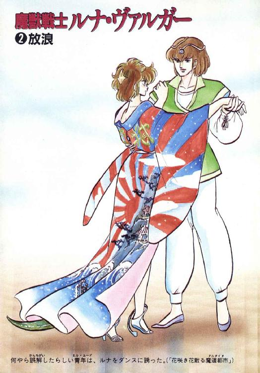
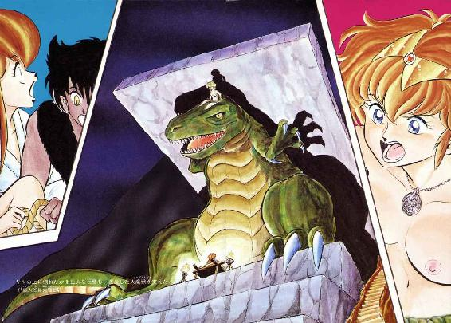
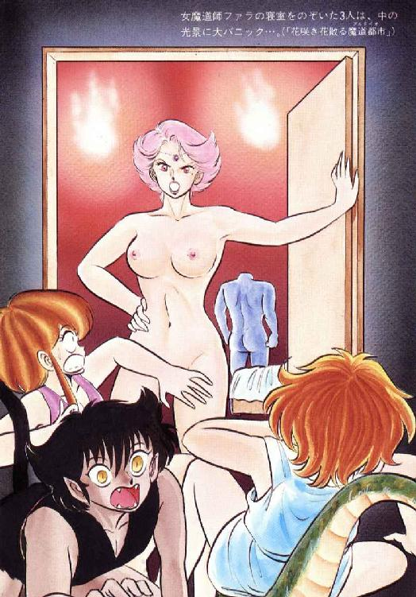
魔獣戦士ルナ・ヴァルガー
②放浪
秋津 透
本作品の全部または一部を無断で複製、転載、配信、送信したり、ホームページ上に転載することを禁止します。また、本作品の内容を無断で改変、改ざん等を行うことも禁止します。
本作品購入時にご承諾いただいた規約により、有償・無償にかかわらず本作品を第三者に譲渡することはできません。
本作品を示すサムネイルなどのイメージ画像は、再ダウンロード時に予告なく変更される場合があります。
本作品は縦書きでレイアウトされています。
また、ご覧になるリーディングシステムにより、表示の差が認められることがあります。
目 次
口絵・本文イラスト あろ ひろし
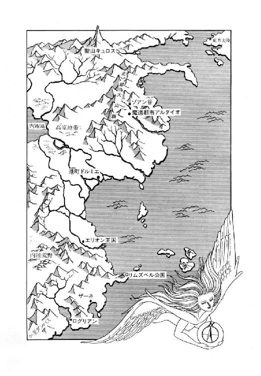
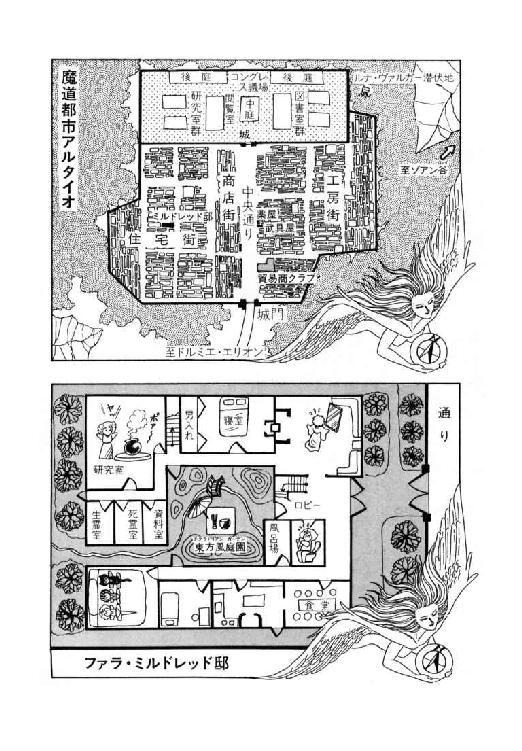
登場人物
ルナ・ド・リムズベル リムズベル公国の第二公女。魔獣と合体中。
魔獣ヴァルガー 伝説の大魔獣。無敵の威力を誇る。
ロ コ 有翼黒猫。ルナの使い魔。
リル（リム・リリス） プロの色事師娘。獣人に狙われている。
バト・ロビス ダンバス帝国の元部隊長。ルナを宿敵と狙う。
ミル・ユード 貿易商兼帝国青年貴族。バト・ロビスの甥。
レイピア・ロナ ミル・ユードに忠誠を誓う女戦士。
アル・ギルス ミル・ユードの配下の髭男。実は獣人（黒面洗熊）。
ファラ・ミルドレッド アルタイオでのルナの身元引受人。死霊術師。
ギルバート・エゼン 飛行竜を呼ぶことしか能のない魔道士。
リム・リオネル 獣人族の族長の娘。リルを追っている。
フィロス（砂鰐） ブルク（甲猪） ヘムル（牙鼠） ニグス（襟巻土竜）
ヴェグ（七色長舌蜥蜴） 以上、リオネル率いる獣人たち。
第一章 奇襲・追撃・大乱戦
１
「ふあ～～～っ」
大きな欠伸をしてしまってから、リムズベル公女ルナは慌てて自分の口をおさえた。壁ひとつ隔てた向こうでは、彼女を宿敵と狙う帝国の戦士バト・ロビスが眠っている。もし奴に気付かれたら、それこそ一騒動ぐらいじゃ済みそーにない。
口をおさえたまま、ルナは耳を澄ませた。彼女の体内に宿る魔獣ヴァルガーの超聴力が働き、巨漢の鼾を聞きとる。どーやら彼はぐっすりと眠りこんでいるようだ。
「ふう......だけど、あたしがあくびするなんて、こりゃ本格的におかしいな」
ルナは言葉にせずに呟いた。魔獣と合体して以来、疲れ知らず、空腹知らず、睡気知らずの状態がずっと続いていたのに、なぜか今朝は体の芯が重くだるい。
「確かに昨夜は無茶苦茶だったもんねー」
ルナは内心苦笑しながら思った。本職の娼婦リルに迫り倒され、愛戯が中断したとたんに彼女が客をとる現場を見学させられるはめになった。その客が強敵だったのも驚きだが、何にせよ十七歳の乙女には刺激の強すぎる夜だったのは間違いない。あげくの果てに、みょーな気分を何とかしようと烏猫のロコに御奉仕を頼んだのだが、これも今いちすっきりしなかった。
実は彼女が絶頂までいっちゃったら魔獣変身するんじゃないかと案じた烏猫が、御奉仕を控え目に抑えたのだが、そんなのルナの知ったこっちゃない。で、どーにももやもやが残ったまま、彼女は娼家の特別室に付いた隠し部屋の中で朝を迎えてしまったのである。
と、帝国戦士の鼾がごごうっと高くなったかと思うと、ぴたっと止まった。ルナははっとして監視穴に目を寄せる。
「うーむ、もう夜明けか」
呟いて巨漢はむっくりと起きあがった。普通なら女も起きて後朝の別れとなるはずなのだが、何しろこの相手にみっちりと可愛がられてしまったので、さしもの本職も薄く目を開いただけで起きるに起きられない。寝台から降りたバト・ロビスは苦笑して、少女に布団を掛け直してやった。
「よい、よい。ゆっくり休んでおれ」
そう言われ、少女は安心したように目を閉じ、すぐさま寝息をたてはじめる。巨漢は手早く衣服と鎧を身につけると、斧剣を腰にさして静かに部屋を出ていった。
「ふーん、あの中年戦士、見かけよりはずっと紳士なのね。知らんかったわ」
ルナは内心ほっとしながら呟く。しかし、あの調子では少女は当分起きてくるまい。烏猫も彼女の膝にもたれて居眠りの真最中だし、こりゃ当分このまま待ちになりそうだ。
「ま、今、下手に動くと中年戦士と鉢合わせになりそーだし......ふああ～～～っ」
呟きが途中で欠伸に変わり、今度は彼女も遠慮なく大口を開けて息を吸いこんだ。
一方、娼家を後にした帝国戦士は昇ったばかりの旭光を浴びながら、港町の大通りをのしのしと歩いていた。港の方からは活気のあるざわめきが聞こえてくるが、大通りにはほとんど人の気配がない。
と、男がひとり、横丁から大通りに走り出てきた。その髭だらけの横顔を見て、バト・ロビスの足が止まる。甥っ子が使っているギルスとかいう北方人だ。彼は不安げに左右を見回し、そして当然ながら巨漢に気付いてぎょっとした表情になる。
「ロ、ロビスの大将......」
「うむ」
立ちすくむ髭男にひとつうなずいて、巨漢は再びのしのしと歩きだす。そしてギルスの目の前でほぼ直角に曲がると、大蛸の看板を掲げた居酒屋に入ってゆく。髭男は一瞬ぼーぜんとそのだだっ広い背中を見送ったが、すぐさま我にかえって巨漢の後から居酒屋に入った。
「あ、お客さん、まだ開いてねえんで......どわ──っ！」
床の掃除をしていたウェイターが、バト・ロビスの巨体を見て腰を抜かしかかった。が、もちろんそんな奴には目もくれず、彼はどしんと席につく。髭男の方は素早く店内を通りぬけ、奥に通じる扉を開けて姿を消す。一瞬、バト・ロビスはその扉をちらっと見やったが、すぐにウェイターに射すくめるような視線を移した。
「牛羚羊の乳はあるか」
「は、はいっ、ございますっ！」
ウェイターはひきつりまくった表情で即答した。もし、巨漢が大蛸の生肝か何かを注文したとしても、多分彼は同じ返答をしてしまったに違いない。
「よし。そいつを大ジョッキで持ってこい。それに、牛羚羊の刺身だ」
「は？」
思わず目を丸くしたウェイターを、バト・ロビスはじろりと見すえた。
「昨夜、料理長のお奨め料理と称して出してきたあれだ。さっさと持ってこいっ！」
「は、はい～～っ！」
ウェイターが蒼白になって店の奥へすっとぶ。扉を開けると、彼は調理場に向かって絶叫した。
「お奨め料理、一丁！」
「おおっ、わたしの出番あるね、ボンジュール！」
東方人の料理長が長寝巻に調理士帽とゆーわけわからん格好でとび出してくる。しかもあきれたことに、彼は目を閉じて頭を垂れ、鼻提灯まで出している。つまり、眠っているのだ。目をむいたウェイターに、彼は寝言で大見得をきった。
「大丈夫、大丈夫。お奨め料理なら眠ってたって大丈夫あるよ、ボンジュール」
そしてその寝言通り、彼は眠ったまま肉切り包丁を振り回し、巨大な牛羚羊の肉塊を皿に盛る。ウェイターは溜息をついて、大ジョッキに乳を注ぎはじめた。
「は──、器用な芸をする野郎だぜ」
調理場から裏口に抜ける廊下に立ったまま、髭男はあきれて呟いた。しかし、今は他人の珍芸を面白がっている場合ではない。彼は表情をひきしめて、横手の戸を叩いた。すると戸の向こうから野太い声が問いかけてくる。
「牙鼠男にしちゃあ早いようだが、どちらさんですかいのお」
「獣人谷をとび出た慌て者でさあ」
そう言って、髭男は戸を開いた。そのとたん、彼の目がまん丸くなる。
「ブルク兄貴！ それに、フィロス兄貴も！」
「おお、ギルスかあ。ずいぶん久しぶりじゃあないか。元気でやっていたかい？」
砂鰐男がのんびりとした口調で言った。獣人がいるってえから多分同族だろーたあ思ったが、と髭男は戸を閉めながら内心呟いた。まさか実の兄貴が、しかも二人とも港町に来てるたあ予想外だったぜ。
「本当に久しぶりだのお」
包帯だらけで寝台に横になっている甲猪男が、懐かしそうな声をだす。
「今、何をやっとるんじゃい？」
「貿易商のユードさんとこで働いてる。もっとも、雇主は俺が変身獣人たぁ知らんがね」
そう言って、髭男は軽く肩をすくめた。
「今は若旦那のお供で港町に来てるんだ。今日中にも隊商といっしょに、北へ発つよ。それより、兄貴たちはどうして港町へ？」
「忘れたんかの、おんしは」
呟いて、甲猪男は寝台の上に体を起こした。真剣な表情で、弟をじっと見すえる。
「今年は十五年ぶりの、黒の年じゃからのう。蛇神様の祭儀をせにゃならんのじゃて。そん為に、わしら、気合入れて例の恥っさらしのリリスを追っとるんじゃがのう」
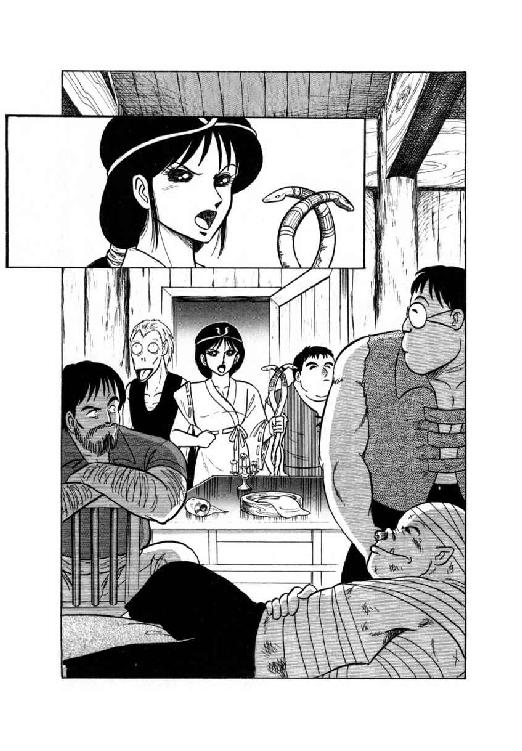
「あの娘、まだ捕まってなかったのかよ!?」
ギルスは思わず叫んでしまった。長兄は苦笑してうなずく。
「さすが、リム・エレノアの娘だけあってのう。根性の悪さ、逃げ足の早さもたいしたもんじゃて。じゃがのう、ものは考えようじゃ。今、あの娘を捕えれば、今年の生贄はそれで済む。あれも一応、祭司の血筋じゃからのう」
「そりゃそうだがね」
髭男は小声で呟いた。内心ではずいぶん勝手なこと言ってやがると思わないでもないが、もちろん口には出さない。
「で、彼女の居所はわかってんのか？」
「港町におるのは確かなようじゃ。昨日、フィロスとヘムルが捕えかかったんじゃがのう。思わぬ邪魔が入ってしもうた。あん娘、やたら腕の立つ女戦士と組みよったらしいわい」
「やたら腕の立つ女戦士？」
その瞬間、彼の背筋にひやりとする戦慄が走った。まさか、怪獣公女じゃねーだろーな......。
「ま、今、牙鼠男が周辺に散ってる仲間に集合をかけているからね。今日中にはかたがつくと思うよ」
次兄が例によってのんびりとした調子で言う。長兄がうなずき、弟の髭面をじっと見すえる。
「もちろん、おんしも手伝ってくれるんじゃろうの？」
「ああ。その代わり、雇い主に俺の素性がばれねえように気いつけてくれ。そうしてくれりゃ、できるだけの事はするぜ」
「ふむ。できるだけの事、か」
甲猪男が軽く鼻を鳴らす。と、その時、ノックもなしにいきなり戸がばたんと開いた。驚いて振りかえると、二人の男を左右に従えた紫色の髪の娘が立っている。年のころは十七、八ぐらいか、美貌だがやたらに気が強そうな印象だ。純白の長衣をまとい、右手には蛇の頭がついた黒い杖を持っている。
「これはリオネル様、いつこちらへ？」
「話は牙鼠男から聞きました。リリスを見つけたそうですね」
獣人族の巫女、リム・リオネルは甲猪男の問いには答えず、硬質の高い声で喋りだした。
「祭儀はもはや十日ののちに迫っています。今度こそ失敗は許されませんよ。蛇神様のおぼしめしに従って、必ずやあの憎っくき小娘を捕えるのですっ！」
「へへーっ」
いかにも威厳ありそーなリオネルの態度に、甲猪男と砂鰐男は深々と平伏した。彼女が何者かよく知らない髭男も、思わずつられて頭を下げる。
だが、巫女の左右に従っている男たちは、慣れているのか彼女の演説にも特に反応しない。右側のやせた男はうつろな目つきで宙をながめているだけだし、左側の丸っこい体型の男はどうやら居眠りをしているらしい。と、居眠り男がほとんど他人には聞こえないような声で、ぼそっと呟いた。
「神がかりで万事がうまく進むんなら、誰も苦労はしないんだがね。ま、いいか」
２
「いや～～っ、昨夜の客は精力的だったなあ。だいたい大男ってのは案外淡白型が多い だけどさ、さあすが南方の蛮人、野性味が違うねっ」
だけどさ、さあすが南方の蛮人、野性味が違うねっ」
ざーとらしく腰のあたりをとんとん叩きながら、リルは傍を歩いているルナに軽い調子で喋りかけた。ルナの方はぼーっとした表情で彼女のお喋りを聞き流している。
「ったく、あな種牧野郎のお相手つとめて金貨二十枚じゃ、絶対合わないな。はっきり言って身がもたんわ」
てな事言ってる割には、あんた充分元気じゃない、とルナは内心呟いた。実際、客が出て行ってすぐ、へばりきっていたはずの少女は素早く寝台からとび起き、烏猫を叩き起こして旅仕度をさせ、その間に娼家の女主人から約束の金貨を巻きあげている。そして、女主人にてきとーな口実をして、少女は半ばあぜんとしている同行者を引きずるように娼家を出てきたのだ。まったく驚くべき、つーかむしろ怖るべき回復力よね、とルナは呟いた。
「ふあ～～っ」
彼女の足元で、烏猫が大きな欠伸をした。この猫にはリルほどの回復力はないらしい。
「やれやれ、もー少し寝てたかったなあ」
「なーに吞気な事言っての、この舐め猫は」
少女があきれたよーな声をだす。
「もうちっとでもあの因業婆あのとこに居てごらん。尻尾があろーがなかろーが、彼女、否応なしに客とらされてるから。ったく、あたいが居なかったら、どーなってた事か」
「あんたが居なかったら、あんなとんでもねー宿になんか泊ってないよっ」
烏猫がむくれた声を出し、少女もぷいっと横を向く。この二人の口喧嘩、早くも恒例になってきたなあと思いながら、ルナは大きく欠伸をする。
それでも、横丁を抜けて大通りに出ると、彼女は一応戦士の表情になって左右をうかがった。そのとたん、通りの向こう側できょろきょろと周囲を見回している小男と、ぴたりと目が合う。
「あっ！ あいつ、昨日の獣人じゃない？」
ルナは小声で、しかし鋭く叫んだ。少女が小男を見、さあっと顔色を変える。小男の方も慌てて彼女たちに背を向け、馳け出した。
「追手が来るよっ！ 逃げなくちゃ！」
「落ちついて、リル。こーゆー時に、下手にじたばたするとかえって危険よ」
恐怖で表情をひきつらせた少女に、ルナはにこっと微笑みかけた。
「大丈夫。あんたはあたしが守ってあげる。約束したじゃない」
「だ、だけどさあ......」
あたが強いのは認めるけど、おそらく相手は一人や二人じゃないはずだ。ここはやっぱり逃げた方がいい、とリルが言いかかった時、烏猫が彼女のお尻をつんつんとつっついた。
「あ、あによっ!?」
「大丈夫。ルナ様にまかせておきなって。獣人の千や二千じゃびくともしないんだ、この御方は」
烏猫が半分面白がってるよーな調子で言った。彼にしてみりゃかなり控え目に真実を述べたのだが、当然ながらリルはそうは思わなかったらしい。鮮碧色の瞳に不安をこめて、彼女は自分の護衛者と大通りの向こうをかわるがわる見やった。
一方、大蛸酒場ではバト・ロビスが黙々と、牛羚羊の肉塊と乳を胃の腑におさめていた。そこへ、血相変えた牙鼠男がものすごい勢いで走り込んでくる。
「居たそーっ！ 出たそーっ！ リリスと護衛の奴らか現われたっ！」
妙な調子で喚きながら牙鼠男は店の中を馳け抜け、奥の扉を開けて姿を消した。バト・ロビスはわずかに眉を寄せたが、何も言わずに食事を続ける。
と、今度は奥の扉が勢いよく開き、奇妙な集団がどどどどどどどと走り出てきた。黒い杖を持った娘を先頭に、大柄小柄肥満瘠身とり混ぜた男たちが脇目もふらずくっついてゆく。さすがのバト・ロビスも、思わず食事の手を止め、けげんそーに彼らを見やった。
「何だ、いったい......おい、そこの髭面！」
「へっ？」
呼びかけられて、行列の最後尾に従っていた髭男が足を止めて振りかえった。他の連中は彼にかまわず店をとび出してゆく。
「確かギルスとか言ったな。いったい何をやっとるのだ、おぬしらは？」
「あ...ロビスの大将......」
まだ店にいたのかよ、この人は、と髭男は内心頭を抱えた。無視するにゃ相手が悪すぎるし、かと言って、もたもたしてたら兄貴や巫女さんたちに非難されるのは間違いない。
「ちょ、ちょいと野暮用なんで......あの、説明は後でちゃんといたしやすから......」
「今、出ていった中にこの店の用心棒がおったな」
相手の言い訳にまるで耳を貸さず、巨漢は食事を再開しながら訊ねた。早いとこ逃げなけりゃと思いつつも、髭男の脚はまるで動かない。ほとんど蛇ににらまれた蛙だ。
「あの男は変身獣人だ。知っておったか？」
「はあ......あの、いやその......」
「北方には奇妙な奴が多い」
自分の事を完全に棚にあげて、帝国戦士はぐいと乳のジョッキをあけた。
「おぬしも北方の出身だそうだが、まさか変身するのではあるまいな？」
「いやそんな......滅相もねえ......」
ぼそぼそと答える相手を、巨漢はぐっと見すえる。気の弱い奴なら卒倒しそうな迫力だ。
「ならば、変身獣人の男といっしょに、いったい何をやっておる。だいぶ只事ならぬ様子と見えたが？」
「いや、その、確かに只事じゃねえんですが......弱ったな、こいつは......」
ギルスは困り果てた表情で呟いた。その時、表の通りでわあーっとどよめきがあがる。歓声とも悲鳴ともつかぬその声を耳にした瞬間、彼の腹は決まった。どーやら事は起こってしまったらしい。となれば、これ以上もたついているのは冗談抜きで自殺行為だ。
「そいじゃ大将、一緒に来ていただけやすか？ 説明するよりその方が早えや」
「ふむ」
巨漢はわずかながら興味をひかれたような表情になった。
「よし、行こう。何があるのかは知らんがな」
言うが早いか、バト・ロビスは生肉の残りを一気に口に押しこみ、二、三度嚙んでから無雑作に大ジョッキを傾けた。
３
「来たな......」
呟くと、ルナはすらりと長剣を抜いた。大通りの向こうからすっとんで来る敵は、おおむね五、六人。あれが全部獣人だとすると、昨日のように剣を抜かずにあしらうのはちょっと無理だ。できれば魔獣変身はしないで済ませたいけど、と彼女は内心呟いた。
彼女が剣を抜き払ったのに気付き、獣人たちは多少距離をおいて立ち止まる。甲猪男と牙鼠男、それに巫女に同行してきた男の一人がそれぞれ剣を抜いた。
「無駄な抵抗はおやめなさい。すぐにその汚らわしい小娘を引き渡さないと、蛇神様の御怒りに触れることになりますよっ！」
リオネルが枚を振りあげ、高圧的な調子で叫ぶ。ルナが答えるより先に、彼女の陰から顔だけ出して、リルが素早く言い返した。
「汚らわしいたぁ何さっ！ てめーらこそ半分畜生のくせして、人間様にいちゃもつけるたぁ身の程知らずもいーとこでないのっ！」
「人間様、ですって？」
巫女は薄く嘲笑をうかべた。こういう表情をすると、硬質の美貌がひどく冷酷な感じになる。
「ふっ......お前は自分の事を何も知らないのね。でも、それでも恥っさらしな生活をしているあたり、血は争えないとしか言いようがないわ。この淫乱娘っ！」
「い...言ってくれるじゃない、獣人があっ！」
蒼白だったリルの顔が、怒りでかあっと紅く染まる。
「あたいが自分の体で商売して、何が悪いってだいっ！ 獣人なぞに四の五の言われる筋合いじゃねえやっ！」
「ふん、お黙り。お前が生きてる事自体が私たち一族にとっての恥なのよ。生まれた瞬間から、お前は蛇神様の御怒りに触れているのだからね。せめて祭儀の役に立てるのを、果報とお思いっ！」
「えーい、わけのわからん話をぐだぐだ並べるじゃなあいっ！」
少女が完全に逆上して叫んだ。思わず巫女めがけ跳びかかろうとするのを、ルナが片手で押さえる。そして彼女は巫女を見すえて、むしろ静かな口調で言い放った。
「この娘が何者で、あなた方にどういう事情があるのか、あたしは知らない。だけど、とにかくあたしはこの娘に、守ってあげると約束した。だから、むざむざとあなた方にこの娘を引き渡すわけにはいかないのよね」
「愚かな事を！」
リオネルが吐き捨てるように言った。
「そのような汚れた女をかばって、蛇神様の御怒りが怖ろしくないのですか？」
「どんな神様の怒りより、あたしは自分の良心の方が怖いわ」
ちょっとクサいかな、と思いつつもルナはきっぱり言ってのけた。そのとたん、今まで黙っていた烏猫が叫ぶ。
「ルナ様っ！ 敵が！」
「わかってるっ！ あんたたちは退がって！」
言うが早いか、ルナは殺到してくる三本の刀身に、自分の剣を叩きつけた。牙鼠男が受けきれずに剣をとり落とし、慌てて身を縮めて拾いあげる。その姿はすでに人間大の牙鼠だ。だが、彼以外の連中は、まだ誰も獣に変身していない。巫女が甲高い声で叫ぶ。
「何をやっているのです！ 獣化して戦いなさいっ！」
「無茶を言わんで下さらんかのう、リオネル様」
甲猪男が二歩ほど退がりながら答える。
「儂はヘムルと違ごうて、変身したら剣が持てませんのじゃ。おんしも同じじゃろ、ニグスよ」
「まあな」
丸っこい体型の男が、これまた後退しながら面白くもなさそうに応じる。
「しかし、どちらにしても俺たちの腕でどうにかなる相手じゃないな、この女戦士。負傷しないうちに逃げた方がいいような気もするが、ま、いいか」
「よくないわよっ！」
巫女がヒステリー寸前の声を出すのを聞いて、ルナは思わず苦笑した。獣化しない以上この男たちはただの田舎者、剣を持っていようがいまいが彼女の相手ではない。斬り捨てるほどのこともなし、また蹴倒してやろーかなと彼女は目の前の連中を見わたした。一応獣化している牙鼠男が一番手強わそうだが......。
「あっ!?」
その瞬間、ルナの右手首に何かが勢いよく叩きつけられた。不意を衡く強烈な打撃に、さすがの彼女も一瞬剣を握る手がゆるむ。そして同時に、手首を叩いた鞭のようなものがそのまま剣の柄にからみつき、凄い力でぐいと引いたからたまらない。あっと言う間もなく、ルナの手の中から剣が消えた。不覚、としか言いよーがない。
「し、しまったあ......」
思わず呟きながら、彼女は周囲を見回した。そしてはじめて、巫女の傍にいた瘠せた男が消えているのに気付く。姿はないのだが、ごくわずかな気配だけが感じられるのだ。いったい何だと思った瞬間魔獣視覚が働いて、人間には見えない敵が彼女の目に映る。そいつは、異様に大きな、焦点の合ってない眼玉をした細っこい直立トカゲだった。
「そうか......七色長舌蜥蜴なのか......」
それじゃ先刻の鞭みたいなのは奴の舌ね、とルナは内心納得した。だが、状況はそれどころじゃない。彼女が仲間に剣を奪われたのを見て、三人の敵が勢いづいて切りかかってくる。たちまちルナは防戦一方になった。烏猫がひきつった声で叫ぶ。
「ルナ様っ！ 変身、やらなくて大丈夫ですかっ!?」
「まだよっ！ 変身はまだっ！」
刃をかわしながら、彼女は叫んだ。剣を奪われたのは不覚だったが、獣人ごときにむざむざ斬られるよーなルナではない。むしろ、隙を見て誰かの剣をひったくってやるつもりでいる。まだまだ魔獣変身するほどの窮地じゃないね、と彼女は内心呟いた。
と、牙鼠男が大きく剣を振り回して切りかかってくる。一見すれすれで、しかし余裕をもってその攻撃をかわすと、ルナは低い体勢から下段蹴りをとばした。足元を払われて牙鼠男がつんのめり、続いて切りかかろうとする甲猪男の前によろけ出る。そして牙鼠の体を側方の楯にしたルナは、正面に来た三人目の剣をかいくぐり、太目の脇腹に拳を叩きこんだ。
「あうちっ！」
痛そーな叫びをあげ、ニグスはだだだっと後退する。しかし、さすがに剣は落とさない。苦笑したルナは次の瞬間体を反転させ、背後から襲いかかってきた甲猪男の鼻先に迎撃ちの蹴りを入れる。
「ぎゃおうっ！」
昨夜蛮人にしたたかに撲られた鼻をやられ、ブルクはたまらずのけ反った。剣を放り出し両手で顔面をおさえる。してやったりの笑みをうかべ、ルナは剣を拾おうと体をひねった。牙鼠男が慌てて阻もうとするが、その動きは完全に相手に予想されている。狙いすました回し蹴りをまともに胴中にくらい、牙鼠男は文字通りふっとんだ。
「さて、と」
素早く甲猪男の剣を拾い、ルナは獣人たちを威圧するよーに見すえた。が、その表情が、次の瞬間思わずひきつる。すでに十数人ほど集まっていた野次馬たちの間から、二人の男が出てきたのだ。二人、といっても彼女の目にはそのうちの一人しか映っていない。
「あ──......まずい所でえ......」
「おお、これはいい所で会ったな。小娘、そこ動くなよおっ！」
ルナの姿を目にするや、バト・ロビスは即座に斧剣を抜いた。そして、あぜんとしている髭男や獣人たちを尻目に、猛然と宿敵めがけて斬りかかる。
「だあっ！」
「おっとおっ！」
唸りをあげて襲いかかる斧剣を、ルナは素早く後退してかわした。拾ったばかりの剣をかまえ、先刻までとは比較にならない真剣な表情で帝国戦士と向かいあう。巨漢が牙のような歯をちらりと見せて笑った。
「尋常に闘う気だな。よかろう」
呟くが早いか、バト・ロビスは凄まじい勢いで相手に殺到した。まともに対抗したら熊でも吹っ飛ぶ。ルナは横っとびに身をかわし、側方から切りこんだ。が、斧剣がはねあがり、剣の切っ先を阻む。その瞬間、剣の先端がぱきっと音をたてて欠けた。ルナは思わず眉をしかめてぼやく。
「くう～～っ......安物ね──っ！」
しかし、そんな事言ってる場合ではない。間髪を入れず、巨漢が斧剣を叩きつけてくる。普通なら剣を擦りあわせて受け流すところだが、この鈍刀では刀身が保たない。ルナはやむなくとび退がってかわした。と、即座に斧剣が反転して迫ってくる。バト・ロビス得意の連続斬撃、敵が退がる分だけ踏みこんで反撃を許さずに間合を詰めまくる猛攻だ。
「くっ！ くくつ！ くっ！」
短く気合を発しながら、ルナは斧剣の先端を見切ろうと目をこらす。しかし、獣人たちとバト・ロビスでは戦士としての格が違う。魔獣視覚でも隙を見つけられず、彼女はじりじりと後退する。
「これでどうだあっ！」
咆哮をあげて、バト・ロビスが大きく踏みこんだ。斧剣が稲妻のように相手に襲いかかる。その閃光をぎりぎりまで待って、ルナは身をひねりながら大きく跳んだ。斧剣の刃が彼女の軽胸甲をかすめ、斜めに傷をつける。だが、ルナは人間離れした跳躍力で巨漢の頭を軽々と跳び越した。同時に彼女の剣がひらめいたが、これは惜しくも相手に届かない。切っ先が欠けているせいだ、と内心舌打ちしながら彼女は着地と同時に反転し、振りかえる帝国戦士とにらみあう。
「す...すげえ......」
巨漢と女戦士の闘いを見ながら、髭男は半ば無意識に呟いた。が、その呟きで、彼ははっと我にかえる。なぜ怪獣公女が人間態で闘っているのか知らないが、もし窮地になれば奴は必ず本体に戻るだろう。そうなってしまったら、巨漢戦士だろーが、獣人族だろーが、誰もどうする事もできなくなる。行動するなら、今しかない。
髭男は、ぼーぜんと対決を見ている兄貴の傍に走り寄り、小さな、しかし鋭い声で囁いた。
「ブルク兄貴！ リリスをかっさらうなら今しかないぜっ！」
「お、おうっ。わあっちょるわい」
甲猪男は夢から醒めたような表情でうなずいた。
４
「あ、あの男、昨夜のあたいの客じゃない？」
突如乱入してルナと闘いだした帝国戦士を見て、リルはひきつった声をだした。
「何だって、いきなり、ルナと？」
「さあ......僕もよくは知らない。何か因縁があるらしいけど......」
もっとも、南蛮戦士なら誰だってルナ様を恨んでて当然かな、と烏猫は内心呟いた。それより、どうしてルナ様は魔獣変身しないんだろう、と彼は首をかしげる。変身すればあんな戦士、どんと踏んづけて終わりだろうに。人間の考え方ってどうもよくわからない。
「こ、これ危いよっ！ いっくらルナが強くったって、蛮人にゃ勝てないよっ！」
ルナの真の力を知らないリルが、ぎゃいぎゃいと騒ぐ。
「早いとこ逃走しなくちゃ！ 命あっての物種だよっ！ どな因縁があるか知らないけど、あな巨漢まともに相手にしてたら、命がいくつあっても足りないじゃないっ！」
「命がいくつあっても足りないのは、蛮人の方さ。よりによってルナ様を狙うなんてね」
「何、太平楽な事言ってんのさっ！」
少女の声に激しい怒気が混じる。自慢じゃないけど、このあたいが他人の心配してやるなんて滅多にないんだぞっ！ それをこの、おーぼけの舐め猫があっ！
「あたらが殺られのは勝手だけどねっ、あたいは巻き添え喰うなんて御免だよっ！ そじゃ、お先にっ！」
言い捨てるが早いか、少女は烏猫にくるっと背を向け走りだす。彼は慌てて叫んだ。
「待てよっ！ 下手に動くと危ないよ！」
「言ってろっ！ このおーぼけっ！」
リルは走りながら振りむき、べーっと舌を出した。と、その瞬間、彼女の正面に何者かが素早く回りこむ。あっ、と思ったときにはすでに遅く、リルは牙鼠男にどんと衝突してしまった。さほど勢いがついていなかったので、牙鼠男は多少よろめきながらもしっかりと少女を抱えこむ。
「は、放せっ！ こ畜生──っ！」
「えーい、ちたぱたするんちゃないっ！ い、いてて──っ！」
リルが牙鼠男の腕にがぶっと嚙みつく。しかし、さすがに獣人、悲鳴をあげながらも捕えた獲物は放さない。そのまま路地へと走りこむ。騒ぎを耳にして振りむいたルナの目に、その背がちらりと見えた。
「ロコッ！ 追うのよっ！」
「わかってますっ......あわわっ！」
急いで翼を広げる烏猫を、背後から走ってきた甲猪男がはねとばしそうになる。間一髪横っとびに体をかわしたが、その間に甲猪野、巫女らの獣人たちがどどどっと路地に走りこんだ。
「こん畜生っ！ 待てーっ！」
先を越された烏猫は、大声で怒鳴りながら羽音とともに空中に翔けあがる。それから少し間をおいて、砂鰐男がどすどすと路地に走りこみ、その後から足音だけがぺたぺたと続いていった。七色長舌蜥蜴が保護色を変えながら、ゆっくりと移動しているのである。
それらを横目で見ながら、ルナは動かない。下手に動けば、たちまち斧剣の猛斬撃が襲ってくる。バト・ロビスは騒ぎに目もくれず、構えには一分の隙もない。まったく困った中年だよーと、ルナは内心溜息をついた。
「あのさ、今日はちょっと他に用ができちゃったのよね。だから、戦闘の続きはまた今度ってことにしてもらえると有難いんだけど。そうしない？......しないね、やっぱり」
「当たり前だ」
帝国戦士は唸るような声で応じた。まったくこの小娘めは、毎度毎度俺の事をおちょくりおって、許せん。怪獣に変身せず尋常の勝負に応じたところは、さすが古き名門の公女と見直しかかったが、ぬけぬけとこーゆーふざけた事をぬかすとは。
だが待てよ、と巨漢はこの時実に彼らしくもない事を考えてしまった。もし、小娘がこれまでの戦闘をすべて本気でやっていたとしたら、どうなる？ あの大蛸酒場の料理長のように、傍から見れば悪洒落以外の何物でもないが本人だけは大真面目という例もある。
「......ま、いい。とにかく俺が勝てばいいのだ」
呟いて、バト・ロビスは相手をぐっとにらみすえた。だが、ルナは彼の方を見ていない。妙な連中が去っていった路地のあたりを、気ぜわしげにちらちらとうかがっている。巨漢の頭に、再びかっと血が昇った。
「なめるな、小娘っ！」
怒声とともに、巨漢は一気に間合を詰めた。大きく振りかぶった斧剣が、ほぼ真正面から女戦士を襲う。先刻のように跳び退がったら、そのまま刃で突き込む構えだ。
と、ルナの手元から、剣が閃光となってはねあがる。即座にバト・ロビスは斧剣を真横に払う。激しい金属音があがり、ルナは素早く跳び退がった。斧剣を横に払ったため、後退した相手に第二撃を加えることはできない。巨漢は再びルナをにらみすえた。だが、その表情にはやや余裕の色がある。
「剣が折れたようだな、小娘」
「見りゃわかるでしょ」
今度はルナが素っ気なく応じた。一瞬、巨漢から折れた剣に視線を移したかと思うと、いきなり、無雑作とも見える動きで手元の剣を敵の顔めがけ叩きつけるように投げる。
「つまらん真似を」
苦笑すらうかべ、巨漢は斧剣をはねあげて投げつけられた剣をはじきとばす。だが、次の瞬間、彼はくわっと目を見開いた。剣を投げた女戦士は、その後間発をも入れず敵の側頭部めがけ跳び回し蹴りを放ったのだ。ルナのすらりと伸びた脚が、巨漢の視界にまともにとびこんでくる。
「ぐおおっ！」
半ば反射的に、彼は歯をくいしばって頭部をのけぞらせた。相手のつま先が、鼻先をかすめる。かわした、と思った瞬間、蹴り脚のすぐ後から丸太のような、太い鞭のような、深緑のものが振りだされてくる。
「な、何いっ!?」
尻尾だとおっ、と喚きかけたその瞬間、充分にしなって勢いのついたルナの尻尾が、バト・ロビスの喉笛に巻きつくような形でくいこんだ。ばちーん、ともの凄い音がしたかと思うと、巨漢の視界がふっと暗転する。
「さすがに効いたね。白眼むいてるわ」
軽やかに着地したルナは、相手の顔を見上げて呟いた。いくら頑丈な奴だって、喉笛を鍛えるわけにはいかない。あれだけの打撃をくらって、むしろぶっ倒れないだけさすがと言うべきだろう。
「さて......」
きっと表情を締め、彼女は路地へと馳けこんだ。それからしばらく間をおいて、やっと巨漢の目の中に瞳がころんと現われる。意識がはっきりすると同時に慌てて左右を見回すが、もちろん敵の姿はとうにない。
「お、おのれっ、隠し技を使って逃げるとは卑怯な真似をっ......どこだっ、小娘！ 出てきて尋常に勝負せんかあっ、があっ......げほげほげほげほ」
喚いたとたんに喉がずきんと痛み、バト・ロビスはみっともなくもげほげほと咳こんでしまった。が、次の瞬間彼はぐいと顔をあげ、集まってきた野次馬たちをぎろりとにらみまわす。
「何を見ておるっ。見世物ではないぞ。さっさと散らんかあっ！ げほげほ」
咳こみつつも凄い目付きでにらむ蛮族戦士の迫力に、野次馬たちはそろそろと散っていった。と、その一人が小声で呟く。
「どー見たって見世物だと思うがな、ありゃ」
５
「何かいる......」
狭い路地を凄い速度で突っ走りながら、ルナは呟いた。現在、彼女は視覚・聴覚・嗅覚に魔獣の超感覚を働かせ、少女をかっ拐った獣人たちを追っている。魔道でも使わない限り、この追跡者を撒くことはできまい。
「あの付近ね......よしっ！」
前方に妙な気配を察知しながらも、彼女は足を停めず猛然と路地を走りぬける。と、見るより早く、いきなり土煙が轟音とともにあがり砂鰐が地中から跳びだした。巨大な顎をぐわっと開き、一嚙みにしようとルナに襲いかかる。
しかし、砂鰐が跳びでるよりわずかに早く、彼女は大地を蹴って高々と跳躍していた。砂鰐の顎はがっきと宙を嚙み、ルナはその鼻先でくるくるっと空中回転したかと思うと、敵の攻撃範囲の数歩先へと降りてゆく。
が、着地寸前、今度は甲猪が突進してくる。この体勢なら逃げもかわしもできないじゃろうが、と甲猪は牙の生えた口でぬふりと笑った。ところが次の瞬間、女戦士は尻尾をぶんと振って体勢を変え、敵の鼻っ面を蹴とばしてその体を跳び越える。鮮やかと言う他ない身のこなしに甲猪は目標を失い、再三にわたって痛めつけられた鼻から血を噴きながら、砂鰐の攻撃範囲にとび込んでしまった。
「ぐお──っ！」
「わーっ、待てい！ 儂じゃあ、儂っ！」
背後の騒ぎなど気にもせず、ルナは再び猛スピードで走りだす。いくつ目かの角を曲がったところで、数人の叫び声が同時に彼女を迎えた。
「ルナッ！」
「ルナ様！」
「おのれ、あくまで邪魔立てする気か！」
巫女が甲高い声で叫んだ。
「ニグス、ヴェグ、そこのお前も、この女を倒すのですっ！」
気やすく言ってくれるぜと呟きながら、〝そこのお前〟と呼ばれた髭男は短剣を抜いた。しかし、怪獣公女、何でまだ人間態でいるんだ？ ロビスの大将や兄貴たちは、人間態のこいつにやられちまったのか？ どうにも訳がわからず、髭男は敵をじっと見やる。相棒も剣は抜いたものの、相手に近づこうとはしない。七色長舌蜥蜴のヴェグに至っては、ルナから奪った剣を抱いたまま、抜いてすらいない。とーぜん巫女が苛立った声をだす。
「何をやっているのです！ 敵は剣を持っていないじゃないですかっ！ さっさと斬り刻んでおしまいなさいっ！」
「強い奴は素手だって強い。俺はさっき、この女戦士に撲られたからよくわかる。勝ち目のない喧嘩はいやだからな。リオネルが多少怒るだろうが、ま、いいか」
ニグスがぼそぼそっと言ったかと思うと、たちまち人間大のエリマキモグラに変身する。そしてあっけにとられている巫女に剣を渡すと、そのまま地中に姿を消してしまった。はっと我にかえったリオネルが、泣きそーな声で叫ぶ。
「な、何やってるのよ、ニグスッ！ それでもあなた、獣人族四天王の一人なのですかっ!?」
「彼の選択は正解だと思うな。おいで、ロコ」
ルナがにこっと笑ってそう言うと、烏猫が翼をたたんで地上に降りてくる。そのまま彼女は、つかつかと巫女の方へ進み出した。
「さあ、負傷しないうちにリルをお放しなさい。その方が賢明よ」
「そーよ、そーよ。しょせん獣人どもなんざルナにかないっこないだから。さっさとあたいを放して、土下座して謝なっ！」
少女が牙鼠男の腕に捕えられながらも、ここぞとばかり喚きたてる。
「そいから、見舞金も払ってもらうかねっ！ 百や二百じゃ済ませないよっ！」
「えーい、やかましいっ！ お前みたいな性悪の下司女が私の従妹かと思うと、内臓が煮えくりかえりそうだわっ！」
巫女が逆上寸前の声で叫ぶ。少女は思わず目を丸くした。
「あたいが、あんたの、従妹ぉ!? ごじょーだんでしょ。あたい、獣人の親戚持った覚えなかないよお」
「そりゃ覚えはないでしょうよ」
巫女は素っ気なく言い捨てる。と、その鼻先にルナがぬっと顔をつきつけた。あ、身長が同じだ、と烏猫が思わずあまり意味のない事を呟く。
「事の次第は後でいいわ。とにかくリルを放してちょうだい」
「そうはいきませんっ。十五年間追いかけ回して、やっと手中に捕えた獲物をそう易々と渡せるものですかっ！」
ととっ、と一、二歩後退しながら巫女は叫んだ。すると相手も、同じだけ前に出る。
「それなら、ちょっと痛い目にあってもらわなくちゃならないかしら。女の子撲るのって好きじゃないけど、この際仕方ないもんね」
「お、脅しなんかに負けるものですかっ！」
巫女はまた一歩退がりながら叫んだ。声が多少上ずっている。ルナも、また一歩進む。
「私たちには蛇神様がついていますからねっ。神の怒りを怖れないなら、好きなようにしたら良いでしょうっ！」
「あ、そう。それじゃ、歯をくいしばって」
言うと同時に、ルナの右手が閃光のように動いた。防ぎもかわしもする間もなく、リオネルの左頰に痛烈な平手打ちが炸裂する。
「きゃあっ！」
思わず悲鳴をあげてぺたんと坐りこむ相手を、女戦士は厳しい目で見すえた。
「蛇神様だか何だか知らないけど、女の子を力ずくで拐ってっていいって法はないわよ。あきらめて、リルを放しなさい」
「あきらめるのはあんたの方だぜ」
横から鋭い声がかかり、ルナははっとしてそちらを向いた。いつの間にか髭面の男が静かに位置を変え、牙鼠男と少女のすぐ傍に立っている。そして、ただ立っているだけではなく、彼は短いがいかにも鋭利そうな短剣を少女の喉元に突きつけているのだ。さすがのリルも蒼白になって、声も出ない。
「おっと、動くんじゃないぜ。そっちの猫もな。ちょっとでも動いたら、この小娘の喉笛をかっさばく。俺は本気だぜ」
髭男はありったけの凄味をきかせて、ルナとロコをにらみつけた。女戦士が軽く眉を寄せる。
「素手の乙女と猫相手に何びびってるのよ、みっともない。少しは恥を知りなさいな」
「何言ってやがんでえ、ぬけぬけと。怪獣相手にしようってのに、恥だ外聞だ言ってられっか。とにかく動くなっ！」
髭男は目をいからせて喚いた。が、少女の喉にすえられた刃先はびくとも動かない。こいつ、見かけより落ち着いてるぞ、とルナは内心呟いた。しかも、気になる事に、男は彼女を怪獣呼ばわりしている。
「正体ばれてるのかな？」
髭男を見詰めるルナのまなざしが、ぐっと鋭くなる。男は臆せず、その目を見返す。
と、あっけにとられた表情をしていた牙鼠男が、おどおどした調子でギルスに囁きかけてきた。
「お、おい、ますいよ。この小娘、殺しちまうわけにはいかないんたそ。生かして谷へ連れてかなくちゃ」
「だからって他に手段があるかよっ！」
このトンマめ、と思いながら髭男は叱りつけるように言い放った。俺だって、本気でこの少女を殺そうなんざ思っちゃいない。殺すかもしれない、と相手に思わせたいだけなんだ。策略ってもんを知らねえのかよ、この田舎者どもは！
「いいか、動くんじゃねえぞ。動いたらすぐにずっぱりいくからな」
女戦士に念を押すように声をかけながら、彼は牙鼠男の脇腹を肘でつついた。
「おいっ、逃げるぞ。俺から離れんなよ」
「お待ちなさいっ！」
甲高い声がかかり、髭男はぎくっと巫女の方を見た。左頰を紅く染めた彼女は、怒りの形相も凄まじく、右手に杖、左手に土竜男が置いてった剣を持って立ちあがる。剣を抜こうとして両手がふさがっているのに気付くと、巫女は傍にぼ──っと突っ立っている七色長舌蜥蜴に杖を押しつけた。
「しっかり持っているのよ、ヴェグ」
そして返事を待たずに彼女は振りかえり、いったい何やっとるのと言いたげな表情のルナをにらみつける。
「よくも、よくもこの私に手をあげてくれたわねっ。親にもはたかれたことのないこの顔を、もうっ、蛇神様の名のもとに成敗してくれるから覚悟おしっ！」
逆上しまくった声で叫びながら、巫女は剣を抜く。ルナは軽く肩をすくめ、身構えた。そのとたん、ここぞとばかりにリオネルが叫ぶ。
「動くなっ！ 動いたらリリスを殺させるよっ。あの性悪の命が惜しかったら、おとなしく私に斬られるのですっ！」
「そ、そんな無茶なっ！」
と叫んだのはルナではない、烏猫だ。本人は苦笑をうかべ、身構えを解く。まさか、斬られる気じゃねえだろうな、と髭男は目を丸くした。剣を振りかぶった巫女の口元に、嘲笑がうかぶ。
「あなたも愚かね。それほどの武技を持ちながら、こんな性悪の淫乱娘に義理立てして蛇神様の怒りをかい、あげくに命まで捨てるなんて。どうせ色仕掛で釣られたんでしょうに」
「ちがわいっ！」
短剣を突きつけられているのも忘れ、リルが金切声で喚いた。色仕掛はこれから本格的にやる予定だっただ。だけど、そなの抜きでもこのお人好しはあたいを助けに来てくれたのさっ。そう叫ぼうとしたとたん、巫女が振りかえって、もの凄い目で彼女をにらむ。
「お黙りっ！ さっさと殺されたいかいっ！」
怒鳴りつけられ、少女はやむなく口をつぐんだ。どんなに絶望的な状況になっても、死ぬまではとにかく生き延びようとするのがリルのリルたる由縁である。と、ルナは場違いなまでに優しく、彼女に微笑みかける。
「約束したからね」
「お、おのれはあっ......」
再度ルナの方へ振りかえった巫女が、彼女の微笑を見て目尻を吊りあげた。
「自分の立場ってものがわかってないのっ！ あなたはここで、私に斬られて死ぬのよっ！」
「それはどうかしらね」
呟いた瞬間、ルナの笑みがにこりからにやりに変化する。ルナ様、ついにやる気だ、と烏猫は確信した。や、やべえ、と髭男の表情がひきつる。そして、逆上した巫女が剣をぶんと振った瞬間、彼女は高らかに叫んだ。
「ヴァルガーーッ！」
「な、何いっ!?」
いきなりルナの全身から凄まじい力が放射され、獣人たちは思わず顔をおおい、身をすくめた。そして、やっと目を開けられるようになったとたん、彼らはその場にへたりこむ。何しろ、いきなり目の前に巨大な魔獣戦士が出現したのだ。腰をぬかさない方がどーかしている。
「さあ、急いでリルを助けなくちゃ」
呟いて、ルナは魔獣をかがませた。魔獣変身したところで、少女を盾にとられたら手も足も出なくなる状況に変わりはない。ただ、相手のど肝をぬいて、恐慌しているうちに状況を有利に変えてしまうことができる。言ってみりゃどさくさまぎれ作戦だ。
だが、周囲を見回してもリルの姿がない。いるのは烏猫に七色長舌蜥蜴、牙鼠男、それに妙な獣が二、三匹である。黒面洗熊に縞兎、それにえらく無細工な直立鴨ノ嘴がぼーぜんと突っ立っているだけだ。
と、いきなり洗熊が魔獣を見上げて喚きだす。その声は、さっきまでリルに短剣をつきつけていた髭面の男のものだ。
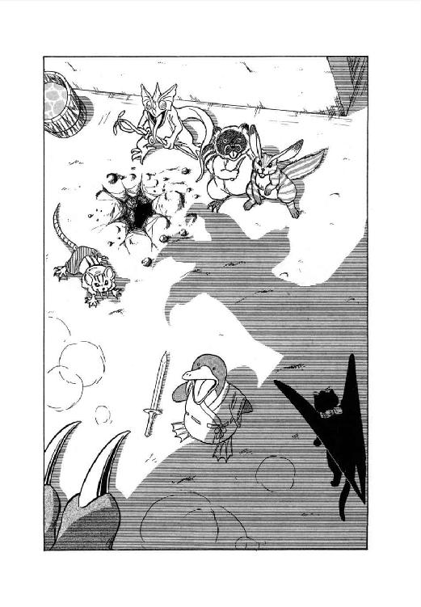
「寄るんじゃねえ、この怪獣野郎っ！ 寄ったら縞兎をぶっ殺すぞっ！」
「縞兎を殺すって......それ、リルなの？」
「そーみたい......」
縞兎がリルの声で呟く。さすがに衝撃受けてるみたいね、とルナは思った。
「なんとまー、あたいも獣人だったのかあ......だけど、怪獣こそ、ほんとにルナなの？」
「本人が言うんだから間違いないわ」
ルナは即座に請け合った。とたんに洗熊男が喚きたてる。
「寄るんじゃねえっ！ 俺は兄貴たちと違って、獣化しても道具を使えるんだからなっ！ 近づいたら、縞兎をズタズタに切り刻んじまうぞっ！」
「でかい口叩くじゃなあいっ！」
縞兎がいきなり叫んだかと思うと、強靭な後脚でぴょーんと跳ねあがった。そして、慌てて短剣を構える黒面洗熊の顔面に、強烈な飛び蹴りをくらわせる。
「ぐぎゃっ！」
「てめーらが獣人なら、あたいだって獣人だ。立場は互角だぞ。なめんじゃねえっ！」
威勢良く啖呵をきる縞兎を、ルナは半ばあきれて見やった。この娘、早くも獣人の境遇に順応しきってる。
「とにかく町中にいるわけにはいかないわ。ロコ、リル、早く乗って」
魔獣が前肢を差し出すと、烏猫と縞兎が素早く跳び乗る。と、それまでぼ──っとしていた直立鴨ノ嘴が、いきなり甲高い声で叫んだ。
「待ちなさいっ！ 逃がしませんよっ！」
巫女の声で喚きたてるその珍妙な生きものを、縞兎は冷酷なまなざしでじっと見た。そして一言、はっきり聞こえるように呟く。
「ぶさいく」
「ぐぐぐ──っ......」
絶句した鴨ノ嘴娘を尻目に、魔獣はぽんっと一跳びで港町の城壁を越えた。そしてほぼ同時に、地中から土竜男が顔を出す。
「凄い奴だとは思っていたが、あそこまで凄いとは思わなかったな。しかし、あんな怪獣がリリスを護ってる以上、獣人に絶対に勝ち目はないってことになる。ま、いいか」
「......よくな──いっ！」
鴨ノ嘴娘が半分泣きそうな声で叫んだ。
６
「我が主君、出ました！」
ミル・ユードが少し遅い朝食を食べ終える直前、女戦士が興奮した様子で馳けこんでくる。彼女にしちゃ珍しいな、と思いながら青年はごくあたり前の質問をした。
「出たって、何が？」
「リムズベルの大怪獣です！ もう、港町じゅう大騒ぎですわ！」
レイピアがそう言った瞬間、彼女の興奮が主君にも伝染した。青年の瞳がきらっと光る。
「よしっ！ すぐ行こうっ！」
叫ぶが早いか、ミル・ユードは立ちあがり宿舎の外へと走りだす。彼女がこの港町に入っているのは知っていたが、怪獣に変身したとなるともたもたしちゃいられない。彼に都合が良いか悪いかはとにかく、何か只ならぬ事件が起こったに違いないからだ。
しかし、それでも彼は出遅れていた。大通りに出た時には、すでに野次馬がわいわい言ってるだけで、魔獣は影も形もない。
「怪獣は？ どうなったの？」
レイピアが野次馬の一人に訊ねた。彼は軽く肩をすくめる。
「行っちまったよ。城壁跳び越えてな。いやー、凄え跳躍だったぜ。まるで何かに追っかけられてるみてえな勢いでよ」
「追っかけられる？ 何に？」
「そんなの俺が知るかよ。だけど、ひょっとしたら怪獣がもう一匹、さっきの奴を追っかけて出てくるかもしれないぜ」
船乗りらしい男は、そう言ってにやっと笑った。今度は彼女が肩をすくめ、主君の傍に戻る。
「行ってしまったようですね、怪獣は」
「残念だな。だけど、いったい何が起こったのかは調べられるだろう。ギルスは早朝から出ちゃってるし、僕も港町の商人と会う約束があるから、頼めるのはレイピアだけだな」
主君がそう言うと、女戦士は嬉しそうににこっと笑った。本人が思っているよりは、はるかに可愛い表情である。
「おまかせ下さい。すぐに調べて御覧に入れます」
「頼む。......あ、だけど魔道士の方は大丈夫かな？」
「心配ないと思います。寝てますから」
レイピアはあっさりそう言った。
「あれは放っておけば、いつまでだって寝てる男ですからね。ま、手間がかからないと言えば言えるけど」
起こしたら最後、目いっぱい手間喰うからなあ、魔道士は、と彼女は内心つけ加える。
「あの、間違ってもあれを起こすようなことはしないで下さいね、我が君」
「わかってる。じゃ、頼むよ」
青年はにこっと笑って、宿舎に戻っていった。女戦士は左右に視線を配りながら、大通りを歩きだす。と、散りかかっていた野次馬たちが、わいわいと彼女の周囲を走りぬけてゆく。
「どうかしたの？」
「北門のあたりで何かあったらしいぜ。とにかく行ってみりゃわかるさ」
「それもそうね」
レイピアは軽くうなずくと、野次馬たちの後について走りだした。すでに北門の方には、かなりの人だかりができている。
「はーい、ちょっと御免なさいねっ」
長身の女戦士はかなり強引に野次馬をかきわけ、人混みの中へと進んでいった。そして最前列に出たとたん、彼女の琥珀色の瞳がまん丸になる。
「叔父君さま!?」
「おお、レイピアか」
数人の男女にとり囲まれている巨漢が、彼女の声に振りかえった。
「何をやっとる？ こんな所で」
「あの......それは私が訊きたいのですけど」
思わず苦笑して彼女は野次馬たちの輪から前に出る。と、巨漢と向きあっている気の強そうな娘が、彼女をきっとにらみつけた。
「何者ですか、あなたは！」
「それも私が訊きたいわ。あなた方、何者？」
やや挑戦的な口調でそう言うと、レイピアはバト・ロビスの周囲の連中をぐるっと見回した。すると、眼鏡をかけた大柄な男が、彼女を見てにこっと笑う。
「やあ、昨夜はお世話になりました。あなたは確か、ユードさんのとこの人ですね？」
「ああ、あなた、昨夜の獣人さんね。それじゃあ、こちら皆さんそうなの？」
「ええ、そうです」
砂鰐男はにっこり笑ってうなずいた。その背後で髭男が姐御に気付かれないよう、必死に身を縮めている。
「で、その獣人さんたちが、叔父君さまにいったい何の用なのですか？」
「この者たちは、俺と行動を共にしたいと言うのだ。どうやら獣人も小娘めを敵に回しているらしくてな」
巨漢がぶっきらぼーな口調で言った。女戦士の細い眉がすっとあがる。
「ルナといえば、先刻怪獣の姿で現われて、すぐに逃げていったようですね。叔父君さまは御覧になりまして？」
「御覧も何も、俺は今朝方小娘と剣を交えたわい。結局逃げられてしまったがな」
「逃げた？ 怪獣が？」
レイピアの瞳が再びまん丸くなった。いくら剛勇を誇るバト・ロビスったって、怪獣が逃げだすというのは信じ難い。
「いったい、どうやって闘われたのですか？」
「どうやってと言われても、この斧剣で小娘の剣と打ちあったのだ。俺は敵の剣を折り、小娘は逃げた。それだけのことだ」
どちらかと言えば不満げに、巨漢は言い捨てた。ぽかんとしているレイピアに、砂鰐男がゆっくりと説明する。
「つまり、こちらの大将と闘ってる間、あの女はずうっと人間の姿をしてたんですよ。怪獣に変身したのは、大将の目を眩ませて逃げた後なんです」
「あ、なるほどね」
それなら一応、納得できなくもないなと彼女は思った。と、気の強そうな娘が、宣言するような調子で声をはりあげる。
「たとえ本性を隠していたとは言え、あの怪獣女を圧倒する闘いぶり、誠にバト・ロビス様こそ戦士の中の戦士、勇者の中の勇者です。どうかその比類なきお力を、私たち一族のためお貸し下さいませ。お願いでございます、この通り」
そういうと巫女はぺたんと平伏して、巨漢を伏し拝みはじめた。他の獣人たちも彼女にならって平伏する。女戦士はなかばあきれて、露骨に迷惑そーな表情のバト・ロビスを見やった。
「どうなさいます？ この者たち」
「いやだと言っても、つきまとわれそうだな。やむを得ん」
行く先々で拝み倒されてはかなわんからな、と呟きながら、巨漢は獣人たちを見回した。
「仕方ない。ついて来たいなら勝手にしろ」
「有難うございます、戦士さま」
巫女が芝居がかった声で礼を述べる。と、脇にいた甲猪男が小声で彼女に囁いた。
「ようございましたのう、リオネル様。この大将が味方になってくれれば、まだまだ望みはありますでのう」
「いいえ、まだ同行を許していただいただけです。真に味方になっていただくには、もっと手段を尽くさねばなりません」
囁きかえす巫女の瞳がぎらっと光る。手段を尽くすとはどうする気じゃろう、と甲猪男は内心首をかしげた。
そのとたん、バト・ロビスがずんずんと門に向かって歩きだした。獣人たちも慌てて立ちあがり、彼の後に続く。と、その時、一人の男が人混みをかきわけてとび出してきた。
「アイヤー、お客さん、待つあるよろし、ボンジュール！」
「何だ。料理長ではないか」
バト・ロビスはけげんそーな表情で振りかえった。調理士帽に白衣姿の料理長は、何のつもりか巨大な鉄鍋を甲羅のようにしょって、両手に大きな風呂敷包みを持っている。
「お客さん、わたしのお奨め料理、自分から注文した初めての人あるね。これ、わたしの料理の真の理解者あるよ、ムッシュー」
「......だから、どうした？」
「東方大陸の古い諺、武士は己れを知る主君のために死に、料理人は己れを知る客のために料理するあるよ、ボンジュール。わたし、これからずっと、お客さんのために料理するある。これ、料理人の本懐ね、ボンジュール、ムッシュー」
「......わかった。好きなようにしろ」
バト・ロビスはむしろ厳粛な表情になってうなずいた。そして、完全にあっけにとられているレイピアを見やって、重々しい口調で声をかける。
「カルバドク卿によろしく伝えておいてくれ。俺はこいつらと先に行くからな」
「は...はい......」
我が主君にこの一部始終を報告したらあの方は何て言うかしら、と思いながらレイピアは珍妙な一行を見送った。笑うだろうか、あきれるだろうか。いや結構しみじみと感心してしまうかもしれない。
７
「ロコ、遅いなあ。もう日が暮れちゃうじゃない」
沈みかかる夕日をあおぎ、ルナは小声で呟いた。すでに魔獣態から人間態に戻ってはいるが、魔獣変身の時に服も鎧ももろともにぶっ飛ばしてしまったので、首から掛けているペンダントを除けば完全なすっ裸である。
一方、彼女の傍ではリルが岩にもたれ、すうすうと寝息をたてている。彼女も獣人化の時に服を千切ってしまっているが、こちらは縞兎の姿のままなので裸でも別にどーとゆーこともない。それにしても、こんな状況の中で平気で居眠りしてるんだから、やっぱりこの娘も並の神経じゃないとルナは改めて思う。
そして、例によって貧乏くじをひいたのがロコで、二人の服や食料、武具などを買い出しに港町まで戻る羽目になってしまった。眠そーに顔をこすりながら、それでも文句ひとつ言わずに飛び立っていったのはいいが、それがなかなか戻ってこない。まさか帝国戦士や獣人たちにとっつかまるほど鈍じゃないとは思うけど、とルナは眉を寄せて呟いた。
「まあ、けっこう町から離れちゃったし、買物も多いから時間くうのも仕方ないか。夜になったから困るって烏猫じゃないしね」
「あーによ？ ロコの奴、まだ戻って来ないの？」
不意に、非難がましい声とともに縞兎娘がぴょこんと起きあがる。見ようによっては可愛らしいけれど、やっぱ人間の大きさの縞兎とゆーのはどーにも異様よね、とルナは思った。まして縞兎が人の言葉をしゃべり、人っぽい仕種をするとなりゃなおさらである。
「リル、そろそろ元に戻ったら？ その姿、さすがにちょっと奇妙よ」
「奇妙？ あたいが？」
縞兎娘の口から前歯がにゅっと顔を出した。どうやら笑ったらしい。
「ごじょーだでしょ。ルナにくらべりゃあたいの獣化なて、平凡、平凡。あたのは何つったって怪獣化だもねー。かないっこないわよ」
リルのからかい口調に、ルナは思わず苦笑した。まったく言いにくい事をずばずば言う娘ではある。
「ま、それはとにかく、あたい、今変身解いたらこごえちゃうよ。もう夜だしさ。あたは裸でも平気かも知れないけど、あたいはそうはいかないも」
「あ、そうか」
縞兎の姿をしていれば自前の毛皮がある。ルナは納得して縞兎娘に背を向けた。烏猫が戻ってこないか、見る見る暗くなる南の空に目をこらす。
と、彼女の背後から、リルがいきなりぴょんと跳びついてきた。背中に触れる感覚が毛皮ではない。
「リル、変身解いたの？ 寒いんじゃない？」
けげんそうな表情で振りかえろうとしたルナの唇に、肩越しに顔を出した少女の唇が押しつけられる。あららっ、と思う間もなく舌をさしこまれ、ルナはたちまち先手をとられてしまった。
愛戯やってりゃ獣化なかしてるより、よっぽど暖かいもね、と少女は内心ちろりと舌を出す。ルナの尻尾にまたがるような姿勢で、リルは両手の指を活発に動かしはじめた。何てったって二人とも裸だから、ことの進みは目いっぱい早い。
「うふ......どお、ルナ。感じる？」
唇を離し、リルは悪戯っぽく囁いた。ルナは答えるどころではない。頰にはまっ赤に血が昇り、紺色の瞳もぽわんと靄がかかったよーになっている。うふふ、かーいーっ、とリルはにまっと笑った。
「ルナがいけないだぞぉ。素敵なお尻にシッポまで振って、あたいのこと挑発するだから。思わず背後から襲っちゃったじゃない」
「そ、そんなあ......ああっ！」
少女の指が微妙に動き、ルナは体を弓なりに反らす。そのまま二人はうつ伏せの形で、草地の上に倒れこんだ。しかし倒れながらも、リルの指は吸盤でもついているかのよーに、ルナの急所から離れない。
「昨夜は邪魔が入ったけど、今夜はとことやっちゃおーね、ね、ね」
耳元で囁くと、リルは相手の熱い耳たぶを軽くくわえて舌でなめ回す。そしてあごから首ずじの滑らかな線に添って舌を這わせる。本職ならではの微妙な愛撫に、ルナのあえぎが一層高くなった。
「うふふ、感じてる、感じてる。それじゃあここなか、どうかなっ？」
「あっ！......あうっ、すっ、すごいっ！」
ほとんど我を忘れて、公女ルナは叫び声をあげた。
「もうっ、もうだめっ！ あたし、あたし、いっちゃう──っ！」
生まれて初めての絶頂感に翔けあがったその瞬間、ルナの体の中で何かがぱあんとはじける。そして間髪を入れず、凄まじい力が彼女の全身から爆発的に噴き出した。
「あ、あによっ!? 何事っ!?」
叫んだ時には、すでにリルの体は凄い勢いで空中にはねとばされている。そのまま地面に叩きつけられるか、と思いきや、彼女は自然に空中で平衡をとり、強靭な後脚からきれいに着地した。自分でも気付かないうちに縞兎の姿になっていたらしい。
「あだってーのよ、いった......あわっ！」
後ろを振りかえった瞬間、さすがのリルも腰をぬかしかかった。そこには、巨大な魔獣がうつ伏せに寝そべっていたのである。
「......どーなってんの、これ？」
「ドウナッテンノジャナイヨ。変身スルノハイイケド、少シハ姿勢ヲ考エテヤッテクレヨナ。ミットモナクッテ仕方ナイジャナイカ」
事態がのみこめずぼーぜんとしている頭脳体にぶつぶつ文句を言いながら、肉体は尻尾をぶんと振って、よっこらしょと体を起こした。そのとたん地面がどーんと揺れ、あっけにとられていた縞兎娘が尻餅をつく。
「大丈夫、リル？」
「一応はねっ！」
とんでもない高さから降ってくるルナの声に、リルは精いっぱい怒鳴り返した。
「だけど、あたなでいきなり変身なかしたのよっ！ 危ないじゃないっ！」
「叫ばなくてもいいわ、聞こえるから。そんでもって、あたしも別に変身する気なんかなかったんだけどな」
変身する気どころか、どーゆー気もなかったわ、とルナは上気した頰を押さえて呟いた。あったのは、痺れるような快感、突き抜けるような爽快感だけ。あれは凄かった。
と、その時、上空からばさばさっと羽音が降りてくる。すっかり暗くなった空を背景に金色の瞳がきらりと光った。
「すいません。遅くなりまして」
「何かあったの？」
魔獣をかがませながら、ルナは翼をたたんだ烏猫に訊ねた。彼は少し首をすくめる。
「いや、なかったんです。鎧と剣が。港町じゅう走り回りましたけど、売りに出てるのは全然ありませんでした」
「あったり前よ。最近世間が物騒だも」
魔獣の前肢に跳び乗った縞兎娘が、大声で口を入れる。
「どな駄剣でも飛ぶよーに売れての、知らなかった？ ったく、うといだから」
「ま、ないものは仕方ないわね」
ルナはあっさりと言った。その気になれば、素手でも並の戦士ぐらい叩きのめせる自信はある。帝国戦士となると、ちょっと危いが。
「で、他の物はみんなそろった？」
「はい。それから、例の蛮族戦士と獣人連中がいっしょに旅をしているのを見つけました。街道筋を集団でぞろぞろと北上中です」
烏猫の報告に、ルナは軽く眉を寄せた。
「そっか。連中、いっしょにいるのか。あんまり出くわしたくはないわね」
「賛成！」
魔獣の前肢から頭部へ跳び移りながら、縞兎娘が叫んだ。帝国戦士はとにかく、獣人たちは彼女を狙っている。いっくらルナが守ってくれるにしても、出くわさずに済めばこしたことはない。
「それじゃ、街道は避けましょう。このまま山づたいに魔道都市をめざせばいいわ。だけど先回りされちゃ困るし、魔獣態で進んだらどうかしら。魔獣は山歩き、速いわよ」
そう言ってルナはにこっと笑った。
「それいい！ あたいも楽できるし」
「それが本音だな。だけどルナ様、いくら山の中とはいえ魔獣は目立ちますよ。人を驚かしながらのし歩くのは、どうかと思いますが」
隠密行動を身上とする烏猫らしい意見に、ルナは腕組みをしてうなずく。
「そうね。魔獣態で動くのは夜間だけにしましょう。昼間は休まなきゃ、あたしはとにかくあんたたちが保たないでしょうしね。で、しっかり哨戒しながら、夜間に進む、と。御苦労だけど、哨戒はロコの役目になるわ」
「わかってます」
烏猫は即座にうなずいた。ルナは微笑して、彼が運んできた荷物をほどいて降ろしてやる。
「それじゃ、さっそく始めましょうか。ロコ、疲れてるとこ済まないけど、よろしくお願いね」
「はい。......と、その前にちょっと言っとかなくちゃ」
そう言って、烏猫は広げかけた翼を再び閉じた。そして、けげんそうなルナとリルを見回すと、ごく真面目な調子でしゃべりだす。
「これはルナ様にも自覚していただきたいし、リルにも知っといてほしいんだが、ルナ様は感情が爆発したり、興奮で我を忘れたりすると、自分の意志に関係なく魔獣変身することがある。そして、絶頂感っていうのも結局この興奮で我を忘れる、の一種なんだよね」
「てことはつまり、ルナはいったら最後、必ず変身しちゃうってこと？」
縞兎娘が半分あきれたよーな声をだした。
「そう思っといた方がいい。先刻は野外だったからリルが吹っとばされる程度で済んだけど、これが屋内だったら建物もろともぶち壊すことになる」
「確かにね......」
呟いて、ルナは肩をすくめた。考えてみりゃ、昨夜は危ないところだったわけだ。娼館からいきなり魔獣がわいて出たら、ちょっとこれは洒落や冗談じゃ済まされない。いや、それとも、これこそ冗談のきわみかな？
「というわけだから、今後いちゃつく時には十分に気をつけて下さいよ。それじゃ僕は哨戒に行ってきますから」
「ちょい待ち」
翼を広げかかった烏猫を、今度はリルが呼びとめた。
「何だい？」
「ルナがいったとたに変身したの、あたは見てたわけよね。てことは、あたいらの愛戯をずーっとのぞき見してたわけ？」
縞兎娘がにゅっと前歯をのぞかせた。烏猫は目に見えて動揺する。
「そ、それは、その......」
「別にのぞいててもいーけどさ、どーせならあたも参加して御奉仕のひとつもしたらどう？ でないと、こ次から見物料とるかね。ねえ、ルナ」
「あのねえ......」
ルナは思わず額をおさえた。どうしても、この娘の発想にはついていけない。
第二章 花咲き花散る魔道都市
１
「おい、起きろよ。もう日が暮れたよ」
烏猫が前肢でリルの頰をつつくと、鮮碧色の瞳が面倒臭そうに片方だけ開いた。
「あによぉ、もう出かけのぉ？ もうちっと寝せといてよ、あたい疲れてだからぁ」
「何言ってんだい。何もしないで一人でぐうぐう寝てたくせに。さっさと起きろったら」
ロコはぶうたれながら少女の顔をつんつんとつつき続ける。と、焚火の方からルナが声をかけた。
「御飯の仕度、できたわよ。早くいらっしゃい」
「はぁい！」
現金なほど素早くリルが跳び起き、ルナの傍にはねてゆく。烏猫も多少ぶつくさ呟きながらもその後を追った。すでに太陽は山陰に姿を消し、周囲は見る見るうちに暗くなってきている。もう、港町を出て五日が過ぎた、とルナは焚火で焼いた干魚をかじりながら思った。
「ロコ、魔道都市まであとどのくらい？」
「もう、あと一息ですよ。魔獣の速度なら夜明け前に着けるでしょう。変身しなくても、昼ぐらいには行き着けると思います」
「そうかあ......どうしようかな」
呟いて、ルナは胸元からペンダントを引き出した。蓋の部分をひねってはずすと、中に黄色い錠剤が入っている。彼女が魔獣態から人間態に変身するために使われる〝掛け戻し錠〟だ。魔道士王女テオドラから十二錠贈られたのだが、あと三錠しか残っていない。
「あと三つかあ......今晩は変身しないででかけようかな」
「でも、魔道都市まで行きゃ、それ、補充できるでしょ？」
そう言って、リルがにこっと笑った。
「そならケチなこと言わず、変身しちゃいなよ。その方が面倒なくていいじゃない」
「要するに、自分が魔獣に便乗したいんだろ」
烏猫が皮肉っぽく口をはさんだが、少女は気にもとめない。
「ね、そーしようよ、ルナ。変身すなら、あたい目いっぱい奉仕したげるっからさ。ねっ、ねっ、そーしよっ」
「そうねえ......」
ルナは苦笑まじりの表情で少女を見やった。そして小さく肩をすくめ、ペンダントの蓋を閉める。
「じゃ、お手柔らかにね」
「そうこなくっちゃあ！」
してやったり、と言わんばかりの笑顔でリルがうなずいた。最後の魚をきれいに平らげるが早いか、彼女は立ちあがり、さっさと短衣を脱ぎはじめる。ルナもつられたように、立ってマントを脱ぎだした。
「やれやれ。結局、またか」
呟くと、ロコはぴょんと宙に跳びあがって一回転した。その姿が有翼猫から、浅黒い肌の少年に変わる。二人が脱いだ衣類を手早くまとめ、彼は女性たちの方へ目をやった。ルナはぺたんと草地の上に坐りこみ、リルが正面からもたれかかるように唇を重ねている。すでに二人とも身に一枚の服もまとっていない。御奉仕の時でさえ絶対に裸にはならなかった前の御主人とはえらい違いだ、と少年は苦笑した。もっとも彼女たちの場合、服を着てたら絶頂変身の瞬間にはじけとんでしまう。
「んふ。ルナ、だいぶ上達したじゃない」
唇を離したルナが、からかうような口調で言った。そりゃ、こうも毎晩いちゃついてればいっくらルナ様だって多少の技巧は身につけるさ、とロコは内心呟く。しかし多少上達したところで、しょせん色事にかけては素人が本職にかなうわけない。たちまちリルの指がこちゃこちゃと動きだし、全面的に主導権をとられたルナは白い頰を紅く上気させてあえぎはじめる。
「どれ、そろそろ救援にいくかな」
呟いて、少年はからみあってる二人の方へとことこと歩み寄った。そして素早く、少女の下側に上体をすべり込ませる。
「それじゃ、御奉仕、いきまーす」
「あああっ、いつの間にもぐり込だのよ、この舐め猫ったら、あうっ！」
烏猫少年のざらざらした舌が活躍をはじめ、今度はリルが派手にあえぎだす。
「や、やめやめっ！ そこは、あうっ、やめっ、ちゃだ、めっ！ だめよっ！」
どっちなんだ、いったい、と少年は内心くすっと笑った。同時に、手を少女の可愛いお尻に回す。舌ほどじゃないが、人間態の時には指だって使える。リルのあえぎがますます高くなるが、それでもルナを愛撫する手はゆるめない。毎度のことながら、さすが本職とロコは思った。
それからしばらく、ロコがリルに、リルがルナに熱烈な愛撫を続ける。そしてその間、三人の中でただ一人冷静な少年は、体内に備わった特殊な感覚で正確に時間を測っていた。
「よし、そろそろだな」
出発予定時刻が迫ってきたのを感じとり、彼は内心呟いた。同時に体の向きをくるりと変え、今度はルナを愛撫しはじめる。リル一人でも受けかねている所へ、ロコまで加わったのだからこれはたまったもんじゃない。たちまちルナの体が弓なりに反り、細かい震えとともに絶頂の叫びをあげる。
「あ──っ！ もうだめっ、いくぅ──っ！」
「そら、きたぞっ！」
少年が鋭い声で叫び、少女の鮮碧色の瞳がさっと正気に戻る。そして次の瞬間、ルナの魔獣変身パワーが二人をはねとばし、リルを縞兎の姿に変えた。ロコも空中でくるっと後転して、有翼猫の姿に変わる。
「ふーう、やっぱり気持ちいーなあ」
魔獣の額で、ルナは大きく伸びをした。絶頂に達して変身すると、魔獣態になってもしばらく爽快感が続く。だけど、これがやみつきになったらちょっとやばいよーな気もするなあ、と彼女は思った。
「でもまあ、変身するのに違いはないし......彼女の言いぐさじゃないけど、どーせなら楽しくやっちゃった方がいいじゃない、ね」
やや自己弁護じみた口調で彼女は呟いた。独言のつもりだったが、いきなり頭の中で低音のおちついた声が反応する。肉体の奴だ。
「ソウダナ。興奮ヲ極メテ変身ヲ解クト、シバラクノ間、活力水準ガ高位ニ保タレルヨウダ。ナカナカ面白イ現象ダヨ」
「あんたに面白がられる筋合いじゃないわ」
自分に自分を笑われているような気がして、ルナはちょっと声を尖らせた。それきり肉体は沈黙したが、何となく忍び笑いをしているような感じもする。
「ったく、他人事みたいに......」
縞兎が乗れるように魔獣をかがませながらルナはいささか腹立たしげに呟いた。そのとたん、ふと妙な疑問がわきあがる。あたしが絶頂に達してるとき、肉体も何か感じているのかしら？ 頭脳体と肉体の感覚は常時同調しているわけではないが、必要とあればすぐに連結する。もし、魔獣があたしのやっている色事に興味を持ったら......。
「うえっ......」
そのとたん、リルに愛撫されてよがっている巨大二足直立竜のイメージが頭に浮かんでしまい、ルナは思わず顔をしかめた。
と、その時ばさばさっと羽音をたてて烏猫が昇ってくる。漆黒の体が闇にとけこんで、人間の視力ではまず見えないだろう。
「ルナ様、哨戒に行ってきます。夜明けまでには戻るつもりですが、もしその前に魔道都市が見えてきたら人間態になって待っていてください。魔獣態で接近したら、まず間違いなく警戒されますからね」
「うん、わかってる」
ろくでもない妄想を急いでふり払いながら、ルナはうなずいた。魔道都市には強力な魔道士がうじゃうじゃしているらしいから、魔獣戦士といえども軽はずみな真似は禁物だろう。
「そっちも気をつけてね」
「はい。慎重にやります」
烏猫は真剣な口調で答えた。本来彼は魔道士王女テオドラの魔力で創られた使い魔だから、間違っても魔道の力を見くびる事はないだろう。
「衣類はリルに渡してありますから、それじゃ」
そう言って有翼黒猫は大きく翼をはばたかせ、夜空へ翔けあがっていった。
２
「ロコ、遅いなあ。もう夜が明けちゃうじゃない」
呟いてルナは空を見上げ、山あいにちらりとのぞく魔道都市の城壁を見やった。すでに人間態に戻っているが、魔獣視力の働きで城壁の様子は手にとるようにわかる。しかし今のところ、巨大な壁の周囲には何の動きもない。
「ドジこいて、どっかでくたばってとちゃう？ 利巧なよーでいて、結構抜けてっかね、あの舐め猫」
「まさか......あっ、聞こえる！」
叫んで、ルナがくるっと振りむいた。少女もつられて夜明け寸前の空を見上げるが、何も見えないし、聞こえない。
「南から来るわ。でも、これ烏猫かな？......ちょっと羽音がおかしいみたい」
ルナが首をかしげた時、東の山すそからさあっと旭光が差しこんだ。それとほぼ同時に南側の山間いから、これは少女にもはっきり見える漆黒の姿が現われる。夜はとにかく、日光の中では烏猫はやたら目立つなあ、とリルはふと思った。
「飛び方がおかしいわね。けがでもしたのかしら......傷らしいものは見えないけど」
目を細めて様子をうかがいながら、ルナは呟いた。もし彼が飛んでいられないような状態でいるなら、すぐにでも魔獣変身して助けに行かなくちゃならない。
しかし、多少よたつきながらも烏猫は巧みに滑空して、ルナたちの前に降りてきた。地面に脚をつけるとふうっと大きく息をつき、翼を畳みこむ。
「どうも、遅くなりました」
「どうしたの？ けがしたんじゃない？」
心配そうに訊ねる女主人に、烏猫は軽く頭を振った。
「大丈夫です。風切り羽を二、三枚斬られただけですから。翼を畳んでおけば、すぐに回復しますよ」
そう言って、ロコは笑いに近い表情をしてみせた。
「それより、朗報です。蛮族戦士と獣人たちの一行を発見しました。僕たちよりもかなり南にいますよ」
「ほんとっ！」
少女がはずむような声を出す。烏猫はうなずいてとことこと歩きだした。
「どうせ魔道都市には近づけないからね。だめでもともとのつもりで、街道筋の集落に行ってみたんだ。そうしたら意外にも、連中しっかりそこで宿とってたわけ」
「へえ、宿をねえ」
ルナは本当に意外そうに呟いた。あの猪突猛進中年のことだから、昼夜兼行の強行軍で突き進むか、せいぜい野宿で仮眠するぐらいだろうと予想していたのだが。
「で、距離は？」
「普通の旅脚で、昼じゅう歩いて魔道都市に着くかどうかってところですね。連中が泊ってるのは大きな百姓家で、戦士とリーダー格の娘が母屋、あとは一人を除いて納屋に泊ってました」
そう言いながら、烏猫はひらりと小さな崖を跳び降りた。むろん、ルナとリルも身軽に彼に続く。視界が開けて、魔道都市の城壁と門が正面に全容をあらわす。都市は山の中腹に張り出すような感じに造られ、城壁は魔獣跳躍でかろうじて越えられるかどうかという巨大さだ。
「それで、当然ながら僕は情報をとろうと思って母屋の天井裏にもぐり込んだんですけれどね。下をのぞいて見たとたん、いや、驚きました。まったく予想してなかったわけじゃないけど、とにかくあの二人、真最中だったんですよ」
「真最中って、何の？」
ルナがけげんそうに訊ねたとたん、少女の肘がつんつんと横っ腹をつつく。
「ったく、相変わらずぼけなだから。男と女がひとつ部屋に泊って真最中とくりゃ、やってるこたぁ決まってるでしょーに」
「へ？」
一瞬、公女の目がまん丸くなり、そしてすぐに頰にぽっと血の気が昇る。
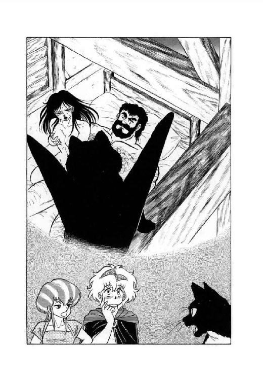
「や、やだあ......でも、あのバト・ロビスとあの獣人娘ねえ......何かイメージじゃないわね」
「だけど、そうなんです」
そう言ってロコはちょっと首をすくめた。
「なかなか凄かったですよ。女の方が戦士の腰にまたがって、自分で体を揺すって頑張ってるんですからね。髪ふり乱して、汗びっしょりになりながら、こう乳房揉みしだいて......うーん、あれは迫力があった」
「何を納得してのよ」
少女があきれたよーな声をだした。が、すぐにその目尻がきゅっと吊りあがる。
「それにしても、あの鴨ノ嘴女もいー気なもよね。あたいのこと色気違いの淫乱のつっといて、自分だって肉体をエサに戦士をひっぱり込でじゃない。今度会ったら言ってやろっと。あたもあたいと同類じゃないってね」
「それで悪口になっちゃうんだから、困ったもんだね」
烏猫は苦笑をまじえて呟いた。しかし、すぐ真面目な口調に戻って続ける。
「だけど、リルとあの娘が同類っていうのは本当らしいですね。蛮人に彼女が喋ってるのを聞いたんですが、連中はリルを祭儀の生贄にする気らしい」
「生贄ですって？」
その凶々しい語感に、ルナは思わず眉をしかめた。リルは険しい表情で、黙って歩いている。ロコは話を続けた。
「ええ。獣人たちは自分たちを〝ゾアン〟と言ってるようですが、その獣人たちは十五年に一回、連中の崇める蛇神に生贄を捧げる掟になってるそうです。この生贄は特別な血筋の若い娘と決まってて、あの娘もリルもその血筋なんですね」
「つまり、あたいでなければあの鴨ノ嘴女が生贄になるわけ？」
リルが、彼女にしては平板すぎる声で訊ねた。烏猫は軽く頭を振る。
「蛮族戦士もそのへん訊ねてたけど、あの娘の親父ってのがなかなか精力家らしくて、他にも娘はうじゃうじゃいるようだね。ただ、彼女としては自分の姉妹より、従妹を犠牲者にしたいってことらしいや」
「ったく、勝手なこと言ってくれちゃって」
少女の語調に冷たい怒りがにじみ出る。こういう立場に立たされりゃ誰だって怒るのは当然よね、とルナは思った。ロコはちょっと首をすくめて言葉を続ける。
「確かに勝手な話だけどね、少なくともリルが今年の生贄になる事はないと思うよ。祭儀は五日後に迫ってるらしいから」
「するとあたいは今日を入れて五日間、逃げきればいいわけか」
リルがきつい口調で訊ねながら、からまった木の根をぴょんと跳び越える。ロコはまた頭を振った。
「いや、逃げる必要はおそらくないな。魔道都市はうろんな者は入れない都市だからね。僕らは紹介状を持ってるから大丈夫だけど、獣人にはそんな物ないだろう。だから、魔道都市にいる限り、まず安全と思っていい」
そう言って烏猫は前肢をあげ、前方にそびえ立つ都市を示した。いかにも堅固そうな城壁のたたずまいに、少女の表情が少し柔らぐ。
「そーね。あ中なら大丈夫そうね」
「だろ。もし都市の中で生計が立つようなら、当分出ない方がいいんじゃないかな。僕の考えでは、むしろ祭儀が過ぎてからが危険な気がするしね。リルが生贄をまぬがれりゃ他の娘が犠牲になって、連中はますますリルを憎むと思うよ」
「誰が誰を憎むだって？」
少女の声が再び危険な響きを帯びた。烏猫は一瞬ひやりとしたものを感じ、思わず少女から一歩離れる。と、ルナがそこで話題を変えた。
「ところで、ロコ。あんた風切り羽を斬られたって言ったわね。それ、バト・ロビスにやられたの？」
「いや、違うんです。そのうち戦士と娘が眠り込んだので、そろそろ引き揚げようと思って天井裏から台所に降りたんですよね。一人眠ってる奴がいたけど、ぐうぐう軒かいてるから安心して飛び立とうとしたとたん、いきなり包丁持って斬りかかって来まして」
そう言って、烏猫は片方の翼をばさっと広げた。
「あわててかわしたんだけど、先端をかすめられました。危ない所だったなあ」
「狸寝入りしてたの？ そいつ」
ルナが訊ねると、ロコはちょっと首をすくめた。広げた片翼を二、三度動かして、また畳む。
「それが違うんですよ。こっちが魂消て身構えたら、そいつ、『わーたしは料理長、わーたしは天才、おーまかせあるよボンジュール』ってわめいて、またばたっと横になっちゃったんです。おっかなびっくりで突っついてみたんですけど、完全に眠ってるんですね、これが」
「へーえ......そいつ、獣人かな？」
今度は少女が質問し、烏猫は軽く首をかしげた。
「変身はしなかったし、訛りからすると東方人みたいだったけど。だけどとにかく薄気味悪くて、尻尾巻いて逃げてきちゃった。獣人かどうかはとにかく、ありゃ只者じゃないよ」
「世の中には、変わった奴がいるからね」
ルナが何の気なしにそう言ったとたん、ロコとリルが同時にぷっと吹き出した。
３
「エリオンのテオドラ王女の紹介ですか」
紹介状を見ながら、若い魔道士は軽くうなずいた。
「紋章はよし、書式も間違いなし。はい、結構です」
「どうも」
ルナはにっこりと微笑した。これでどうやら問題なく魔道都市に入れそうだ。
現在、彼女たちがいる所は城門の脇にある『入都市審査局』である。魔道都市を訪れる者はそう多くないらしく、窓口はひとつきりで、手続をしているのは彼女たちだけだ。
「それでは通行証をお渡しします。呈示を求められる事がありますから、常時身につけていて下さい」
「はい......あら？」
窓口越しに出された通行証を見て、ルナはちょっとけげんそうな表情になった。二枚のカードにそれぞれ彼女と烏猫の姿が写し込まれているのはいいのだが、もうひとり、リルの分がない。
「あの、この娘の分は？」
「この娘？ ああ、同行者ですか」
魔道士は、はじめて気がついたような表情で金褐二色の髪の少女を見やった。そして、当然といった調子で続ける。
「それでは、彼女の書類をどうぞ」
「え？」
ルナはきょとんとした表情になった。その表情を見て、魔道士の眉がわずかに寄る。
「彼女の分の書類ですよ。無いんですか？」
「あの、紹介状の他に書類が要るんですか？」
無邪気な、と言っていいほどの口調で訊ねかえされ、魔道士の表情が明らかに渋ったくなる。彼はちょっと肩をすくめ、説明を始めた。
「この紹介状にはあなたと使い魔については書いてありますが、同行者の事にはまったく触れていないんです。ですからそっちの人が魔道都市に入るためには、彼女についてきちんと記述のある紹介状が必要なんですよ」
「あら、そうなんですか」
意外そうな表情で返事をしながら、ルナは内心自分のぼけさ加減に苦笑した。リルと出会ったのは魔道士王女とわかれた後なのだから、紹介状に記述がないのはあたり前。ちょっと考えりゃ、すんなり行くわけないのが予想できたはずだ。だが、今さらそんな事言ったってはじまらない。
「書類がないとなると、お気の毒ですがそっちの娘さんは通せませんね。どうします？ あなた方二人だけ、入城しますか？」
多少同情らしきものを混じえながらも、事務的な口調で魔道士が訊ねる。ルナはふりかえってロコとリルを等分に見やった。
「困ったわね。どうしようか？」
「どうしようったって......どうしようもないですねえ、これは」
烏猫が頭を振って、あまり意味のない返事をした。が、少女は無言で素早く前に出る。そして窓口にとりすがるや、彼女はいきなり目いっぱいのブリッ子声で哀願をはじめた。
「あのお、どうしてあたしだけ通してもらえないんですかあ。あたし、なんにも悪いことしてませんけどお」
うそこけっ！ とロコが思わず口走ったが魔道士の耳には入らなかったらしい。困り果てた表情で、彼は瞳に涙すら溜めて訴えかける少女を見やった。
「うーん、何とかしてあげたいのは山々なんだけどねえ、規則は規則だし......僕の一存じゃどうにもならないんだよ」
「そんなあ、ひどいですう。せっかくここまで来たのに、あたしだけ通してもらえないなんてえ、あんまりだわあ、ふぇ～ん」
少女は本当にしくしく泣きだした。魔道士の表情に、少なからぬ罪悪感が現われる。まったく大した演技力ね、とルナは半分感心、半分あきれて思った。これはうまくすると、文字通り魔道士を泣き陥とせるかもしれない。
だが、彼は済まなそうに、しかし断固として首を振った。
「可哀そうだけど、書類が何もないんじゃ融通のつけようもないな。とにかくテオドラ王女なり、他の魔道士なりに紹介状を書いてもらって来なさい。それ以外は、本当にどうしようもないよ」
「どうしても、だめですかあ？」
ぐすんぐすんとしゃくりながら少女が訊ねる。魔道士は厳しい表情をつくり、再度首を振った。
「どうしても、だよ」
「これでも？」
その瞬間、不意にリルの声の調子が変わった。窓口の上に素早く跳びあがったと見るや、あっけにとられている魔道士の頭を右腕で抱えこむ。同時に左手から硬質の短い光がとび出し、彼の無防備な喉元に突きつけられる。
「動くんじゃない。あたいは本気だよ」
手にした短剣並みに冷たく鋭い声で、少女は囁いた。先刻までのブリッ子声と同じ口から出た言葉とは、目のあたりにしても信じられない。
「あたいの分の通行証を発行してもらおう。さもなきゃ、このまま喉をかっさばく」
「無理だっ......通行証の発行は厳重にチェックされている。窓口でそんな真似をしても、まったくの無駄だぞっ！」
いささか声が震えてはいたが、魔道士は意外にきっぱりとした口調で言い放った。同時に、しばし呆然としていたルナが、やっと我にかえって叫ぶ。
「リルッ、馬鹿な事しないでっ！ 脅迫かけて通るぐらいなら、とっくにあたしが強行突破してるわよっ！ ここはどうしても合法的に通らなくちゃならないんだからっ！」
「そな事言ったって、合法的に通れる方法なて、あるのっ？」
少女は腹立たしげに叫んだ。何しろ安全地帯に入れるか否か、彼女としては命賭けの瀬戸際である。そこへ書類がどーのこーのと妨害を入れられては、頭に来ない方がおかしい。
「だめだよ、この石頭野郎は。脅迫でもしない限り、絶対通しちゃくれないよっ！」
「脅迫でもしたって、通しゃしないぞっ！」
魔道士が精一杯声を張って横槍を入れる。そのとたん、少女の瞳が異様に光った。
「こいつっ、生意気言うじゃないっ！」
「リルッ、やめてっ！」
叫びながら、ルナは少女の左腕をつかまえようと跳びあがった。が、その瞬間、いきなり少女が後ろへ跳びのいたからたまらない。二人は空中で激しく衝突し、そのまま窓口の外側へころげ落ちた。烏猫があわてて走り寄る。
「大丈夫ですかっ？」
「痛うーっ、何なのよ、いったい」
少女を支える形で下敷きになってしまったルナが、ぼやきながら上体を起こしかかった。が、彼女の上にリルが坐りこんで、立ちあがろうとしない。その体ががたがたと小刻みに震えている。
「どうしたの、いったい？」
「で......でで...でた......」
ルナは少女を抱くような姿勢のまま、尻尾を利用して器用に起きあがった。のぞきこむと、リルの顔面は見事なまでに蒼白で、歯の根をがちがちいわせながら何やら呟いている。この大胆不敵すぎる娘が、いったいどーしたんだろう、とルナは首をかしげた。
「あは。少しクスリが効きすぎたかな」
窓口の向こうから笑いを含んだ女性の声が聞こえ、彼女ははっとして顔をあげた。見るといつの間に現われたのか、淡紅の髪を肩の上でカールさせた女性の魔道士が立っている。おねーさん、と言うにはちょっと年くってるけど、おばさん、と言ったら本人が気を悪くしそうだな、とルナは思った。
「あの、この娘に何か術をかけたんですか？」
おそるおそる、といった調子でロコが訊ねた。彼女は軽く笑って首を振る。
「ううん、ちょっとこれを飛ばしただけよ」
「これって？......あわわっ！」
ロコが魂消るような声をあげ、ルナも思わず目を見張った。女魔道士の手元から、半透明の亡霊がすうっと浮き出て来たのである。
「ぎゃあっ！ また出たあっ！」
リルが悲鳴をあげてルナにしがみつく。どーやら亡霊が彼女の弱点らしい。女魔道士はちょっと苦笑して、亡霊を手元におさめた。
「どうも有難うございます、ミルドレッド様。おかげで助かりました」
リルに脅されていた魔道士が丁寧に頭を下げる。女魔道士は軽く肩をすくめた。
「入都市審査官に油断は禁物って、言っといたはずだけどな。まあ、あなたにもいい教訓になったんじゃない？ ヘリオドルス君」
「はっ......これは、どうも......」
男は恐縮しきって再び頭を下げた。どうやら、この女性はかなりの地位にいるらしい。何とか交渉の余地はないかな、とルナは考えをめぐらせる。だが、彼女の考えがまとまるより先に、女魔道士の方が声をかけてきた。
「ところで、そこのおちびちゃん」
「は？ あたい？」
リルが戸惑った声を出した。確かに体格は大きい方じゃないが、おちびちゃんなんて可愛らしい呼ばれ方されたのはずいぶん久々のような気がする。まして、この女性には脅迫かけてる場面見られてるはずだが？
が、彼女の戸惑いなどかまわず、女魔道士は悠然と言葉を続けた。
「私の目に狂いがなければの話だけど、あなた、獣化変身できるんじゃない？」
「ど、どーしてそれをっ!?」
期せずして、リル、ルナ、ロコの声がきれいに唱和した。女魔道士は得たりとばかりににっこり微笑する。
「案の定ね。それじゃ、おちびちゃん、すぐ獣化変身して。そうすれば、使い魔扱いにして通してあげられるわ」
「ほ、ほんとーっ!?」
少女が文字通り躍りあがる。と同時に、下役魔道士が、やや心配そうな口調で上司に訊ねた。
「ミルドレッド様、この娘を都市に入れるのですか？ 僕はいささか危険じゃないかと思いますけれど」
「入れてやらなかったら、もっと危険だわ。この娘、都市にもぐり込むためなら、どんな手段だって使いそうよ」
女魔道士は平然と言い放った。うーん、わかってらっしゃる、とルナは内心唸る。その間に少女は素早く服を脱いだ。滑らかな肌を、たちまち縞の毛皮が覆う。
「うん、上出来。これならどっから見ても使い魔で通るわ。それじゃ、通行証を出してやって。 ヘリオドルス君」
「確かに獣化すれば書類上は問題ないですけどね」
呟いて、魔道士は眉をしかめた。
「でも、僕はやっぱり心配だな。後で騒動になるんじゃないですか」
「ぐだぐだ言ってないで通行証出しなよ。ミルドレッドさの命令がきけないのっ？」
縞兎の姿で、リルがえらそーに口をはさむ。それを横目で見て、女魔道士は苦笑をうかべた。
「あなたが心配するのも無理ないけど、大丈夫、都市の中では騒動は起こさせないわ。ファラ・ミルドレッドの名にかけてね」
「......どういう意味ですか、それ？」
烏猫が不思議そうに訊ねた。女魔道士は艶っぽく左目でウインクしながら答える。
「実はね、テオドラはあなた方の身元引受人に、この私を指定してるのよ。おわかり、公女ルナと使い魔さんたち？」
「あらま......」
なんと、そーゆーわけだったの、とルナは半分安堵、半分拍子抜けした表情で、年増美人の女魔道士を見やった。そのとたん、彼女の笑顔がすっと消え、ちょっと戒めるような威厳のある表情に変わる。
「だから、あなた方が不始末起こしたら、責任は全部私にかかってくるわけ。そのあたりよーく考えて行動してね、特に、そこのウサちゃん」
「へーい」
不承不承ながらも、縞兎は素直にうなずいた。下手に口答えして、亡霊でもけしかけられたらたまったもんじゃない。苦手な相手ができちゃったなあ、と彼女は内心ぼやいた。
４
「残念ながら、ザシャム尊師が都市へ出てらっしゃるなんて気配はないわねえ」
ファラ・ミルドレッドはそう言って、手にした茶碗を膝の前に置いた。
「だけど、聖山に入る方法については、面白い噂を聞いたことがあるわ。何でも、尊師が張られた結界とは別の結界が地底にあって、そこを巧く抜ければ聖山へ行ける、というのよ」
「それ、本当ですかっ!?」
勢いこんでルナが訊ねる。が、女魔道士は微笑して軽く肩をすくめた。
「さあね。少なくとも私の知る限りでは、その地下結界を使って聖山へ行ってきた、という人はいないわ。地下結界の入口を見つけたっていう話も聞かないし。単なる噂じゃないかって、私は思ってるけど」
「そうですか......でも、手がかりにはなりそうですね、ルナ様」
少年の姿になっているロコが、にこっと笑って女主人を見やる。茶席の作法通りきちんと正座して背筋もしっかり伸ばし、なかなか凜とした美少年振りだ。ただし、猫舌はどーしよーもないらしく、お茶には手をつけていない。その傍では少女が典雅なしぐさで茶碗を取りあげている。これまたどこで覚えたのか、しっかり作法通りだ。
身元引受人が彼女たちを自宅に連れてくるなり東方風茶席を始めたのには驚いたけど、とルナは内心呟いた。こちらの全員が茶席の作法を心得てたので彼女がとび上がらんばかりに喜び、会話が一気に円滑になったのだから、世の中何が幸いするかわからない。何でもこの都市で茶席作法を心得ているのは彼女一人で、他の魔道士は『女史の茶席』とゆーと怖れをなして逃げ出すのだそうだ。
「そういえば、中央図書館にある古い地誌書に、地下結界のことが載ってたっていう話を聞いたことがあるわ。中央図書館は入館チェックが厳しいけど、何とか話通しといてあげる。明日にでも行ってみたらいいわ」
「わあ、有難うございます」
ルナは素直に喜んで頭を下げた。どうやら彼女の都市機構内での影響力は、想像以上に強いものらしい。もしかすると、話に聞く魔道都市評議会の一員かも知れないな、とルナは思った。
「ええっとそれから、薬屋がどこにあるか教えていただけませんか？」
「薬屋？ いいけど、たいていの魔法薬ならうちにあるわよ。何が必要なの？」
「〝掛け戻し錠〟なんですけれど」
ルナがそう言ったとたん、ファラは軽く眉を寄せた。が、すぐ納得した表情になる。
「リバイバー？......ああ、そうか。あなたは魔道士じゃないんだっけね。残念だけど、うちにはないわ。薬屋でも、貿易商相手のところでないと扱ってないんじゃないかしら」
「はあ？」
あれ、そんなに貴重な薬だったのかしら、とルナは意外そうな表情になる。その顔を見て、女魔道士は笑いながら説明した。
「魔道士にとっては、あの薬は高価な割に使いにくい代物なのよ。解けた魔法を復活させるより、新しく魔術かけるほうが早いし確実だからね。都市の外では重宝がられてるけど、内で使う魔道士はほとんどいないわ」
そう言って彼女は急に真顔に変わった。
「だけど、掛け戻し薬を服用剤で使うってことは、あなたの身体に何か魔力が作用してるわけか。...うーん、そうかあ......たいていの魔術なら見抜けるつもりだったんだけどな。あなたに術かけたのがテオドラなら、あの娘ずいぶん上達したことになるわね──」
この私の目をあざむくとは、などと女魔道士は宙をにらんでブツブツ呟いている。どうも、きちんと事情を話したほうが良さそうだとルナは判断した。
「あの、ミルドレッドさん」
「ファラ、でいいわ」
そう言って彼女はルナに視線を戻した。
「なぁに？」
「実はあたし、確かにテオドラさんに魔術かけてもらってるんですけど、その、かけてもらう前っていうのがちょっと普通じゃないんです。話すと長くなるんだけど......」
「ちょっとなてもじゃないでしょ」
しばらく大人しかった少女が、ここぞとばかり口を入れる。
「ルナほど普通じゃない人間、この世界に居ないでないの？ なんせ魔獣ヴァルガーの頭脳体なだから」
「魔獣ヴァルガー？ まさか、あの、古代伝説にでてくる、不可侵の巨大獣のこと？」
女魔道士が、半ばあきれ顔で訊ねた。ルナは何となく恥ずかしくなって下を向く。
「......そうだと思います。多分」
本気にしちゃもらえないかな、と思いつつ、それでも彼女はこれまでの過程を大まかに話した。相手は半信半疑の表情で、口ひとつはさまず聞いていたが、話が終わると同時に大きく肩をすくめた。
「......正直言って、真に受けるには突飛すぎる話ね。でも、あなたが冗談言ってるとも思えないし。これはやっぱり、魔獣が復活したということなんでしょうね」
ファラは呟くように言うと、少し怖いぐらいに真剣な表情でルナを見やった。
「あなた、こんな話、うかつな所でしちゃだめよ。本気にされないならまだいいけど、相手によっては悪魔扱いされて迫害されかねないからね」
「はい。気をつけるようにします」
ルナは表情をひきしめてうなずいた。つられて少年と少女も、まじめな顔でうなずく。それを見て、女魔道士は小さく苦笑した。
「ま、本当に魔獣と合体してるなら多少の迫害はものともしないでしょうけど、とにかく用心に越したことはないわ。と、それから、今の話だと、あなたテオドラの魔術で人間態になってるわけよね」
「はい、そうですけど」
ルナがうなずくと、彼女の苦笑が大きくなった。
「まったくあの娘も思いきったことするわね。魔獣のこともほとんど知らないはずなのに。まあ結果は巧くいってるみたいだけど、これは確かに掛け戻し錠を使わなくちゃならないわね。下手に別の魔力かけたらどうなるか、私にだって予想できない」
呟きながら、彼女は空中にすっと手を伸ばした。と、一枚の紙片がふわりと飛んでくる。
「魔道都市の地図を一枚渡しとくわ。この、中央通り沿いの薬屋が、貿易商相手に取引してるからね」
「有難うございます、何から何まで」
ルナは丁寧にお辞儀をして、地図を受け取った。ファラは、癖なのだろうか、また軽く肩をすくめる。
「ま、何にせよ騒動起こさないように気をつけてね。ちょっとやそっとの事ならとにかく、魔獣の姿で大暴れでもされたら、いくら私でもフォローしきれないから。もっとも......」
と言って彼女はまたにこっと笑った。
「魔獣が暴れても、誰もあなたの仕業とは思わないでしょうけどね」
あたし絶対暴れたりしません、とルナが抗議しかかった時、ファラの後ろにある大きな銅鑼がひとりでにぐわ～～～んと鳴った。それを合図に女魔道士はすっと立ちあがる。
「茶席の時間は終わりだわ。みんな付きあってくれて有難う。後片付けは騒霊にやらせるから、かまわないでね」
そう言って彼女はぱちんと指を鳴らした。たちまち茶碗や茶釜が勝手に宙を飛んで行く。便利といえば便利だけど、どーも薄っ気味悪いなあとルナは内心呟いた。
「私は午後の勤務で城門に行くから、あなたたちは買物に行くなり、ここで寛ぐなり御自由にね。それじゃあ」
「あ、すいません、御手洗どこですか？」
立ちあがりながらロコが訊ねた。
「玄関脇の扉よ。人間態で使ってね」
そう言うと、ファラは玄関の扉を閉めた。同時にリルがふうっと溜息をつく。
「はあ、やっと行ったか。やれやれ」
「あら、どうかしたの？」
ルナが訊ねると、少女はいささかわざとらしく肩をすくめてみせた。
「いや、別にファラさんがどーのって訳じゃないだけど、あたい、死霊とか死霊術師ってどーにも苦手なよね。昔、死霊術師のが客に来て、とでもねー目に合わされた事があるもでさ」
そう言って、少女はすっと声をおとした。
「ルナも心得といた方がいい。あのファラ・ミルドレッド、多分百歳越えてるよ」
「えっ!? まさかあ......」
絶句したルナに、リルは奇妙な笑いを見せた。
「死霊術師ってのはそーゆーもさ。気をつけるに越したこたぁない」
「何の話ですかあ？」
手洗から出てきた少年が、のんきな表情で訊ねた。それに対し少女は、いつになく真剣に答える。
「彼女に使い魔相手にする気があるとは思えないけど、もし誘われても絶対応じちゃだめだよ。もちろん、ルナも。死霊術師と寝るのは、死霊と寝るより危いかね」
「はあ......」
少女の何だか良くわからない真剣さに圧倒され、ルナとロコは思わず顔を見合わせた。
「あ、そうだ。あたしも御手洗行っとこう」
何となくとってつけたように言って、ルナは手洗の扉を開けた。しかし、どうもリルのことばが気になって仕方ない。育ちのいい公女には、死霊術師だからって、ファラの親切に裏があるとは思えないのだが。
「考えすぎじゃないかな、あの娘......あら？」
呟きながら便座に腰かけようとして、ルナは何かがつっかかっているのに気付いた。振りかえって見ると、尻尾が便座の蓋にひっかかっている。
「あらら、こりゃまいったわね」
尻尾を左右に曲げ、腰の位置をあれこれ工夫してみるが、どうにも納まりがつかない。今まで藪の中で済ましていたので気付かなかったが、これはおそろしく不便だ。
「しゃあないなあ......やっこらせっ！」
やむを得ず、ルナは自分の尻尾の先をつかんで肩越しにかつぎあげた。そのとたん、頭の中で魔獣が叫ぶ。珍しく慌てた調子だ。
「オイッ、アンマリ引ッパルナッ！ 尻尾ガ切レタラドウスル気ダッ！」
「こ、この尻尾、切れるのっ？」
ルナは思わず声に出して訊ねかえした。確かに爬虫類の尻尾はすぐ切れるものだが。
「ソウダヨ。今ノ状態ダト、切レタ瞬間ニ尻尾ダケ元ノ大キサニ戻ルゾ。ソレハマズインジャナイノカ？」
「た、確かに......」
呟いて、ルナは思わず力をゆるめた。すると、今度は尻尾が腕を引くかっこうになり、上体が弓なりにのけ反ってしまう。
「──っ、何なのよ、これは」
手洗の天井をあおいで、彼女は心底情なさそーな表情でぼやいた。
５
「薬屋の手前に武具店があるわね」
女魔道士からもらった地図を見ながら、ルナは傍を歩いている少年に言った。
「買うのは後にしても、ちょっとのぞいていきましょう。魔法剣でもあれば一本欲しいわ」
「そうですねえ。魔法の武器てのは高価と決まってるけど、本場ではそうでもないかな」
とにかく掛け戻し錠を買うのが先決だから、とかぶつぶつ言いながら、ロコは財布の中をのぞく。と、少女が脇から無責任な声をかける。
「心配ないって。勘定足りなきゃファラさんにつけときゃいいじゃない。あの女性お金持ちみたいだしさ」
「そうはいくかい」
呟いて、ロコは財布を閉めた。魔道都市に入ってから、彼はずっと人間態で通している。
「どうしてさ。勘定も立て替えてくれないじゃ、何のための身元引受人よ」
「あの女性に下手に借り作ったら怖いって言ったの、リルじゃないか」
「まーね。でも、そ時はそ時でいいじゃない。どーせあたいが借金するわけじゃなし」
適当なことを言いながら、少女は大通りをぴょんぴょん跳ねてゆく。行きかう人々は、マントを羽織った魔道士か、作業着姿の工人がほとんどだ。
「あ、ここだ、ここだ。御免下さい」
「はいはい、毎度どーも」
武具の看板を掲げた店に三人が入ってゆくと、眼鏡をかけた細面の若い男が奥から出てきた。いかにも楽しそーににこにこと笑みをうかべている。
「チョーサーの店によーこそ。何をお求めでしょうか？」
「剣あるかしら。あと、甲冑も」
「はいはい。まず剣を御覧下さい」
そう言って男は後ろの棚から何ふりかの剣を出してきた。
「今のとこ、在庫はこれで全部なんですけど、いずれ劣らぬ魔法剣ですよ」
「ふうん。これなんかよく斬れそうね」
ルナが一ふりの長剣を取った。するといきなり剣が喋りだす。
「いや、お嬢さん、お目が高い。あなたに使っていただければ、拙者もまことに光栄です」
「へえ、この剣、喋るの」
ルナが感心した表情になったとたん、店主が嬉しそーな笑いをうかべた。
「いやー、それがこいつは口先ばっかりでね。ちょっと御覧なさい」
そう言うと、彼は長剣を鞘の上からこつんと叩いた。そのとたん、剣が「いてっ！」と叫ぶ。
「とゆーわけで、こいつはすごく痛がりでね。斬り合いなんてしようもんなら、もう大変。一合ごとに、『いてーっ、いてーっ、人殺しーっ』って大騒ぎするんですよ。どうです？」
「冗談じゃないわよ。こっちのは？」
あきれた表情で、ルナは剣を取り替えた。台に置かれた喋る剣が「いてっ！」と呟ぐ。
「そっちのは、『大蛸殺し』と言われる名剣です。浮島ほどもある大蛸でも、一撃で斃す力があります」
「それは凄いじゃない！」
また、ルナが感心した表情になったとたん、店主が嬉しそーな笑いをうかべた。
「ただし、この剣は大蛸にしか効きません。それ以外は、鼠一匹殺せませんから御注意下さい。いかがです？」
「......もっとまともなの、ないの？」
「それじゃあ、これはどうでしょう」
そう言って店主は一本の剣を取りあげた。
「これは『白熱の剣』と言いまして、使い手の戦う意志を感じて高熱を発する魔法剣です」
「それで？ 何か不都合があるんじゃない？」
さすがに不信の目でじろっとにらんだルナに、店主は楽しげに笑いかえした。
「いやー、はっはっはっ、ばれましたか。実はこの剣、使い手が火傷しちゃうんですよね」
「......そんな事だろうと思ったわ」
怒る気にもなれず、ルナは呟いた。
「行くわよ、ロコ、リル」
「あれ、お客さん、もう行っちゃうんですか」
腹を抱えて笑っている少年と少女をうながして去ろうとしたルナに、店主が底ぬけに明るい声をかけた。
「もっと御覧になりませんか。日向に出すと溶けちゃう『氷結剣』とか、抜いたとたんに粉々になる『爆裂剣』とかありますよ。甲冑の方も、肩凝りのとれる『磁気健康甲冑』とか、危なくなると自爆する『自爆甲冑』とか、それから......」
「ね、あなた」
戸口のところで振りかえったルナが、妙に静かな声をだした。
「このお店、趣味でやってるんじゃない？」
「はーい。もちろんその通りですよ」当然じゃありませんか、という表情で店主はにこにこと笑う。
「魔道士は戒律で武具の使用を禁じられてますからねー。魔道都市で売ってる武具は、みーんな楽しい趣味の品だったりするんですよ。どーです、面白いでしょう？」
「まあね。そう考えれば笑えるわね」
要するに楽しいお店で実用品を買おうとした、あたしの方がどじなのね、とルナは小さく苦笑をした。
「ま、もっと暇のある時にでもまた来るわ。じゃあね」
「そーですか。それではぜひ、またおいで下さい。二、三日中に『大蛸殺し』より笑える剣が入荷する予定ですから」
楽しくてしょーがないという調子で、店主は去ってゆくルナたちの背に声をかけた。
「何とこれが『斬魔獣剣』っていうんだから傑作でしょ。伝説の魔獣ヴァルガーにしか通用しないんだそうですよ」
その瞬間、趣味の武具屋からほとんど出かかっていたルナの足がぴたっと止まる。
「斬...魔獣剣ですって？ それ、本当に魔獣を斬れるのっ!?」
「さー、どうでしょうねー。まさか伝説魔獣を呼んできて試し斬りしてみるわけにもいかないでしょうし。でも、笑えるでしょ？」
店主はそう言って、太平楽ににこにこにこーっと笑った。目の前の客が当の伝説魔獣とは、まったく想像もしていないらしい。もっとも想像してなくて当然か、とルナは多少ひきつりながら笑いをうかべた。
「そ、そうね。それじゃあ、その『斬魔獣剣』が入荷した頃にまた来るわ」
「はーい。お待ちしてますよー」
店主の笑顔に送られて、ルナたちは大通りに出た。そのとたん、少年がひょいと振りかえって呟く。
「今の男、結局僕らがいる間じゅうずっと笑ってましたね」
「多分、あれが地顔なんでしょ」
ルナはそう言って軽く肩をすくめた。
「あたしとしては、薬屋が趣味のお店でない事を祈りたいわね。またあんな人に出て来られたら、正直言ってたまらんわ」
「残念ながらそーもいかないみたいよ」
一足先に薬屋の前へ跳ねていった少女が、看板を見上げて可笑しいよーな呆れたよーな声を出す。
「『貴方の伊達と酔狂に誠心誠意お付き合いする当店では、初心者から中毒者まで、あらゆる段階の変態の方に満足していただける薬をとりそろえております。ぜひ一度お試し下さい。材料持ち込みの方には、調合いたします。ポーラン薬種店』だってさ」
「ううっ......頭いたい......」
魔道都市っつーのはこーゆー店しかないのか、とルナは思わず額をおさえた。
６
「だからっ！ 正規の書類をそろえなければ、魔道都市には入れないんですったら！」
入都市審査官を務める魔道士ヘリオドルスは、精いっぱいの大声で窓口の向こうの蛮人に喚きたてた。しかしもちろん、そんな事でびくともするよーな無謀戦士ではない。即座に相手の倍以上の音量で怒鳴りかえす。
「じゃっかましいっ！ ぐちゃぐちゃぐちゃぐちゃ小うるさい事をこきおって！ 俺は通りたい時に通りたい所を通るのだ。貴様ごとき軟弱に文句は言わせんっ！」
「バト様、お願いです、おやめ下さいませ！」
巫女が巨漢のマントにすがって必死になって止めようとする。
「魔道士に逆らう者には災いがあるのです。魔道都市に押し入ろうなどとしては、どんな怖ろしい事が起こるか知れません。どうか、どうか、思いとどまって下さいませ！」
「しかし、小娘は都市におるのだ！」
巨漢は咆え、マントをばさっとあおった。ふり払われてよろめく愛人を、厳しい目でじっと見すえる。
「おぬしといえども邪魔立ては許さん。さがっておれ」
「は、はい......」
こんなはずじゃなかったのにと思いながら、巫女はその場にぺたんと坐り込んでしまった。この戦士、色仕掛けなんぞでどーこーできる代物ではなかったらしい。二人の後方に控えている獣人たちが、申し合わせたように顔を見合わせ肩をすくめる。
「大将、どうやら本気みたいだね。これはちょっと危いような気もするけど」
砂鰐男がゆっくりと呟いた。すると、眉をしかめた土竜男が早口で応じる。
「ちょっとなんてもんじゃない、大危険だ。不正に魔道都市に入った者は例外なしに斬首だからな。しかし、止めて止まるような大将じゃないし、俺たちにはどうしようもないわけだから、ま、いいか」
「......いいのかなあ？」
さすがに首をかしげ、砂鰐男は大将のだだっ広い背を見やった。彼はもはや振りかえりもせず、ずんずんと巨大な城門の方へ進んでゆく。
「こらーっ！ 待てっ、止まれ、やめろっ、やめんかーっ！」
魔道士が喚くが、もちろん巨漢は気にもとめない。閉じた門を見あげて、ずんばらりんと斧剣を抜く。どっからどー見ても、力ずくで門をぶち破ろうという以外解釈のしようがない。ここに至って、魔道士はついに魔力を使う決意をした。
「......やむを得ん。怨むなよ」
呟いて、彼は呪文を唱えた。するといきなり巨漢の鼻先に、石壁が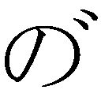っと出現する。
「な、何だ？」
あっと思った時はもう遅い。たちまち前後左右にっ、っ、っと石壁がそそり立ち、続いて頭上にも分厚い石蓋が覆いかぶさる。たちまちバト・ロビスは一筋の隙間もない石の函の中に閉じこめられてしまった。
「ああっ、何という事でしょう！」
悲嘆の叫びをあげ、巫女が石函に走り寄る。
「バト様、バト様、早く魔道士様にお詫びして下さい。このままでは息が詰まって死んでしまいます。手遅れにならないうちに、急いで魔道士様のお怒りを解かなくては！」
巫女の悲痛な叫びに、魔道士は思わず眉を寄せた。今さら詫びられてももう遅い。彼の魔力は石壁を造るだけで、消す事はできないのだ。蛮人は自業自得だが、あの娘には可哀そうな事をしたな、と彼は呟いた。
と、函の中から声が轟く。詫びや後悔ではない。力のこもった怒声だ。
「さがっておれと言ったろう！ そこに居ると、要らぬ負傷をするぞ！」
「は、はいっ」
慌ててリオネルが後ろへとびのくと同時に、ぐわきーん、と凄まじい破壊音があがる。石壁の一面に竜裂が入るのを見て、魔道士は思わず我が目を疑った。
「う、噓だろ......只の石じゃないんだぞ......」
魔道で造られた石壁を、常人が力まかせに叩き壊せるわけがない。しかし、わけがあろうとなかろうと、現に石壁は砕かれ崩れてゆく。何て非常識な蛮人なんだ、と魔道士は心底戦慄した。
「どおりゃあっ！」
ひときわ強烈な気合が轟き、ばこーんと石壁がぶち抜ける。そして圧倒的な威圧感とともに、巨漢がのそりと姿を見せた。魔道士はもちろん、巫女や獣人たちも息を吞むばかりで声も出せない。
「なかなか小癩な真似をするな、魔道士よ」
石の細片を払いながら、バト・ロビスは低く呟いた。
「ならばこちらも尋常に立合おう。行くぞ」
むしろ静かな口調で言い放つと、バト・ロビスはゆっくりと窓口の方へ戻りはじめる。その姿を正面に見ながら、魔道士はどうする事もできない。もう一度石壁を出そうにも、今の状態では魔力が不足だ。呪文を唱えたところで、石だか紙だかわからないような代物しか造れない。かと言って、魔力抜きで喧嘩できるよーな相手ではなし、逃げ出そうにももはや腰がぬけている。
「厄日だ......今日は厄日だったんだ......」
魔道士は思わず呟いた。朝っぱらには極道娘に短剣を突きつけられ、午後には蛮人が斧剣構えて迫ってくる。これが厄日でなくて何だろう。
「......今日は休めば良かったんだ。いや、せめて早退するべきだった。俺の判断が甘かった......」
「何をぶつぶつ言っておる」
後悔するぐらいなら魔術など仕掛けるな、と内心思いながら、巨漢は斧剣を振りかぶった。窓口越しに魔道士に一撃を叩きつけようとしたその瞬間、いきなり半透明の何かが鼻先にふわっと出現する。
「むっ！」
半ば反射的に、戦士は斧剣で亡霊をなぎ払った。同時に魔道士がどて～んとひっくり返る。自分が斬られたと錯覚して目を回したらしい。そして間髪を入れず、十数体の亡霊がひゅんひゅんと巨漢に突っ込んでくる。
「何奴っ！ 姿を見せんかっ！」
さすがに二、三歩窓口から後退しながら、バト・ロビスは喚いた。亡霊には実体がないからまとわりつかれても実害はないが、しかし、やはり目いっぱいうっとおしい。と、今度は亡霊に混じって、先刻砕いた石壁の細片がぱらぱらと飛んでくる。騒霊のしわざだ。
「えーい、つまらん真似をしおって！ こんなのに付きあってられるかっ！」
顔めがけて飛んでくる石を太い腕で防ぎながら、巨漢は腹立たしげに喚いた。そしてくるりと窓口に背を向けると、まとわりつく亡霊を完全に無視し、騒霊が降らせる石もものともせず、再び城門の前に進む。
「こんなちゃちな妨害で引き退がる俺ではないぞ。このまま門をぶち破り、都市に押し入ってやる」
「......まったく困った蛮人ね」
溜息まじりの女性の声に、巨漢はゆっくりと振りかえった。窓口の手前に、淡紅の髪の女魔道士が立っている。
「貴様が亡霊使いか」
「もう一格上よ。私は死霊術師ファラ・ミルドレッド。あなたのような乱暴者を都市に入れないようにするのが仕事」
そう言って、ファラは厳しい表情で無謀戦士を見すえた。むろん、バト・ロビスも正面から彼女をにらみ返す。
「阻めるものなら、阻んでみろっ！」
「では遠慮なく」
そう言って、彼女は素早く呪文を唱えた。するとそれに応じ、地面のあちこちがもこもこと盛りあがる。ばらばらっと土塊が落ちて地から出たものが姿を見せた瞬間、今まで息を吞んで黙っていた巫女が悲鳴のような声をあげた。
「生屍人ッ！」
「......気色の悪いものを出しおって......」
呟いて、巨漢は自分をとり囲む生屍人たちを見回した。半分以上肉が腐れ落ちた屍体がぎこちなく動きながら迫ってくる光景は、いくら無謀戦士でも気色の悪いものらしい。おまけに相変わらず亡霊はとびまわり、騒霊は砂利や土塊をとばし、地上なんだか冥界なんだか見当がつかないよーな状況になっている。
「でやあっ！」
一体の生屍人がゆっくりと把みかかるのを、気合のこもった斧剣の一撃がはらいのける。生屍人はまったく身をかわさず、左脇から右肩にかけてずっぱりと分断された。だが、ずり落ちかかった上体を右腕がつかんで引っぱりあげると、生屍人は何事もなかったかのように、再び戦士に把みかかろうとする。
「ええい、化物めっ！」
罵りながら、巨漢は右に左に斧剣をひるがえす。そのたびに腐った肉と骨が斬りとばされるが、生屍人たちにはほとんど何の効果もない。頭や腕を失っても、連中はそのまま迫ってくる。それどころか、体から離れた頭や腕を騒霊が振りまわすので、余計始末に悪い。
「ぐうっ！」
ついに生屍人の一人が戦士の腕に爪を立てた。激痛が走り、傷が青黒く変色する。
「生屍人の爪や歯には屍毒があるのよ。早く治療をしないと、あなただって保たないわ」
「う...ううむっ......」
敵に淡々とした口調で忠告され、バト・ロビスは眉をしかめて呻いた。そのとたん、低く飛んできた生屍人の斬り離された頭が、彼の臑にがぶりと嚙みつく。即座に斧剣で叩き潰したものの、またもしっかり屍毒を受けてしまった。
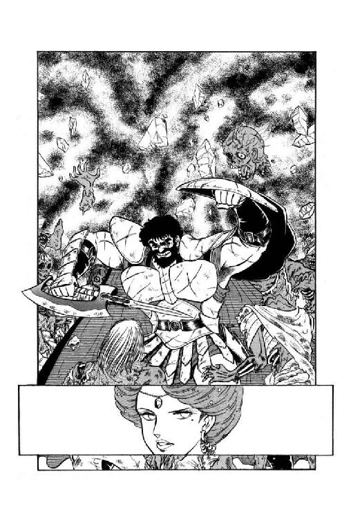
「くそおっ......！」
このままでは確実に俺は斃れる、とバト・ロビスは戦士の本能で悟った。怪獣相手に堂々と立合って倒れるならとにかく、こんな半分腐ったような生屍人に倒されてはそれこそ死んでも死にきれない。
と、彼の耳に牛羚羊の騒ぐ声がかすかに聞こえてきた。カルバドク卿の隊商だ、と巨漢は顔をしかめる。他の誰にも増して、あの甥っ子にこんな醜態を見せるわけにはいかない。
「やむを得んかっ......」
苦いものを吐き捨てるように呟くと、バト・ロビスは目の前の生屍人を力いっぱい突きとばした。そしてマントをひるがえし、だだだだだっと死者どもの包囲陣を馳けぬける。はっと我にかえったように、巫女以下の獣人たちが彼に続いて城門前から逃げだしたが、女魔道士はあえて追い討ちはかけなかった。
「これで懲りてくれればいいけど」
呟いて、ファラは呪文を唱える。地中から何かに引かれるように、生屍人たちがずぶりともぐって姿を消した。それに続いて亡霊も消え、騒霊も噓のようにおさまる。あっという間に魔道都市の城門前は、元の静けさをとり戻した。
と、そこへ坂を登って、数台の荷車が現われた。先頭の一台が窓口のそばに止まり、三、四人の男女が降りてくる。
ファラは窓口の中をのぞいたが、担当者は気絶したままだ。彼女はちょっと肩をすくめ、荷車から降りてきた連中を迎える。
「やあ、ミルドレッド評議員殿、お久し振りです。お変わりないようで、何よりですね」
快活な笑みをうかべ、ミル・ユードが彼女に挨拶した。その後ろに御者台から降りたギルスが従う。一族の連中が大将について港町を出た時に、彼は後に残り、それ以降ずっと若旦那の荷車の御者をつとめている。それから二、三歩おくれて、レイピアとギルバートが続く。坂道にかかってから魔道士は荷車の揺れに酔ってしまい、多少顔色が蒼い。
「ユードさんこそお元気そうね。何でも、南の方では戦さが起こっているそうだけど、その後どうなっているのかしら」
ギルスの渡した書類をぱらぱらと見ながら、ファラは何げなさそうに訊ねた。青年も彼女と同じくらい何くわぬ顔で答える。
「さあ、僕は商人ですから。ただ、一応情勢は落ちついたようで、何とか隊商が出せましたけどね」
「それは何よりだわ。最近隊商が来ないので不足し始めている品物もあるみたいだから」
そう言いながら、彼女はチェックの済んだ書類を返した。それから、後方の魔道士に目を向ける。
「お帰りなさい、ギルバート・エゼン。エリオンはどうだった？」
「はあ......それがその、いや、どーも」
冴えない表情でギルバートは口ごもる。何しろこの女魔道士は、彼が生まれた頃から魔道都市評議会の一員をつとめている超大物だ。テオドラとの一件もすべて知られているから、うかつに誤魔化すことすらできやしない。
「ま、とにかくいろいろ有りまして、ま、後でゆっくりと、そのうち、そーですね、いやあ、どもども」
「何わけのわかんない事口走ってるのよ。さっさと市民証をミルドレッド様に渡しなさい。あんたは私たちとは手続きが違うんだから」
女戦士が脇からじれったそうに口を入れる。その様子を見て、ファラは内心にこっと笑ってうなずいた。
７
「まあ、魔道都市の住民ってのは、だいたいみんな保守的なのよね。工人さんは親代々同じ相手に同じ品物渡して生活してるし、うちら魔道士だって大半は師匠の研究を代々引き継いでるだけだしね」
ポーラン薬種店の若い女店主は、そう言ってルナににこりと笑ってみせた。
「だから、不特定の相手に店開いて、来るか来ないかわかんない客待ってるなんてのは、あたしを含めてよっぽどの変人なのよね。その店に来る客も、だいたい変人だし。だーから自然と道楽っぽくなっちゃうわけよ。わかるでしょ？」
「ええ。わかります」
だけど良く喋る女性だなー、と思いながらルナは素直にうなずいた。薬種店に入った彼女は、魔道都市には趣味のお店しかないんですか、と思わず訊ねてしまったのである。すると暇そーにしていた女店主が得たりとばかり説明を始めてくれちゃったわけだ。
「だからまあ、店をやってる人ってのは工人にしろ魔道士にしろ他に生活立ててる本業がある事が多いのよね。例えばあたしは雨を呼ぶ魔力があるし、武具屋のチョーサーは雨を止める魔力があるわけ。うちらがそろうと、結構実用的だったりするのよね、これが。まあ、もっともあたしの兄貴みたいに、ほとんど役に立たない魔力しかないくせに商売してる道楽者もいるにはいるけどさ」
「はあ......」
こっちから質問しちゃった以上仕方ないけど、こりゃあ墓穴を掘っちゃったかなあ、とルナは内心ちょっと溜息をついた。ロコとリルの二人はとっくに話に飽きたらしく、けっこう広い店内をうろうろして薬瓶のラベルなどをながめている。
「まともなもも、案外あるのね」
ラベルと説明書きを見ながら、少女が意外そうな声をだす。
「解毒薬、体力回復薬、催眠薬......買っとけば役に立つでないの？」
「でも、実用的な薬ならファラさんの所に有るみたいだし。それより、肝心の掛け戻し錠はどこにあるんだろう？」
少年は眉を寄せて、薬瓶の並ぶ棚を見回す。訊ねようにも、女店主は相変わらずお喋りのまっ最中だ。
「まあね、どんな魔力を持つかってのは結局素質の問題だけだからね。おんなじ師匠について召喚の魔道を身につけたって、飛行竜を呼ぶ奴もいれば、兄貴みたいに海栗しか呼べないのもいるわけよ。海栗呼ぶ魔力に磨きをかけたって、こりゃ空しいわよねえ」
「そりゃそうですね」
飛行竜が群雲の如く出てくれば格好いいけど、大海栗が怒濤の如く出てきても邪魔になるだけじゃないかしら、とルナは内心苦笑した。だけどそういえば、北王国で遭遇した飛行竜を呼び出す魔道士はあれからどうなったのかな。もっとも、あたしは王女から話を聞いたのと、呼び出された飛行竜と闘っただけで、じかに魔道士と顔を合わせたわけじゃないんだけど。
ルナが自分のもの想いにふけっている間にも、女店主はどんどん話を進めている。
「でさ、兄貴は魔道の修業をあきらめて商売をはじめたわけよ。ところがこれがやくざな仕事でね、本人はえらそーに情報中継業とかゆーとるけど、要するに噂話だの内輪話を聞きたがってる奴に耳うちするわけよね。確かに兄貴はへんなふーに早耳だし、交友関係も妙に広いから、けっこう耳寄りな話も聞き込んで来るんだけどさ。やっぱり、まっとーじゃないわよねえ。ねえ？」
「は、はあ......」
いきなり同意を求められ、ルナははっともの想いから覚めた。と、いつの間にか少年が傍に戻ってきている。
「あのう、ルナ様。話し込まれるのは別にいいんですけど、とにかく買い物を済ませた方が良くありませんか？ もうずいぶん日も傾いてきたし......」
女店主の方をちらっと見ながら、猫少年はためらいがちに言った。と、ルナより先に、女店主の方が大きな身振りをまじえて応じる。
「あら、ごめーん。そうよね、お客さんなんだもの、薬を買いに来たのよね。それをまああたしったら話に夢中になっちゃって。それであなた、どんな薬がほしいの？」
「あの、掛け戻し錠なんですけど」
そう言って、ルナは胸元から薬入れを取り出し、開いて見せた。女店主は意外にまじめな表情で黄色い錠剤を見ていたが、やがて濃い眉を軽く寄せて首をひねる。
「これは、輸出用の薬じゃないかな。ここんとこ持ち込み調合の口がないから、在庫があるかしら......ちょっと待って」
ぶつぶつ呟きながら、女店主は長い黒髪をひるがえし店の奥へひっこんだ。ルナとロコは思わず顔を見合わせる。
「......予想以上に貴重な薬だったみたいですね、これ」
「貴重っていうより、売れない薬みたいだけどね。とにかく手に入れにくいって事には変わりはないわ」
もし補充が効かなかったら、こりゃえらい事だよ、とルナは内心呟いた。テオドラにもらった錠剤の残りはたったの二つ。魔獣変身を三回やらかしたら、もう人間態には戻れなくなってしまう。今さら言ってもはじまらないけど、こんな事ならもっと大事に使えばよかった、とルナは思わず溜息をついた。
と、女店主が奥から出て来る。その済まなそうな表情を見ただけで、ルナは彼女の次のセリフが予想できた。
「ごめんなさい。今、在庫をきらしちゃってるみたいだわ。この薬、都市外から材料持ってこなくちゃならないんで、材料自分持ちで注文する人がいないと製造しないのよね。だけど、あなた材料持ってきたわけじゃないみたいだし......砂鰐の虫歯なんて、持ってないでしょう？ やっぱり」
「残念ですけどね」
そう言って、ルナは軽く肩をすくめて苦笑をうかべる。
「まあ、ないものねだりしても仕方ないし、またそのうち来ます。それじゃ」
姫君ならではのあきらめの良さを見せ、ルナは女店主に背を向けかかった。と、その時店の扉が開いて、長身の女性が入ってくる。黒に近い濃茶の髪を無雑作に束ね、甲胄こそ着けていないが戦闘防具をしっかりまとった姿は、どこから見ても女戦士だ。
一瞬、女戦士の琥珀色の瞳と、ルナの紺色の瞳がお互いの力量を計るように見つめあう。そして二人とも、即座に同じ結論を下した。
「この女性......只者じゃないな」
ほとんど意識せずに、ルナは軽く腰を沈めて身構える。女戦士も腰に吊った細鞭にゆっくりと手を伸ばす。そのとたん、女店主が目いっぱいあっけらかんとした声をはりあげた。
「あら、レイピアさん、お久しぶりじゃなーい！ 何か、兄貴の話だと、ついこの間も都市に来てたんだって？ 顔も出さないなんて、あんまりじゃなーいっ！」
「御免なさいね。この間は本当に急ぎの用だったの。隊商も連れてなかったし」
緊張を解き、女戦士は軽く笑った。ルナも小さく吐息をついて、店から出かかる。と、その背に女店主が明るい声をかけた。
「あ、お客さん、ちょっと待って。うまくすると、こっちの人が掛け戻し錠売ってくれっかも知れないわよっ！」
「えっ!?」
ルナは驚いて振りかえった。レイピアもあっけにとられた表情で、女店主とルナを見比べている。
「あの、売ってくれるかも知れないって、こちらの方も薬屋さんなんですか？」
魔道士には見えないけどなー、とレイピアを見つめるルナに、女店主は笑いながら説明した。
「いや、薬屋じゃないけどね。この人、南方から来た貿易商なのよ。あたしの所にいろんな材料持ち込んで、魔法薬に調合したものを引きとってくわけ。いつもだと掛け戻し錠の類を必ず注文してくんだけど、今日はどうなの？」
「それは......作ってもらうつもりで来たんだけど」
どーも事情がわからんという表情で、レイピアは多少歯切れ悪く応じる。が、女店主は少しもかまわず、笑顔でうなずく。
「そーでしょう、そうでしょう。それならさ、こっちの娘さんに少しまわしてあげてよ。何でも生き死ににかかわるよーな事情らしいからさあ」
あたしそんな事言ったかしら、とルナは一瞬戸惑って女店主の顔を見た。と、彼女の焦茶の瞳が大丈夫、まかせて、と言わんばかりのウインクを返す。確かにここは、このお姐さんに任せといた方が良さそうだ、とルナは黙ってこくんとうなずいた。
「それは別にかまわないとは思うけど......でも私の一存というわけにはいかないな。今回の隊商は若旦那さまが率いてるのよ」
「えっ、ミル・ユード様がおみえになってるの!? きゃあ きゃあ それ、早く言ってよお」
きゃあ それ、早く言ってよお」
いきなりミーハーそのものの奇声を発し、女店主はぴょんぴょんと跳ねはじめる。ルナはあっけにとられたが、レイピアは軽く苦笑をうかべただけだ。
「それじゃあ、みんなで若旦那のとこ行って、御了承をいただきましょうよ、ね。ふーっふっふっふ、久々に御尊顔がおがめるぞお」
「これだから、あなたには若旦那が来てるの内緒にしたかったのよ。まあ、明日になればばれちゃうでしょうけど」
苦笑まじりの女戦士の呟きもどこ吹く風、女店主は鼻歌まじりにうきうきと台の上を片づけはじめる。と、また店の扉が開いて、猫少年がひょいと顔を見せた。
「どうしたんです、ルナ様？ リルの奴が、またお喋り始まったんじゃないかなんて言ってますけど」
「ううん、違うの。掛け戻し錠が手に入る可能性が出てきたのよ。もう少し待ってて」
ルナの説明に、ロコはにこっと笑って姿を消した。と、レイピアが不審気に訊ねる。
「今の男の子、あなたの連れ？」
「はい、そうですけど」
「......尻尾があったみたいに見えたんだけどな。あの少年」
鋭い目付きになって、女戦士は呟いた。あんまり妙な奴を我が主君のところに連れていくわけにはいかない。
「失礼とは思うけど、あの少年、人間なの？」
「いえ、彼はあたしの使い魔です」
少し警戒するような表情になって、ルナは答えた。レイピアの目がすっと細くなる。
「ふうん......じゃあ、あなた、魔道士なの？ 紋章つけてないみたいだけど」
うっ、この女性鋭いっ、とルナは内心敬意と警戒心をこめて呟いた。彼女は現在、短衣にマントという魔道士見習いみたいな姿をしているが、魔道士なら必ず付いている紋章入りのマント止めが欠けている。レイピアは目敏くそれを指摘したのだ。これは、よっぽど用心しないとマントの下の尻尾に気付かれるぞ、とルナは表情をひきしめる。
「いえ、あたしは魔道士じゃありません。使い魔は友人から贈られたものです。それがどうかしました？」
やや硬い声で彼女が訊ねかえしたとたん、いきなり陽気な答えが返ってきた。レイピアからではない。店の片付けを終えたレディ・ポーランがにやにや笑いながら言ったのである。
「そりゃーね、レイピアは大事な御主君に近づく女あらば、雌猫一匹見のがさないもんねー。あたしだって、もろにミーハーしてっからいいけど、下手な気起こしたら叩っ殺されかねないよ」
「むざむざ叩っ殺されるあんたでもないでしょーに」
苦笑まじりに女戦士は言い返した。が、すぐ真顔に戻って、ルナに目を向ける。頭半分ほど上からにらみ降ろされ、ルナは半ば無意識に上目づかいになった。彼女も女性にしては長身の方だが、レイピアにはかなわない。
「別に女性に限ったことじゃないけど、あんまり胡乱な者を若旦那に近づける気はないわ。あなた、魔道都市の人とは見えないけど、どちらの出身？」
「出身はリムズベル公国です」
持ち前の負けん気がむらむらと頭をもたげ、ルナは意識して顔をあげると、昂然と言い放った。
「御存知かしら。エリオンの南にある小さな国ですけど。あたし、一応そこの公女ですから、胡乱な者ってことはないと思うけどな」
「えっ!?」
その瞬間、女戦士の切れ長の目が、これ以上はないほどまん丸く見開かれる。
「す、すると、あんたが、ルナ・ド・リムズベル!?」
「ええ、そうです」
思った以上に激烈な反応に内心驚きながら、ルナはこくりとうなずいた。もしかしたらこの女性、猛将としてのあたしの名前をどっかで聞いて知ってるのかな？
しかし、彼女が想像したよりもはるかに詳しく、レイピアは彼女のことを知っている。そう考えれば、女戦士はよく自分の驚愕をおさえた、とも言えるだろう。
「さあ、行こ行こ。どーせ宿は貿易商クラブでしょ？」
閉店の札を抱え、レディ・ポーランがはしゃいだ声をかける。レイピアは、はっと我にかえって、ややぎこちなくうなずいた。
８
「ちょっとここで待っていて」
魔道都市唯一の外来者用ホテル『貿易商クラブ』の一階ロビーで、レイピアはそう言って同行者たちを止めた。そして返事を待たず、小走りに正面階段をあがる。
「我が君、レイピアです」
「やあ、御苦労さん。薬屋のお姐さんとは話がついたかい？」
ミル・ユードは笑顔で乳兄妹を迎えたが、彼女の表情に気付くと微かに眉を寄せた。
「何かあったのか？」
「ルナ・ド・リムズベルが階下のロビーに来てます」
女戦士が、誰かをはばかるように声を低める。反対に、青年の声は半音程あがった。
「な、何だって!? 何しに来たんだ!?」
「薬種店で偶然でくわしたんです。彼女は掛け戻し錠を手に入れたがってるんですが、レデイ・ポーランの店には在庫がないんですよ。それで、こちらが持ち込み調合した品を売ってほしいと頼みに来たんです」
「......商売の話か。でも、それだけかな？」
濃灰色の目を細め、若者は考え深げに呟く。こういう表情をすると女魔道士がきゃあきゃあ言うのもうなずける、とレイピアはふと思った。しかし、今はそれどころではない。
「とにかく会おう。こいつは機会だ」
素早く決断して、青年は立ちあがった。
「ルナ公女は単身かい？」
「いえ、使い魔の少年と、少女を連れています。それからレディ・ポーランも来てますから」
「彼女もか」
ミル・ユードは軽く苦笑する。
「あのお姐さんが一緒なら、どちらにしろ突っ込んだ話にはならないね。よし、行こう」
一方、ロビーではルナが苦笑をうかべていた。うかつにも、彼女は女魔道士にミル・ユードという貿易商がどういう男性か質問してしまったのである。
「うーん、彼の魅力はやっぱりあの、さりげない貴公子ぶりねっ。こう、表面はあくまで貿易商として気さくにふるまうんだけど、物腰とかちょっとした動作に高貴さが出る。それが何ともきらっと光るよーで、よいのよねー。ぎんぎらぎんの大美形も悪くないけど、あーゆー市井に混じった高貴なお方ってーの趣味だわ──」
「はあ......」
訊いたあたしがどじだった、とルナは完全に舞いあがってる女魔道士を横目で見ながら溜息をついた。しかし、彼女の趣味はとにかく、ルナには高貴な血筋に魅かれる感覚はない。これは自分で見定めるしかなさそうね、とリムズベルの公女は正面階段に目を向けた。
ちょうどその時、女戦士を後ろに従えて長身の若者が階段を降りてくる。栗色の髪に穏やかな濃灰色の目をした、ごく温和そうな男性というのがルナの受けた印象だった。と、少女が彼女をちょんちょんと突っついて囁く。
「ルナ、気合入れてかかりなよ。この男、うまく陥とせばすっごい上客になるわ」
「別にあたしは彼を陥とす気はないわよ」
ルナは苦笑まじりに囁きかえした。だが、少女は真剣な顔で、小さく首を横に振る。と、その時、ミル・ユードが明るい、落ち着きのある声をかけた。
「やあ、レディ・ポーラン、お元気そうで何よりです。で、こちらがリムズベル公女ルナ殿下ですね。初めまして」
青年はそう言うと、ルナの正面に歩み寄りにこっと笑った。
「僕が貿易商のミル・ユードです。一応カルバドク卿という称号もありますが、ミル、と呼んでいただいて結構です、殿下」
「あ、あたしも、ルナでいいです」
この男性笑うと少年っぽくて可愛い、などとぼーっと思っていたルナは、ちょっと慌てて返答した。
「それから、この少年があたしの使い魔のロコです。有翼猫の姿も持っています。そして、この少女はリルと言います」
「どうぞよろしく、ロコ君、リルさん」
青年は親しみのある笑顔を見せ、ロコとリルは同時にぺこりとお辞儀をする。ロコはとにかくリルが妙に大人しいな、とルナはちらっと思ったが、静かにしていてくれるに越したことはない。
「ところで、ルナさんは掛け戻し錠を御入用だそうですが、どのくらいの量を買われる予定です？」
青年がルナの方へ視線を戻し、丁重だが事務的な口調で訊ねた。彼女に対してはいろいろと興味はあるが、商売は商売である。もし荷車に一台以上の掛け戻し錠を彼女が要求してきたら、ちょっと問題だなと彼は思っていた。公女が錠剤を何に使う気かはとにかくとして、他のお客との兼ね合いもある。だが、彼の思惑を完全にはずして、ルナはあっさりこんと答えた。
「そうですね、十錠か十二錠ぐらい」
「はぁ？」
青年がもろに意外そうな表情になったのを見て、ルナの声が小さくなる。
「あの、だめなら五錠くらいでも......」
「......その、失礼ですがルナさん、十錠ほどの掛け戻し錠をいったい何に使うんです？」
「......あたしが服用するんです」
ルナの声がますます小さくなる。ミル・ユードはい一瞬あっけにとられたが、すぐに申し訳なさそうな表情になった。
「こ、これは失礼っ......貿易商なんかやってると、つい取り引きを荷車単位で考えてしまう癖がついてしまって......」
「やっぱりご迷惑ですよね」
呟いて、公女が上目づかいにミル・ユードを見やった。青年は急いで、大きく、きっぱりと頭を振る。
「とんでもないっ！ 調合ができ次第、すぐに御用立てしますよ。レディ・ポーラン、どのぐらいで調合やっていただけますか？」
「そーですね、他ならぬミル・ユード様の頼みとあらば、五日で仕上げてみせますわ」
そう言って、女魔道士はにやっと笑った。
「なーんちって、今の時期は暇だから、誰の注文でも五日で仕上げちゃうんだけどね」
「......まあいいや、とにかくルナさん、五日後には間違いなく掛け戻し錠を用意しますから、安心してお待ち下さい」
彼にしてはやけに力の入った口調で、ミル・ユードはルナに請け合ってみせる。と、その時ふと思いついて、彼は自分でも意外なほどすらすらっと言葉を続けた。
「ところで、よろしかったら今夜の食事をつきあっていただけませんか。商談成立のお祝いに」
「え、あ、あのっ」
ルナが我にもなく一瞬口ごもる。と、そのとたん女魔道士がすっとんきょーな声をあげた。
「わ──、いーんだ、いーんだ、ミル・ユード様からお呼ばれだって。いーな、いーな、あたしもあやかりたいわー、わー」
「あなたとは何度も御食事をともにしたはずですけどね、レディ・ポーラン？」
青年が苦笑まじりに訊ねると、女魔道士はすまして答える。
「わたくし、昔の事は忘れるたちですの」
「わかりました。それでは、あなたとは明晩ご一緒しましょう」
「そーこなくちゃ きゃあ きゃあ」
もーけ、もーけとはしゃぎながら女魔道士がぴょんぴょん跳ねる。青年は苦笑したままルナに視線を戻した。
「ところで御返事はいかがです、殿下？」
「はい、喜んで御一緒させていただきますわ」
やっと落ち着きをとり戻し、ルナはにっこりと笑ってうなずく。と、少女が背後からつんつんと突っついて囁きかける。
「ルナ、着換え！ 着換えしなくちゃ！」
「そ、そお？」
彼女はちょっと戸惑って囁きかえした。確かに短衣にマントという姿は正装とは言えないが、別に着換えるような服もないし......。
「この、ぼけ！」
そのとたん、リルが鋭く囁く。
「あンた、彼の前でマント脱ぐ気っ？」
「そ、そうか......」
いくらなんでも食卓に着いたらマントは脱がなくてはならないが、今の姿でそれをやったら尻尾がまる見えになる。ルナは慌てて、不審気な青年に一礼した。
「それでは、あの、服を換えてきますから、少しお待ちいただけますか？」
「ああ、そうですね。まだ食事には少し早いようですし」
そういうと、ミル・ユードはロビーの脇に置いてある魔法時計を見やった。
「それでは日没の鐘にあわせてお迎えに参上します。宿はどちらです？」
「えーと、ファラ・ミルドレッドさんのお宅に泊めていただいてるんですけど」
おわかりになりますか、とルナが言うより早く、青年は感心したような表情でうなずく。
「ミルドレッド評議員のお宅ですか。さすがは公女殿下ですね。わかりました。それではまたのちほど」
ミル・ユードは優雅に一礼し、ルナたちも礼をかえしてロビーからひきあげる。と、今までずっと黙っていた女戦士が、多少険しい表情で青年に囁きかけた。
「本気なのですか、我が君？ 公女とは言ってもあの娘の正体は......」
「大巨獣だろ。重々わかってるよ、それは」
軽く笑いながら、青年は呟く。
「だからこそさ。あんなのを敵に回すわけにはいかない以上、せいぜい親睦を深めるしかないじゃないか。味方にできれば、これ以上心強い存在はないよ」
「それはそうですけど......」
今いち納得できない風情で、レイピアは眉を寄せる。と、ふと気付いてミル・ユードは彼女に訊ねた。
「ところで、魔道士はどうした？」
「導師のところへ挨拶に行って、それから実家に顔を出すんですって。一緒に来ないかって誘われたんですけど、私はそれほど暇じゃないし」
そう言って女戦士は微妙な表情を見せた。
９
「スカートの長い服ね。ちょっと待って」
ルナの頼みにうなずくと、女魔道士はぱちんと指を鳴らした。たちまち衣装棚の扉がぱたんと開き、数着の服がすーいと宙を飛んでくる。
「あなた身長は私と同じくらいだけど、肩幅あるみたいだから、あんまりきっちりしたのは駄目よね。それに何てったって、その尻尾が納まらなきゃ話にならないんだから......これなんかどうかしら？」
飛んできた服のひとつが、ぱさっとルナにかぶさった。手に取ってみると、ゆったりとした長衣風の服である。しかし、彼女はこの服にひとつ難点があるのに気がついた。
「......ファラさん、これ、上から下まで前が開けっ放しみたいですけど？」
「そうよ。それ東方風だから、腰のところを紐でとめるの。とめ方を調整すれば、たいていの人には合うはずよ」
ファラは微笑しながら言ったが、ルナは笑うどころではない。
「だけど、これじゃ胸から何から丸見えじゃないですか？」
「大丈夫よ。肝心な所はぎりぎりで隠れるはずだから」
「あ、あのーっ！」
絶句しかかったルナを、女魔道士はちょっと不思議そうに見やった。
「あら？ 若い殿方に食事に誘われたのでしょう？ なら、向こうの期待に応えるような装いをしなくちゃだめじゃない」
「だって、そんな、彼とは今日はじめて会ったばっかりなのに......」
「だからこそ、印象を強めるような装いをしたらいいと思うんだけどな。私の感覚が古いのかしら？」
真顔で首をかしげるファラに、ルナは内心頭を抱えた。この女性にまともな服装感覚を期待する方に無理があったらしい。
「そうねえ......じゃ、これなんてどう？ スカートが広いから尻尾は隠れるし、上半身はスカート吊りだけだから体格関係ないし」
「け、結構ですっ！」
ルナの返事に、ファラは軽く肩をすくめた。
「それじゃ困ったわね。私の持ってる服って脚をきれいに見せるのが多いから、尻尾を隠せるのはこれぐらいしかないわ」
「そんなあ......」
思わず情ない声を出してしまった時、猫少年がためらいがちに口を入れる。
「あの、ルナ様、露出度が高いのが問題なのでしたら、短衣の上から重ね着されたらいかがでしょう？ そうすれば尻尾から何から全部隠せると思いますけど」
「そっか！ ロコ、感謝！」
考えてみりゃ簡単なことだったね、とルナは内心苦笑した。が、ファラはまだけげんそうな表情をしている。
「それじゃせっかくのきれいな肌が、ほとんど見せられないんじゃない？ 勿体なくないかしら、それって？」
美しいものは見せるべきだと思うけど、とかぶつぶつ言ってる女魔道士に丁重に礼をして、ルナは短衣の上から借りものの服を着こんだ。まずスカートの方を試してみたが、重ね着するには腰がきつい。やむなく、東方風の服を羽織った彼女は鏡を見て溜息をついた。
「ね、これちょっと派手じゃない？」
「そんな事言ったって、もう他にありませんよ。大丈夫、けっこう似合ってます！」
猫少年は自分の服装感覚を完全に黙殺して断言した。何しろその服は東方風の意匠や文字らしきものが恥も外聞もなく、でん、と染めぬかれ、似合う似合わない以前に正気を疑いたくなるよーな代物なのである。しかし、他に尻尾を隠せる服がないんだから、と猫少年は内心歯をくいしばって呟いた。
更にルナが何か言いかかった時、日没の鐘が魔道都市の空にくあーんと響きわたる。そしてその余韻も消えないうちに、玄関の方から獣が絞め殺されるよーな叫びがあがった。ルナたちはぎょっとして振りかえったが、女魔道士は平然と立ちあがる。どうやら今の叫びは呼び鈴だったらしい。
「公女ルナ、カルバドク卿がみえたわよ」
「はーい。今、参ります」
あきらめた表情で、ルナはずりずりと玄関へ出た。ロコとリルも彼女の後に続く。扉を開けたとたん、青年の笑顔がひきつったのに彼女は否応もなく気がついた。
「や、やあ、殿下、ずいぶんとまた独創的な服装ですね」
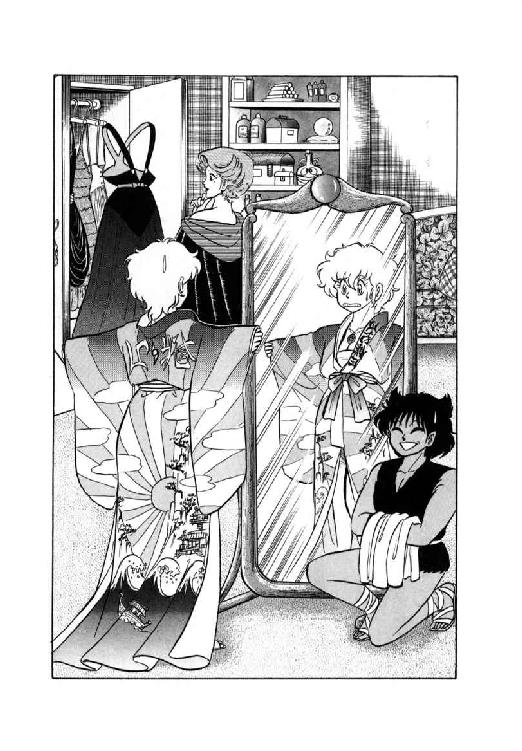
「ファラさんが貸してくれたんです」
ルナは思わず疲れたような声をだした。
「東方風だそうですわ。どう思われます？」
「そうですね......いかにもミルドレッド評議員らしい好みです、と言っておきましょう」
そう言ってミル・ユードはくくっと押さえたような笑い声をたてる。が、その笑顔が今度は全然ひきつっていない。そして、青年はすっとルナに身を寄せると、いたずらっぽい小声で囁いた。
「居候にはいろいろ苦労がありますよね。僕にも経験があります」
「はあ......」
この男性、ファラさんがあたしにこのとんでもねー服を押しつけたと思ってるんだ、とルナはやっと気付いた。それは誤解だけど、でも、まあ、いいか、と彼女は内心苦笑まじりに呟く。ファラさんには悪いけど、そーゆー事にしておこう。
「それじゃ、行きましょうか」
そう言って、青年はごく自然に相手の手をとった。同時に、これまたごく自然に女戦士が二人の背後に立つ。この女性今までどこにいたのよ、とルナは多少の戦慄をまじえて思った。
「ルナさん、使い魔というのは主人の行く所へ必ず同行していくものなんですか？」
レイピアの後から少年と少女がついてくるのを振りかえり、青年が不思議そうに訊ねる。あなたに女戦士が付いているよーなものです、と言いそうになって、ルナは慌てて答を変えた。
「いえ、そうとは限らないんですけど、彼らにはあたしが失敗した時に埋め合わせしてもらわなくちゃならないですから」
「はあ、なるほど」
ルナはかなり本音で言ったのだが、青年は冗談ととったらしく、軽い笑いをうかべる。
「それじゃ、僕にレイピアが付いてるようなものですね」
「はあ......」
どーゆー表情をしていいかわからず、彼女はとりあえず軽く笑うことにした。
「ところで、御食事を御一緒するという事ですけれど、場所はどこで？」
「貿易商クラブのレストランですよ」
青年はあっさりそう言った。
「いや、まじめな話、僕ら外から来た人間が安心して食事できる場所は、魔道都市じゅうであそこだけですから。何しろ他の店はほぼ例外なしに趣味の料理店だから、何を食べさせられるかわかったもんじゃない」
「そうですね......」
ルナは実感をこめてうなずく。あの武具店ののりで料理店をやられた日にゃ、冗談抜きで生命が危ない。
やがて一行は『貿易商クラブ』に着いた。レストランにはすでに食卓がセットされていて、ミル・ユードがすっと前に出ると、ルナのために椅子を引く。一礼して座ろうとしたとたん、彼女はとんでもない事に気付いた。
「し...尻尾がつっかかるっ......」
ルナの脳裏に、ミルドレッド邸の手洗いでの情況がまざまざとよみがえる。尻尾が邪魔になる事ではこの椅子も便座と変わりがないが、まさかここで尻尾をかつぎあげるわけにもいかない。まさに進退きわまって、彼女は椅子を見詰めたまま立ちつくす。
と、椅子を引いた姿勢のまま、青年が不審気に彼女を見やった。あーっ、どうしよう、とルナは蒼白になって彼を見返す。まさかこんな所でこんな窮地に立たされようとは、まったく思ってもいなかった。
すると、ミル・ユードが不意に軽くうなずく。そして同情のこもった視線でルナを見やると、力強く彼女の手を取った。そして、あっけにとられているルナに、優しく囁く。
「踊りましょう、ルナさん」
「は、はい......」
何だか良くわからないが、この窮地から脱けられるなら何であろうとかまわない。ルナはミル・ユードといっしょにダンスフロアに出た。それとほぼ同時に、レストラン付属の楽団が舞曲を演奏しはじめる。
ルナには一応踊りの心得はあったが、何しろ東方風衣装が脚にからみつくので、だいぶじたばたになってしまう。それを巧みに援護しながら、青年が小声で彼女に囁いた。
「大丈夫ですか、ルナさん。無理はしないで下さいよ」
「は、はあ......」
この男性、また何か誤解してるんじゃないかな、と思いながらルナはかろうじてステップを踏んだ。しかし、何をどう誤解しているのか良くわからない。と、相手がまた、ごく小さな声で囁いた。
「座るのがきついんじゃ、日常生活が苦しいでしょう。言いにくいのはわかりますが、レディ・ポーランに相談してごらんなさい。けっこういい薬がありますから」
「はい、どうも......お心遣い感謝します」
何だか良くわからないけど、とにかく彼はあたしの事心配してくれてるらしい。そう思ってルナは軽く頭を下げた。青年はしみじみとした表情でうなずく。
「あれは苦しいんだ......僕は経験ありませんけど、義母上がひどくてね。とにかく早いうちに手当てをしたほうがいいですよ」
実際、痔というのはこじらせるとつらいからなあ、とミル・ユードは内心呟いた。ルナがその呟きを聞かなかったのは、とりあえず二人の感情のためには良いことだったようである。
10
「どうして今頃帰ってきたの？」
急遽、立食形式に切換えられた食事と雑淡を終えてルナたちが帰ってくると、ファラ・ミルドレッドは心底意外そうに訊ねた。
「カルバドク卿と喧嘩でもしたの？」
「いいえ。とても感じのいい方でしたよ」
東方風衣装を脱ぎながら、ルナはあっさりと答える。どうも良くわからんという表情で、女魔道士は首をかしげた。
「それじゃあどうして帰ってきたのよ。私はてっきり朝帰りだろうと思ってたのに」
「......あたし、初対面の男性とそーゆーお付き合いする気はありませんっ！」
彼女に悪気はないと思うけど、あんまり自分の感覚だけで他人の行動を不審がらないでほしいな、とルナはいささか声を尖らせる。挨拶代わりにいっしょに寝るような関係はあたしはしないし、彼だって望まないだろう。もっとも、たとえあたしが望んだって、あの青年が尻尾つきの魔獣変身する娘を抱くとは思えないけど、と彼女は内心やや苦っぽくつけ加えた。
「そうなの......まあ、あなた方は二人とも外来の人だし、それなりに違った習慣もあるんでしょうね」
呟くように言って、女魔道士は軽く肩をすくめる。
「だけどねー、若い二人が食事をともにして、そのまま何もしないで帰ってくるなんて。うーん、なんて勿体ないんでしょ」
またしても宙をにらんでブツブツ言ってるファラにとりあえずお辞儀をして、ルナたちは客用の寝室に引き取った。この部屋には寝台がひとつしかないが、そのひとつがやたらにだだっ広い。多分巨漢戦士が三人ぐらい並んで寝られるんじゃなかろーか、とルナは思った。もっともあんなのが三人もいた日にゃ、それこそ寝るどころではなかろうが。
「はーっ、今日はさすがにしんどかったわあ」
大きく四肢と尻尾を伸ばして、ルナは寝台のまん中にばたーんと倒れ込んだ。両脚を高々とあげた公女らしからぬ姿勢になるが、なに、ロコやリルの前で気取ったところで始まらない。と、その傍に少女がぴょんと跳び乗る。
「ね、ルナ」
「こら、都市に入ったらやらないって言ったでしょーが」
囁きかけたリルを、ルナは苦笑まじりに叱った。ここで絶頂変身しちゃったらえらい事になるし、それに、今夜は何となくそんな気になれない。ところが少女は、意外にも怒ったような口調で言い返した。
「ばか、あたいだってそな気ないわよ。少なくとも死霊術師の家でいちゃつくほど、ぶっとい神経してないわ」
どうだかね、と烏猫の姿に戻ったロコが聞こえないように呟く。だが、彼女の神経の太さはとにかく、その表情と口調の真剣さは只事ではない。
「そういえばファラさんに会ってから、あなた急に大人しくなっちゃったわね。やっぱり、それ、死霊術師が怖いせいなの？」
「正直なとこ、そうね」
ルナの問いに、リルは拍子抜けするほど素直にうなずいた。
「昔、っても二年ぐらい前かな。あたい、南の方の都市で例によって娼婦稼業してただけどさ、あたいのいた婦館に変な野郎があがって来たよね。服装はマントに長衣で別に珍しくもない魔道士姿なだけど、髪はまっ白、頰はげっそりこけて、そのくせ肌は妙につやつやしてやがるだ。若いんだか年くってだかわかんねー奴だったね。今でもあの顔は、はっきり覚えてるよ。別に覚えていたかあないだけどね」
そう言って少女は軽く顔をしかめる。彼女の話にひき込まれ、ルナはもちろん床の上の烏猫もちゃちゃ一つ入れない。聴衆の表情をちらっと見て、リルは話を続けた。
「そな妙ちきりんな奴だったけど、とにかくいきなり館主の婆さんにじゃらりと金貨を出して見せたで、あっさり上客扱いされちまった。まあ、あたいを含めて商売女ってのは金貨に弱いからね。でもって、その男は一等若い娼婦を相手にしたいってこきやがったわけ。つまり、あたいなだな、これが」
「......でしょうね」
ルナが小声であいづちを打つ。二年前といえば、彼女はまだ十二、三歳の子供のはずだ。
「で、あなた、その魔道士の相手したの？」
「それが有難い事に、その日のあたいには常連客が先約してたのよね。ま、あたいは売れっ妓だから、おーむね予約済みだっただけど。とにかく、その魔道士野郎の相手にはあたいより一つ歳上の朋輩が出たの。赤毛で、ちょっととろいけど可愛い娘でね。けっこうあたいと仲良かっただ。ったく彼女には可哀そーな事したよ」
「可哀そうな事って......？」
だいたい予想はつくけど、と思いながらルナが訊ねた。リルはわずかに目を伏せて、彼女の予想通りに答える。
「死じゃったのさ。魔道士野郎の相手した次の朝から具合悪くなって、三日寝込んでそれまでよ。死んだ時には、十四の娘が婆あのミイラみたいに干乾びちゃって。ありゃひどかった」
そう言いながら、少女の体がぶるぶるっと震える。恐怖のためか、口惜しさか、それはわからない。
「実はあたい、その晩夜中に目が覚めてさ。変なふうに胸騒ぎがして、その娘の部屋のぞきに行っただ。今になってみりゃ、獣人のカンって奴だったのかな。だけどはっきり言って、そんな真似しない方が良かった」
「何がいたの？」
訊ねたルナに、少女は首をすくめて答えた。
「何がいたも何も、部屋いっぱいにおばけがあふれかえってたのよ。さすがのあたいも、のぞいた瞬間に腰抜かしそうになったわ」
「......そりゃそうでしょうね」
多少ひきつった声で、ルナが呟いた。烏猫も黙ったままゆっくりとうなずく。少女は、思い出したくもない光景を思い出してしまった、という表情で続ける。
「凄かったよお。亡霊だか死霊だか知らないけど、半透明のもわもわした化物が部屋じゅうに浮いてやがの。それで、魔道士野郎が女の子の上でずこずこやるたびに、おぼけどもがぽわあ、ぽわあって光って動くよね。とても現世のものとは思えかったわ」
「で、その魔道士の客っていうのが、実は死霊術師だったというわけだね」
烏猫がはじめて口を開き、少女は不快そうな表情でうなずいた。
「あたいはその後、あっちこっちの娼家で噂を聞いたよ。あの男、昔から売春してる連中の間じゃ有名な疫病神だっただ。何せ、もう百年近く前から娼婦を吸いつくして回ってるってーんだから、名前も売れるよね」
「百年!?」
目を丸くしたルナに、少女は陰気な笑いを見せる。この娘がこんな表情するなんて、と彼女は内心ぞっとした。
「死霊術師は歳とらないだよ。他人の精気を吸って、自分の若さを保つだ。あたいが見たグレゴールって男も百年前から同じ顔してうろついてたって言うし。あのファラ・ミルドレッドだって、まず間違いなく男性の精気吸って若さを保ってるだと思うな」
「それじゃ魔道士っていうより、ほとんど妖怪に近いじゃない？」
親切で陽気な女魔道士と、少女の話がどうにも結びつかず、ルナは眉を寄せ首をかしげる。と、リルがあっさり言った。
「近いなてもじゃないよ。あたいの聞いた話じゃ、吸血鬼の正体は死霊術師のなりそこないだってさ。逆に言やあ、グレゴールだの、ここの家主だのは、成りきっちまった吸血鬼ってことよね。あたいが彼女を怖がるわけ、わかったでしょ？」
そう言って、少女はふうっと溜息をついた。ルナとロコも、つられて同時に吐息をつく。
「しかしまあ、死霊術師ってのがそんなにとんでもない代物とは知らなかったわ」
「まーね。連中の怖さを知ってる人ほど、そーゆーこと話したがないしね。あたいも実は喋るのはじめてなだ。でも、喋って何となくさっぱりした」
まあ、魔獣戦士は死霊術師を上回るくらいとんでもねーからね、と内心呟いて少女はにこっと笑った。が、次の瞬間、再び彼女は眉を寄せる。
「と......いけね。寝る前にちょっとさっぱりしに行かなきゃ。ね、ルナ、お手洗つき合ってくない？」
「え？」
きょとんとしたルナに、少女は割と真剣に頼みこんだ。
「お願い。もし今一人で出てったら、あたい戻ってこれないよ。何つったって、ここは女吸血鬼の館なだし。こーゆー時単独行動した奴が殺られちゃうってーの、怪談咄の型じゃない」
「わかったわかった。つき合ってあげるわよ」
苦笑まじりに、ルナはリルといっしょに寝台から降りた。と、烏猫も床から身を起こす。
「あら、ロコも行くの？」
「やっぱり、おいてきぼりってのはゾッとしませんから。おつき合いいたします」
これまた割と真剣な口調で、ロコは答える。こうして、三人はそろってそろそろとお手洗に向かった。
しかし、実際に用のある少女はいいとして、ルナとロコはお手洗の前の廊下でぼーっと待っている事になる。やはりこれは間抜けだったかな、と彼女は壁にもたれて苦笑した。その時、烏猫が金色の瞳を光らせて囁く。
「聞こえませんか、ルナ様？」
「え？」
訊ねかえした瞬間には、もう魔獣聴力が働き始め、ルナは烏猫が指摘した声をしっかりと聞きとっていた。同時に、彼女の頰にぽっと血が昇る。
「あらやだ......失礼じゃない、ロコ」
ルナ自身も発した経験がないわけじゃない甘いあえぎ、鼻にかかったよーな息づかいを耳にして、彼女はてれながら烏猫を叱った。どーやらファラさんはお楽しみの真最中のようだが、それを彼女たちが耳をすまして聞いていいという話はないだろう。しかし、烏猫は小さく頭を振った。
「ファラさんが普通の女性なら失礼ですけどね。もし、これが彼女が犠牲者を吸いつくしてる声だとしたら、そんな事言ってる場合じゃないでしょう？」
「あ......」
ルナの顔がわずかに蒼ざめる。と、手洗の戸が開いて少女が出てきた。
「お待ちどお......あら、どしたの？」
「死霊術師殿、どうやらやってるみたいだ。声がするよ」
烏猫がやけに冷静な声で言い、リルの表情がきうっ、とひきつる。
「や、やばい、やばいよ、逃げよう、ねっ」
「そうもいかないわ。もし、彼女が本当に極悪非道な女吸血鬼なら、犠牲になってる男性を助けなくちゃ」
やや蒼ざめながらも、ルナはきっぱりと言った。まったく何つーお人好し、とリルは思ったものの、止めて止まるよーな彼女ではないのもわかっている。
「とにかく、様子を見てみるわ」
小声でそう言って、ルナは静かにファラの寝室へ忍び寄った。烏猫も、そしてあまり気がすすまないながらも、リルも彼女の後に続く。とにかく事態がどーなるにせよ、一人でいるより保護者といっしょの方がいい。
寝室の扉の前まで来ると、もはや魔獣聴力なしでもはっきりとファラのあえぎ声が聞こえた。と、このての声にはやたら詳しいリルが、不審そうに呟く。
「男の声がしないね」
「でも、いるよ。ほら」
扉を細く開いてのぞき込みながら、烏猫が囁いた。うす明かりの灯った室内に大きな寝台があり、裸の逞ましい男が女魔道士にのしかかっている。ルナたちの位置からは男の背中とファラの脚しか見えないが、とにかくやってる事は見間違いようがない。
「ああう、あうん、もっと、もっとお」
甘い声をあげて、ファラの脚が男の腰にからみつく。いやー、おさかんなことで、とリルは内心感服つかまつって呟いた。と、女が腰をつき上げたらしく、男の体がぐっと浮く。その瞬間、ルナも、ロコも、リルも、はっと思わず息を吞んだ。男が無言なのも当然、彼の広い肩の上には頭がのっていなかったのである。
「あたまが、ないわね、あの男」
ルナがのろのろと呟く。
「はい、そのようですね」
烏猫がゆっくりとした口調で答える。
「それじゃ、あれ、おばけだね」
少女が確認するような調子で訊ね、ルナとロコは大きくうなずいた。
「おばけだ」
「間違いないわ」
「ぎゃあ──────っ！」
だしぬけに、リルがもの凄い声で絶叫した。同時に寝室の照明がぱっと灯り、ファラが首なし男を押しのけて寝台からとび降りる。
「何なのっ！ いったい何事なのっ!?」
「ご、御免なさあ──いっ！」
ほとんど反射的に、ルナは絶叫を続ける少女をひっ抱え、すっとんで逃げだそうとした。そのとたん、目に見えない何かが彼女の顔にぱこーんと衝突する。たいした衝撃ではなかったが、ルナの出足が一瞬とまった。そこへファラの鋭い一喝がとぶ。
「こらっ、お待ちなさい！ 自分が男を逃がしたからって、他人の寝室のぞきに来るなんて、むなしいと思わないのっ」
「ち、違います！」
思わず抗議の叫びをあげ、ルナは振りかえった。目の前に、一糸まとわぬ女魔道士が腹立たしそうな表情で仁王立ちになっている。こんな場合にもかかわらず、その見事なプロポーションとお肌のつやに、ルナとリルは思わず数瞬見惚れてしまった。
「何が違うのっ！」
「あの、それがその、実は......」
多少しどろもどろになりながらも、ルナは状況を説明しようと話をはじめた。彼女の説明を聞くに従って、ファラの表情から怒りが消え、あきれたとも可笑しいともつかないものに変わる。
「それじゃあなたたち、私が男の精気を吸いつくして殺してるんじゃないかと思ったわけね？ で、そういう悪い事してるんなら退治してやろうと、寝室へ乗り込んできたわけか」
「はあ......」
しおたれるルナを見やって、ファラは軽く苦笑をうかべた。
「確かに私は男の精気吸って若さを保ってるけどね。男ったって、これだもの。誰にも迷惑はかけてないわよ」
そう言うと、ファラは寝台に目を向けた。同時に、首なし男がすーいと起きあがる。
「な、何なんですか、これ？」
「私の作った魔奴屍人よ。元は十五年ぐらい前に魔道の秘密を盗みに来て、都市に潜入したところを捕えられた盗賊だったの。掟によって斬首されたんだけど、まだまだ体に精気が残ってたから、私が貰って術かけたのよね」
「はあ......」
溜息まじりに、ルナは首なし男を見やった。確かに生きた男性を襲うよりはましだろーけど、魔奴屍人にされちゃったら悲惨よねーと彼女は内心呟く。死ぬに死ねないとは、まさにこの事だろう。と、その時リルが、いきなり質問した。
「で、そいつ、立つの？」
「立つように扱ってやればね」
ファラはにやっと笑ってうなずく。
「でも、やってみようなんて気起こしちゃだめよ。普通の人が魔奴屍人と交わったら、逆に精気とられて白蠟屍になっちゃうから」
そう言って、ファラは寝台の上に乗ると、首なし男の股間に優しく手をやった。たちまち、男の一物が隆々とそそり立つ。
「はあ......お見事です」
「それじゃ、あなた方は安心してお休みなさい。私はもうちょっと、これと遊んでるから」
ファラは首なし男を抱き寄せながら、今度はにっこりと笑った。
「もう、のぞいちゃだめよ。そんな暇あったらいい男を探しなさい。じゃあね」
「はい......」
完全に毒気を抜かれた気分で、三人はファラの寝室からひきあげた。と、烏猫が他の二人に聞こえないような声で呟く。
「......使い魔より魔奴屍人のほうが待遇いいんじゃないかな。舐めるだけと入れさせてもらえるのじゃ、えらい違いだぞ」
「何か言った？」
ルナが振りむいて訊ね、ロコは泡をくって答えた。
「いーえっ、何も言いませんっ！」
第三章 魔獣戦士、真昼の咆哮
１
「まったく、くそいまいましい死霊術師め」
巫女に当て布を取り換えさせながら、バト・ロビスは腹立たしげに唸った。
「この次は只じゃおかんぞ。必ずぎゅうという目にあわせてやる」
「もうおやめ下さいませ、バト様」
血まみれの当て布をはがしながら、巫女が眉を寄せた。毒を吸い出すため傷をえぐったので、出血がなかなか止まらない。並の戦士なら息も絶えだえになるところだが、巨漢はもう逆襲する事を考えている。
「魔道士を敵に回したらどうなるか、おわかりになったと思っていましたのに」
「おう、わかったぞ。対抗策もな」
まるっきりこたえていない調子で、無謀戦士は大きくうなずいた。目の前で燃えている焚火から、火のついた小枝を一本抜く。
「生屍人どもを叩くには、火だ。火と、それに油でもあれば、あんな腐れども、一匹残らず灰にしてくれるわ」
「そうすると、今度は雨を呼ぶ魔道士とかが出てきますぜ、大将」
背後からの声に、バト・ロビスとリオネルは同時に振りかえった。そこには髭面の男がにやにやと笑いながら立っている。
「ギルスか。カルバドク卿といたのではないのか？」
「若旦那はもう都市の中ですぜ。俺はやっと商売の用を済ませて出て来たんでさ。何でも、大門ででえぶ派手に暴れなすったそうですね」
そう言いながら、髭男は焚火の傍に座った。他の獣人たちも彼に気付き、どこを見てるかわからない七色長舌蜥蜴男のヴェグ以外は全員一斉に彼に視線を向ける。
「ギルス、おんしは都市に出入り自由なのかいのう？」
「ああ。雇い主の信用状があるからな。だけど、これを使えるのは俺だけだぜ。新しい信用状を作るのは、えらく厄介なんだそうだ」
いぶかしげな兄貴に手早く説明し、ギルスはまた戦士の方に目を向けた。
「ところで大将、大門をぶち破っちゃ都市には入れませんぜ。とにかくいろんな種類の魔道士がここにはそろってやすからね。剣で攻めりゃ生屍人、火で攻めりゃ雨、すぐに対策を打たれちまってきりがねえ」
「......やってみなくてはわかるまいが」
不機嫌そうに巨漢が唸る。やれやれ頑固なお人だ、と髭男は首をすくめた。
「いや、実際、魔道都市を力で陥とそうと思ったら、帝国の全軍団持ってきたって無理でさあ。だからここは、力じゃなしに都市に入る手段を使わなきゃならねえ」
「ふん。そんな手段があるならばな」
「なきゃ、こんな話始めませんぜ」
笑って、髭男は一枚の図面を広げる。獣人たちより先に、しかめっ面の戦士がぐいと身を乗り出した。
「これは魔道都市の見取り図だな」
「よくおわかりで。ここが大門で、こっちが北ですから。俺たちがいるのはこのへんの外側ってとこですね」
説明する髭男にバト・ロビスは重々しくうなずく。本人としては参謀の作戦を検討する将軍といったところだが、どー見ても手下に襲撃の手筈を整えさせてる山賊の親玉といった風情だ。
「うむ。すると手薄な場所を狙って、城壁を越えようというわけか？」
「いえ、城壁はすべて魔道で護られていやすからね。大門ぶち破るより危いんでさあ」
ギルスが思わせぶりににやりと笑い、巨漢は再び眉を寄せて訊ねる。
「それでは何のための見取図だ？」
「いいですか、大将。魔道都市の城壁は大門から当たって駄目、上から越えようってえんで駄目。そうなりゃ、あと、手段はひとつ......」
「地下からもぐるんだろ」
目いっぱい盛りあげたところで砂鰐男にあっさり結論を言われてしまい、一瞬、髭男はすっごくつまらなそーな表情になった。
「いーんだ、いーんだ、どーせ俺なんて......」
「ふうむ、地下か」
落ち込んでいるギルスには目もくれず、バト・ロビスは図面を見やって軽くうなずいた。
「すると穴掘りになるな」
「それならぴったりの適材がおりますわ」
傷の手当てを終えた巫女が、得たりとばかりに口を入れる。
「ニグス、魔道都市へ抜ける通路を掘るのです。あなたならたやすい事でしょう」
「やなこった」打てば響く、といった調子で土竜男が答えた。例によって愛想のかけらもない。
「俺ひとりならとにかく、他の連中まで抜けられる通路を掘り抜くのは大仕事だ。そんなしんどい事、はいそうですかとやれる理由ないだろう」
「な、何てこと言うのっ！」
ふてぶてしー土竜男の態度に、巫女が激昂して叫んだ。
「この都市にはリム・リリスが逃げ込んでいるのよっ！ あの恥っさらしを捕えて祭儀の生贄に供えるのは、蛇神様がお命じになった神聖な使命でしょーがっ！」
「多分、逃げ込んでるってだけだろ。もちろん居場所もわからないじゃないか」
ニグスは馬鹿馬鹿しいと言わんばかりの口調で指摘する。
「それに、もし彼女を発見したとしても、あの娘には例の怪獣女が護衛についてるんだぞ。俺はあんなのと喧嘩するのは、金輪際ごめんだからな。結局、どうころんでもこれは無駄骨なんだよ。それがわかってて、誰がわざわざ苦労するもんか」
「あ、あ、あんたね──っ！」
まっ正面からやり込められ、リオネルは爆発寸前の表情になって喚きだしかかった。と、砂鰐男がのんびりとした声をだす。
「おい、ニグス、来てみろよ。この見取り図に中央図書館っていうのがあるよ。お前、確か魔道都市の図書館に、一度でいいから入ってみたいって言ってなかったっけ？」
「言ってたっ！」
怒りに震える巫女を完全に無視して、土竜男はいそいそと見取り図をのぞきこんだ。あんまりそうは見えないが、彼は自称哲学者で、歴史家で、おまけに古文書狂とゆー、獣人族で一番の学者なのである。
「うむ、ここか。ここが知識の宝庫、資料の殿堂、記録文書の酒池肉林と言われる魔道都市中央図書館か。ううっ、見たい、行きたい、埋もれたいっ！」
常に冷静、とゆーより皮肉っぽい光を宿したルネ・ニグスの細っこい両眼が、この時ばかりは燃えるよーな情熱にらんらんと輝きはじめた。
「この機会、天命とも言うべきこの機会をのがしてよいものか。いや、よくない。よくないっ！ よくなあいっ！」
いつも冷ややかに『ま、いいか』と呟く男とは思えない勢いで叫ぶと、土竜男はぶるっと体をひと揺すりして変身する。そして、あれよあれよと見るうちに、すばらしい速度で地面に大穴を掘りはじめた。
「......仕事には燃えないけど、趣味には目いっぱい燃える男だからなあ、彼は」
たちまち穴の中に消える丸っこい背中を目で追いながら、砂鰐男が苦笑まじりに呟く。と、しばらく黙っていた巨漢がのそりと立ちあがった。
「よし。ニグスが通路を掘りぬき次第、魔道都市に突入する。とりあえずは各員、休息をとっておくように」
完全に帝国軍部隊長時代の調子に戻って、バト・ロビスは獣人たちに宣告した。もっとも、ずいぶんいろんな事があったとはいえ、帝国軍から離れてまだ一か月足らずなのだから、軍人口調が出るのも当然ではある。
大将の宣告に従って、獣人たちはごろごろと焚火の周囲で横になった。すぐに、あちこちから鼾や歯ぎしりが聞こえはじめる。と、その中で、髭男がまたぶつぶつ呟いていた。
「......いーんだ、いーんだ、どーせ俺なんて、お手軽に使われるだけなんだ。変身したって洗熊だし、どーせそれだけの男なんだ。いーんだ、いーんだ......」
「あんたはまだいーわよ」
怒りのやり場を失ったリオネルが、疲れた声で応じる。
「私の立場はどうなるの。みんなは言うこと聞いてくれないし、変身したらそれこそみじめそのものじゃない。ああ、やだやだ......」
「二人ともぐちってないで、早く寝ろ」
いきなり大将が有無を言わさぬ声で命じ、二人はとりあえず黙りこんだ。
２
「中央通りをまっすぐ北、ね」
ファラさんにもらった地図を見ながら、ルナは魔道都市の市街を中央図書館へと歩いていた。脇で、猫少年が口をおさえて小さく欠伸をする。ここ数日、昼間眠って夜行動する癖が身についていた上に昨夜の騒動が重なって、今朝は眠くて仕方がない。それでも彼は起きて女主人について来たが、少女はとうとう寝たふりしたままサボリを決めこんでしまった。
「まったく、死霊術師の家じゃ気味悪くて寝られないとかほざいてたくせに。本当に図々しいよな、あいつ」
顔をこすりながら、ロコは小声で呟いた。まあ、死霊術師本人はルナたちと前後して勤務に出てしまったから、リルとしては今こそぬくぬくと寝られる機会と見たのかもしれない。どっちにしろ、彼としてはいまいましい限りだが。
「と、あれが内門か。ロコ、証明書出してくれる？」
「ふぁい」
疲れ知らずの女主人に言われて、猫少年は欠伸を嚙み殺しながら証明書を取り出した。今朝、ファラさんが書いてくれたもので、これがなくてはルナたち外来者が内門を通り抜ける事はできない。そして、この門を通る以外に『城』に入る方法はない、という事になっている。魔道都市の北側約三分の一を占める巨大な建造物『城』については、証明書を渡す時にファラさんが詳しく説明してくれた。
「『城』は、言ってみればこの都市の本体ね。中央図書館も評議会議場もこの中にあるわ。だけどそれより重要なのは『城』の内部にそれこそ無数にある、魔道研究室なのよね。そこにはそれぞれ導師って呼ばれる魔道士がいて、古い魔術を伝え、新しい魔力を探ってるの。そして同時に、彼らは若い魔道士や見習いを育成して、見込みのある者を自分の後継者にしたりしてるわけ」
そう言って彼女は軽く肩をすくめた。
「『城』の中にいくつ研究室があって、何人の導師や助手たちが住み込んでるのかは、私にも正確なところはわからないわ。まして研究の内容なんて、まるっきりの謎ね。導師たちはお互いにもの凄い秘密主義だし。結局一生何やってるんだかわからない魔道士だって、ごろごろしているわよ」
「はあ......」
何だかよーわからんけど、とにかく凄そーな場所らしいわ、と思いながらルナは証明書を受け取った。
「まあ、そういう所だから『城』内部での機密保持には、誰もがすごく気を使ってるわ。警備の魔道士はほとんど攻撃呪文の使い手だし、くれぐれも軽率な真似はしないでね」
「はい、わかりました」
うなずくルナに、女魔道士は微笑しながらウインクした。
「ひょっとすると驚くようなものを見るかも知れないけど、好奇心と正義感はちょっと抑えておいてね。『城』の中で起きる事は、魔道士同士でも理解できない場合が多いんだから」
「はあ」
ルナは半ばあっけにとられ、相手の笑顔を見ていた。この女性の言う事をその通りにとれば、『城』こそは完全無欠の人外大魔境という事になる。
そして今、彼女は好奇心をむしろより刺激された表情で、内門の前に立っていた。周囲を見回すと、門を出入りする魔道士の数は彼女が思っていたよりはるかに多い。みんなマントの胸あたりに色章を付けて、すいすいと門を通り抜けてゆく。
「......そんなに特別な場所には見えないけどな」
呟いて、彼女はすたすたと門に向かって前進した。と、いったいどこから湧いて出たのか、いきなり大柄な魔道士が彼女の前に立ちはだかる。
「色章はどうした」
男は完全な詰問口調でいきなり訊ねた。来やがったな、と内心呟きルナはにっこりと笑う。
「あたし、『城』に入るの初めてなんです」
「ならば導師の召喚状、又は評議員の証明書が必要だ。持っているか」
「はい。これです」
すかさず猫少年が証明書を渡す。門衛の魔道士は欠点探しをするよーな目付きで、証明書を隅から隅まで見回した。
「外来者か。ふん......」
いったい何しに来やがった、という表情で魔道士は二人を見やる。そして、仕方ねーなと言わんばかりに、藍色の色章を二枚とり出した。
「これを胸につけるように。図書館は、入ってすぐ左だ。変な場所をうろうろしたら、身の安全は保証せんぞ」
「はい。......で、その証明書は？」
「これはこちらで預る書類だ。さっさと行け」
とりつくしまもない調子でそう言うと、魔道士はさっと姿を消す。色章を胸に貼りつけながら、ルナは小声で罵った。
「何よ、今の。感じ悪いわねっ」
「まあ、あんなもんですよ」
猫少年がなだめ顔で女主人に囁く。
「ああいう奴が変に愛想良くても、逆に気味悪いでしょう？」
「まあね」
呟いて、ルナは内門を抜け『城』に入る。門衛の言ったようにすぐ左に曲がったが、その後がどうも良くわからない。廊下にはずらりと扉が並んでいるが、どれもこれもみんな錠がかかっている。
「どうも図書館って雰囲気じゃないわね。案内でもあれば助かるんだけどな」
呟いて、ルナは周囲を見回した。しかし、判断材料になるようなものは何もない。それどころかろくすっぽ人の気配もしないようだ。どうやら、ここはあまり使われていない区画らしい。
「ルナ様、門まで戻りましょうか」
「それで、あの門衛に経路を訊くの？ やだなあ」
ルナが眉を寄せてぼやいたその時、廊下の向こうから若い男の魔道士が姿を見せる。いかにも暇そーにぶーらぷーらと歩いて来るその様子に、ルナはにこっと笑った。
「あの人に訊いてみよう。あの、すいません」
「何か御用ですかな、お嬢さん」
魔道士は気取った調子で言うと、前髪を左手でさっと払う。その顔を見た瞬間、猫少年の尻尾がぴこーん、とはねあがったが、ルナも魔道士も気付かない。
「中央図書館はどっちへ行ったらいいんでしょう？ あたし、『城』に入ったの初めてなものですから、見当がつかなくて」
「そうですか。それはお困りの事でしょう。何しろ『城』は広く、かつ複雑ですからね。初めて入った人ならば、迷わないほうがおかしいぐらいだ」
そう言って、彼はにやけた笑みをうかべた。
「いや、実際、君たちは大変に幸運なんですよ。『城』に出入りしている魔道士連中のうちでも、自分の属する研究室の周辺以外はまるっきりわからないという者がほとんどですからね。私のように、総合的、かつ有機的に『城』の構造を把握している魔道士は数えるほどしかいない。本当に君たちは幸運ですよ。さあ、私についていらっしゃい」
いかにも自信ありげにすたすた歩きだす男に、ルナは素直に従った。と、猫少年が彼女の脇にすり寄り、歩きながら小声で囁く。
「ルナ様、この魔道士、ギルバート・エゼンですよっ」
「えっ!?」
ギルバートって、あの、エリオンで闘った相手じゃない、と訊ねかえしかかって、彼女は急いで口をつぐんだ。声が耳に入ったらしく、当の魔道士が足を止め、振りかえったのである。
「どうしました？」
「いえあの、あの、あなた、もしやギルバート・エゼンさんじゃありません？ 飛行竜を呼び出す魔道を使われるそうですけど」
一瞬の狼狽のあと、彼女は逆に開き直って訊ねた。すると、魔道士の顔に気取ろうとしながらも思わずだらしなく崩れる笑いという、ややこしい表情がうかぶ。
「いやあ、有名人というのは不便なものだなあ。どこへ行っても、顔と名前を知られているから、気の休まる暇がないよ。ふーっふっふっふっふっふっ」
「あ、やっぱりね」
言われてみれば、テオドラ王女が話していた馬鹿のイメージにぴったりだわ、とルナは内心納得した。魔道士は、まだふっふっふっと自己満足笑いを続けている。
「いやー、そうか。やはり、わかりますか。私ぐらい高名になると、さりげなく人と接するのが難しくなってね、本当に困ってしまいますよ。ふーっふっふっふっ......ありゃ？」
彼の前に、いきなり警備の魔道士が立ちはだかる。さすがに笑いを消し、ギルバートは相手の険しい表情をぽかんと見あげた。
「どこへ行く。その色章ではこちらには入れんぞ」
「え？......あの、図書館の受付に行こう......と思ったんだけど、こっちじゃなかった？」
「何をぼけた事を言っとる」
長身の魔道士は厳しい声で決めつけた。
「図書館の受付はもっとずっと門側だ。この奥は評議員区画だぞ。さっさとうせろ」
「は、はぁ、どーもすみません」
へこへこへこと頭を下げ、魔道士は首をかしげながらまわれ右をした。
「おっかしーなー。確かこっちだと思ったんだけど、どこかで角を逆に曲ったのかな？」
「もう。しっかりして下さいよ」
ルナがあからさまに眉をひそめ、文句を言った。こんなこっちゃないかとは思ったが、やっぱりこいつ、口ばっかりで中身がないらしい。
「あなた、『城』のすべてを知り尽くしているんじゃなかったの？ ギルバート・エゼンさん？」
「いや、それはその、やっぱり人間にはまちがいとゆーものがあるからね。いかに偉大な魔道士とはいっても、そこは人間だから。たまには間違いもあるよ。うん、今度は大丈夫。今度はちゃんと到着するから」
本人だけがうまく誤魔化したつもりで、彼はまたすたすたと歩きだした。こんな調子じゃいつになったら図書館に着けることやら、と内心呟きながらも、ルナは魔道士の後に続く。今のところ他にいい方法があるじゃなし、さほど急いでいるわけでもない。しばらくはこの間抜けな魔道士に付き合ってやっても面白いな、と彼女は気軽に考えていた。
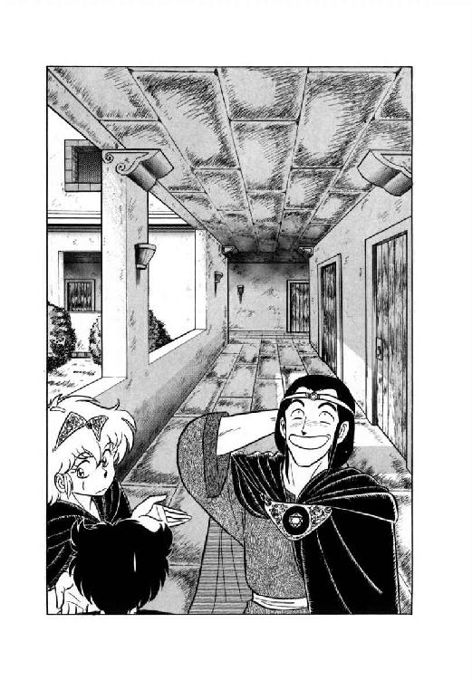
しかし、もちろん、言うまでもなく、彼女の判断は完全に甘かったのである。
３
「どうだい。ちゃんと着いただろう」
偉そーな笑いをうかべ、魔道士はえっへんと胸を張る。その姿を横目に見て、ルナは何も言わずに溜息をついた。確かに図書館の受付に着きはしたが、普通こーゆーのをちゃんと着いたとは言わない。
何しろ、あっちの階段を上っては行き止まり、こっちの通路を曲っては突き当たり、警備の魔道士にあっちこっちでどやされながら、彼女たちは午前中いっぱい『城』の中をぐるぐるぐると歩き回ったのである。しかも、魔道士が同じ場所を堂々めぐりしているのに気付いたルナが強引に進路を変えなかったら、多分今でもまだ歩き回っていたに違いない。
「......あげくの果てには、あたしが警備員に頭下げて道順教えてもらったのよねー。そしたら何と、最初に馬鹿と会った廊下のちょっと先だったんだから、もう何も言う気がしないわ」
馬鹿に道を訊ねたあたしがどじだった、とルナは内心溜息まじりに呟いた。途中、彼女にしてはかなりあからさまに皮肉や嫌味を言ってはみたが、魔道士には全然通じない。そして、到着したとたんに大いばりで胸を張られては、さしものルナもどーっと疲れる。
「それでは、私はこれにて失礼するよ。しかし君たちは幸運だったな。私と出会わなければ、とてもここには着けなかっただろう。うかつに『城』の中を歩くのは危険だという事を、よーく覚えておきたまえ」
偉そーに勝手なごたくを並べ、ギルバート・エゼンは目いっぱいかっこをつけて去ってゆく。まったく、とんだ所でエリオンの仇を討たれちゃった、とルナはその背を見ながら苦笑した。
「だけど、彼、これからどこへ行く気か知らないけど、ひとりでちゃんと着けるのかしらね」
「それこそ知ったこっちゃありませんよ」
彼女の呟きに、猫少年が投げやりな調子で口を入れる。
「そんな事より、早いとこ書物を調べて帰りましょう。僕はもう、いいかげん疲れました」
「うん、わかった」
こりゃいけない、と思いながらルナは急いで受付に向かった。使い魔が主人に直接弱音を吐くとゆーのは只事ではない。これは早いとこ休ませてやらないと、冗談抜きでひっくりがえってしまうだろう。
女魔道士に書いてもらった閲覧カードを受付に出すと、すぐに分厚い書物が出現する。どうやらこれが、問題の地誌書らしい。書物を受け取ったルナは、半分へたばっている少年に声をかけた。
「ロコ、そこで休んでて。あたしは閲覧室で書物調べてるから」
そう言ってから、彼女はちょっと考えて一言つけ加える。
「しんどかったら、猫に戻ってていいわよ」
「はあ......感謝します」
呟くと、少年はふらっと後ろへ倒れ込んだ。ルナは一瞬ぎょっとしたが、彼はそのままくるりと体をまるめ有翼猫の姿に戻る。ぺたんと床に伏せ、烏猫は大きく吐息をついた。
人間態は便利だけど、不自然だからやっぱり疲れる。土地そのものに魔力のある魔道都市ではかなり長いこと変身してられるけど、二本足でさんざん歩かされちゃ負担がきつい。まったく、ぼけ魔道士のすっとこどっこいが、などとぼんやりと思いながら、彼はたちまち眠り込んでしまった。
「かわいそうに。よっぽど参ってたのね」
呟いて、ルナは書物を抱えて閲覧室に入った。広い部屋にはほとんど人の気配がなく、机と椅子が整然と並んでいる。中庭に面した壁が巨大なガラスで造られているのを見て、彼女は思わず目を見張った。
机のひとつに地誌書をおろし、ルナは注意深く表紙をめくる。もちろん椅子には腰をかけない。
「よかった。どうやら読める」
古式だが共通文字で書かれた記事を見て、彼女は小さく呟いた。
「えーっと、キュロス、キュロスと......あった。これね」
『キュロスの結界』という項目を見つけて、ルナは熱心に読みはじめる。その時、ガラス越しに見える中庭の一角で、土が不自然にぼこりと盛りあがったが、さすがの彼女もそこまでは気がつかない。
「しめた。ここは土が地表に出てる。抜けられるぞ」
そう言って、土竜男は軽く頭上の土塊を押しのけた。正午の日光がさっと穴に差しこみ、彼は細い目をいっそう細める。
「やったな、すこいちゃないか。さっそくみんなに知らせてくるよ」
土竜男の後ろについていた牙鼠男が興奮した声を出し、通路を戻っていく。ニグスはかまわずに、ゆっくりと地表に頭を出した。と、彼の耳にいきなりけたたましー笑い声がとびこんでくる。
「きゃー うっそー 何、あれー」
「モグラよー、大っきなモグラ、かーあいー」
魔道士見習いの若い女の子たちが、頭を出した土竜を見てきゃあきゃあと騒いでいる。どうやら、お弁当を食べに中庭に出てきた連中に見つかってしまったらしい。しかし今さら引っこみもつかず、ニグスはのそのそっと地上に這い出た。
「きゃー 出てきたー、動いてるー」
「知ってる知ってる、あれ、エリマキモグラってゆーのよー。でも、大っきー」
「ねーねー、モグラって日光に当たると死んじゃうんじゃないのお？」
「えー、うっそー、ほんとおーっ？」
あーっ、やかましーっと土竜男は口の中で思わず呟く。とても謎と神秘の魔道都市で日々研鑽を積んでいる魔道士見習いとは思えない。
「こういう連中に貴重な文献を見る特権があって、俺にないというのはどーゆー訳だ。世の中、絶対に間違ってるぞ」
ぶつぶつ文句を言いながら、ニグスは体をぶるっと振って変身を解いた。即座に娘たちが黄色い声で叫びたてる。
「きゃあ、きゃあ、化けたわ。化けモグラよ」
「やっだあー、獣人よ。こあいわ、こあいわ」
「えーい、じゃっかましいっ！」
思わず一声怒鳴りつけたものの、見習いの小娘なんぞに腹を立ててる暇はない。ニグスは急いで中庭を走り抜け、『城』の中にもぐりこんだ。
「ねー、もしかして、あれって不法侵入者じゃなーい？」
「きゃあ、やっだー うそみたーい」
土竜男を見送った娘たちは、意味もなくきゃあきゃあと盛りあがる。何であれ、普通と違うことなら大歓迎してしまうお年頃なのだ。と、その時土竜男の掘りぬいた地下通路から、獣人一党とバト・ロビスが出現したから、もう大変な騒ぎとなる。
「きゃあ きゃあ また出てきたわ」
「わお すっごーい、どーんどん出てくる。うっそみたーい」
「ね、ね、あのオジさん、やっぱり変身するのかしら？」
「きっと熊さんよ きゃっ かーあいーっ」
「何なんだ、これは？」
はしゃぎまわる見習いの娘たちを見やって、さしもの無謀戦士もいささか戸惑った声を出した。
「おい、本当にここは魔道都市の中なのか？」
「ニグスの方向感覚に間違いはないと思いますけれど......あっ、あれは！」
建物の方に目を向けたリオネルが、いきなりひきつった声で叫ぶ。
「か、怪獣娘っ！」
「ぬぁ──に──っ！」
巨漢がくわっと目をむいたのを見て、巫女は言うんじゃなかった、と心底後悔した。しかし、言ってしまったものはとりかえしがつかない。すでに無謀戦士はガラスの壁の向こうに、宿敵の姿を見つけてしまった。
「小娘ーっ！ そこを動くなあーっ！」
咆哮とともに斧剣をふりかざし、バト・ロビスは閲覧室へと突進する。わくわく気分で見物している魔道士見習いの娘たちが、一斉に両こぶしを口元にあてて叫んだ。
「きゃ──、うっそお──、オジさん、それって、無謀よお──っ！」
４
「獣人谷、かあ」
地誌書を読みながら、ルナは軽く眉を寄せて呟いた。
「この記事をそのまま信じれば、キュロスに通じる地下結界の入口は、獣人族の住む谷にあるってことよね......てことは、あの、リルを狙ってる連中の本拠に、こっちから乗り込んでいかなきゃいけないって事か......。もっともこの記事、著者本人もあんまり真に受けてはない感じね」
何しろ、地下結界についての記述のほとんど全体が、『...と伝えられる』とか『...という説もある』とか『...と考えられなくもない』などという、はなはだ頼りない調子で書かれている。これはどー見ても眉唾ものだ。
「......だけどまあ、だめでもともとだもんね。ミル・ユードさんから錠剤もらったら、獣人谷とやらに行ってみよっと」
もちろん、リルは都市に残しておかなくちゃ、と呟きながら彼女は書物の頁をめくった。その瞬間、ガラスの壁がガチーンという硬い音響をあげる。驚いてふり向いたルナの目に、斧剣をふりかざした巨漢の姿が映った。
「あらら......どっから入ってきたのよ、この中年は」
うんざりとした調子で首をすくめ、ルナは地誌書をぱたんと閉じて小脇に抱える。そのまますたすたと受付へ向かう彼女の背に巨漢が何か叫んでいるが、聞く気も起こらない。どーせ、逃げるな小娘とか喚いているに決っている。
「別に相手してやってもいいけど、『城』で暴れたらファラさんに迷惑かけちゃうもんね」
しかし、無謀戦士のことだから、そのうち斧剣で壁ぶち破って乱入してくるのは間違いなかろう。下手に逃げると追っかけっこになって、ますます騒ぎを大きくしてしまう。どうしたもんかな、と受付に書物を戻しながら彼女は首をかしげた。
「要するに、やつらがあたしを追う気になれないような逃げ方をすればいいわけか」
呟いてルナは軽くうなずき、床に伏せているロコの方を見た。黒い有翼猫は体を縮めてぐっすりと眠りこんでいる。
「起こすのも可哀そうね。どうせ戦闘にはならないでしょうし、後でおち合えば済むことだわ」
ルナは魔道都市の地図をとり出すと、裏面に簡単な伝言をしたためた。そして、表側にマークをつけて烏猫の鼻先に置く。その間じゅう、閲覧室からはガチャーン、バリーンといった派手な破壊音が響いてくる。
「さあて、行きますか。......でも待てよ。この服を吹っとばしちゃったら、まともな服は手に入らないかも知れないわね」
何しろ商店はすべて趣味のお店、女魔道士の服は全部露出過剰とゆー都市だ。普通の短衣やマントが買えない可能性は、かなりある。
「しゃあないか」
苦笑まじりに呟いて、ルナはマントの紐をほどいた。続いてサンダルの留め革をはずし、思いきり良く短衣も脱ぎ捨てる。さすがに下着のところでちょっと手が止まったが、ここまで来てためらってもはじまらない。結局彼女は一糸まとわぬ姿になって、脱いだ衣類を烏猫の前にまとめて置いた。伝言を書いた地図を衣類の上にのせたとたん、閲覧室からひときわ大きな破壊音と無謀戦士の怒鳴り声が響きわたる。
「小娘っ！ どこだ、出てこーいっ！」
「はーい、今行くわよっ！」
叫びかえして、ルナは宿敵の待つ閲覧室にとびこんだ。とたんに、斧剣がうなりをあげて襲ってくる。彼女は大きく跳んでこの猛撃をかわした。目いっぱいはしたない姿勢になってしまうが、そんなこと言ってる場合じゃない。
「むっ!? 公女ともあろう者が、素っ裸で闘う気か？ 俺の目を惑わそうという小細工なら、無駄な事だぞ」
「あいにく、小細工じゃないのよね」
間合いをはかりながら、ルナはゆっくりと横に動く。ガラスの壁に巨漢があけた大穴と、斧剣の刃先を交互に見やって、彼女は機会を待っていた。と、刃先がいきなりぶんっと横なぐりにすっとんでくる。
「来たなっ！」
鋭く呟きながら、ルナは飛鳥のように跳んだ。斧剣の斬撃を紙一重で見切り、空中でくるっと体を半回転させる。バト・ロビスは稲妻のように素早く斧剣を反転させたが、その時すでに彼女の体は閲覧室から中庭にとび出していた。
「おのれっ！ 逃げるかあっ！」
「ええ、逃げますよ」
中庭の土の上に軽々と着地し、ルナはにっこりと微笑する。あわてふためいてとびかかってくる巫女や牙鼠男を完全に無視し、バト・ロビスに向かって片手を振ってみせた。
「今日は都合悪いの。じゃあ、またね」
「こらあっ！ ふざけるなあっ！」
喚きながら巨漢が閲覧室からとび出そうとした瞬間、いきなり正面からぶおっと突風が吹きつける。もちろん風ぐらいでひるむよーな無謀戦士ではないが、半ば反射的に腕で顔面を防御した。そして、再度中庭を見直したときには、すでに裸の公女の姿はない。そのかわり、巨大な深緑色の塔のようなものが、バト・ロビスの目の前にそそり立っている。
「ば...化けおったなあ、小娘っ！」
さすがにくわっと目を見開き、しかし半歩も退くことなく、無謀戦士は斧剣をしっかり把んで魔獣戦士をにらみ上げた。と、その緊張感をぶち破るよーに、見習い娘たちがきゃあきゃあと声をあげる。
「きゃー、うっそー、怪獣よおー」
「すっごい、すっごい、大っきー」
「あたし、こんなのはじめて見るー。みんなに話しちゃおーっと。きゃっ」
と、魔獣がすっと身を沈めた。攻撃に備えてバト・ロビスも低く体勢をとる。
「踏み潰しにくるか......それとも尻尾で払う気かっ......」
とにかく最初の一撃さえかわせば勝機はある、と戦士は自分に言いきかせるように呟いた。と、魔獣の尾がふわっと地面から浮きあがる。戦士の全身にぐっと力が入った。
次の瞬間、どすーんという重い響きとともに地面が大きく揺れる。バト・ロビスは反射的に全力で後方へ跳び退がった。が、その時にはすでに魔獣の姿は彼の前にない。
「な、何い？」
いささか間の抜けた表情で、巨漢はきょろきょろと中庭を見回した。そこにいるのは、獣化した状態で半ば腰をぬかしている獣人たちと、きゃあきゃあはしゃぎまくっている魔道士見習いの小娘たちだけである。巨大二足直立竜のばかでかい図体は、まるでかき消したように見えなくなってしまった。
「おい。奴はどこへ行った」
大将の質問に、黒面洗熊に変身したギルスが反応した。黙ったまま、爪のひとつで天を指す。
「昇天したのかい？」
砂鰐から人間の姿に戻りながら、フィロスが不思議そうに訊ねた。洗熊はぶんぶんぶんと首を振る。
「ちがうぜ、兄貴。跳んだだけだ。あの化物の跳躍力はとんでもねえからな。ありゃ、多分魔道都市の外へとび出してるぜ」
「......つまり、逃げたのか」
バト・ロビスが押し殺したような声で呟いた。
「おのれ、逃げ足の早い小娘め。この俺があきらめるとでも思っているのか。追うぞっ！」
怒声とともに、無謀戦士はどどどどどっと中庭を走り抜け地下通路にとびこむ。変身を解いた巫女があわてて叫ぶ。
「待って下さいませ、バト様！ 私たちは生贄を見つけて捕えなくては！」
怪獣娘がいた以上、リリスもこの近くにいるはずだ、と彼女は判断していた。そして、護衛が都市の外に出てしまった今こそ、千載一遇の機会ではないか。が、もちろん大将は聞く耳持たずに地下通路に消え、しかも甲猪男が走ってきて囁く。
「まずいですぞお、巫女様。騒ぎを聞きつけて魔道士たちが出てきよったら、儂らだけではひとたまりもありませんでのう。早いところ引き揚げるのが上策ですて」
「だけど、こんな好機......！」
生贄の祭儀まであと三日しかない。今、奴を捕えなければ、機会は二度とないだろう。と、その時、ガラス壁の穴からバト・ロビス並みに巨大な姿が現われた。見れば、背負い袋と肩かけ袋に詰めるだけの書物を詰めこんだ土竜男である。
「まったく、もっと派手な騒動になるかと思ったのに、この程度でおさまったんじゃ撤退しないと危いじゃないか。まったく、探せばいくらでも凄い書物があるはずなのに、この程度しか持ち出せないなんて、ああ情けなや口惜しや。また来るぞ。また必ず俺は来る。アディオス・アルタイオーッ！」
完全に自分の世界で独演をしながら、土竜男は大量の書物とともに地下通路へ入ろうとした。そこで、あぜんとしていた巫女がはっと我にかえる。
「待って、ニグス！ リリスはいたのっ？」
「そんなもん知るか」
再び目いっぱい無愛想な口調に戻り、それでも彼は一応立ち止まって返答した。
「黒猫が居眠りこいてるのは見たがね。リリスはいないよ。あいつは俺以上にカンがいいからな。こんな場合、そこらをうろついてるはずもないだろ。さっさと逃げないと、こっちも危いぞ」
早口で言い捨てると、土竜男はさっさと地下通路の中に姿を消す。それでもまだ未練顔でうろうろとしている巫女に、牙鼠男がせっぱ詰まった声で叫ぶ。
「リオネルさまっ！ やぱい、魔道士かててくるっ！」
「......仕方ないっ、撤退──っ！」
閲覧室に数人の魔道士がどやどやっと入ってきたのを壁越しに見て、とうとうリオネルもあきらめて叫んだ。
５
中庭から高々とはねあがった魔獣戦士は、巨大な『城』の建物を軽く跳び越え、そのまま城壁の向こうに着地しようとした。が、城壁の上を通過する寸前、魔獣がくるっと身体をひねる。と同時に、空中にばちばちっと派手な雷撃が走った。
「ど、どうしたのっ!?」
「障壁ダ。体当リデハ突破デキンゾ」
背と尻尾に火花を散らせながら、肉体は冷静な調子で応じる。その巨体は数瞬の間、中空に停止していたが、すぐに『城』の屋上に降り立った。魔獣の足元で建物にぴしっと亀裂がはいり、ルナはあわてて叫ぶ。
「壊しちゃだめよっ！ 何とかしなさいっ！」
「ヤレヤレ、ワカッタヨ。何トカスル」
苦笑まじりの声とともに、魔獣の体がふわっと建物から浮きあがった。そしてまた、すぐに屋上に降りるが、今度は亀裂は広がらない。
「コレデイイダロ。ダケド体重ノ半分以上ヲ魔力デ消シテルンダカラ、長続キハシナイゾ」
「わかった」
さてどうしよう、とルナは一瞬考えこんだ。障壁が突破できないとなると、この場で人間態に戻ることになる。しかしそれでは、素っ裸で『城』の中をうろうろしなくてはならない。冗談じゃあないわ、と彼女は眉をしかめた。
「何とか外に出て、烏猫に服持ってきてもらわなくちゃ。......そうだ、肉体、破壊叫でこの障壁、破れる？」
「オ易イ御用サ。ヤルカ？」
肉体の声に、わずかに期待するような調子が混じる。頭脳体はにこっと笑ってうなずいた。
「よし、やっちゃおう！」
「ワカッタ。聴力レベルヲ下ゲルゾ」
言いながら、魔獣はくるりと城壁と、その上方に張られた見えない障壁の方へ向きなおる。
「いい？ 壊すのは城壁じゃなくて障壁だけだからね。わかってる？」
「ワカッテルヨ。デモ大差ハ無イト思ウガネ」
ルナの頭の中へ返事をしながら、魔獣はさっそく轟々と咆哮をあげはじめた。と、その時、『城』の屋上に一人の魔道士が上がってくる。魔獣の位置からはかなり離れた場所だが、それでもこの巨体と咆哮に気付かないわけがない。
「......驚いたな。まさかとは思ったが......」
リムズベルの大怪獣じゃないか、とギルバート・エゼンは目を丸くして呟いた。彼はルナと別れた後、またも道に迷って『城』の上層階の方をうろうろしたあげく、ひょっこり屋上に出てきたのである。
「しかし、これはいい場所で会ったぞ」
まさか先刻道案内をしてやった女の子が魔獣だったとは露知らず、魔獣はかっこをつけてふっと笑った。
「『城』の屋上なら観衆には不自由しないからな。私が怪獣を倒す場面を、すべての力ある魔道士に見てもらう事ができる。そうすれば、労せずして我が名は魔道都市の伝説となるに違いない。わは、わは、わーはははははははは」
凄まじい咆哮の音量に両手で耳を塞ぎながら、ギルバートは天をあおいで馬鹿笑いをはじめる。レイピアがいたら眉をしかめて額をおさえるところだろうが、彼の大言壮語も実は根拠がまったくないというわけではない。昨日、師匠の研究室に顔を出したギルバートは、エリオンで大量の飛行竜を操縦して戦った一件を報告した。すると師匠は、それならこの魔術も使えるようになっとるな、と言って新しい呪文を教えてくれたのである。
「ふっふっふっふっ、この新必殺魔術を早くも使う時が来ようとはな。ここで私に会ったのが貴様の不運だ」
再び馬鹿笑いをかっこつけ笑いに戻し、魔道士は気取った口調で呟いた。しかし、両手で耳を塞いでいる姿なので、いつも以上に決まらない。
「それでは黄金飛行竜召喚の秘術、見せてやろうか。...と、待てよ、呪文は......」
何しろ昨日教えてもらって、まだ一回も使ったことのない呪文だ。彼の記憶力では、きちんと思い出そうという方が無理である。呪文を綴った巻物は長文の懐に入っているが、耳を塞いでいては出すに出せない。さすがのギルバートも、いささか狼狽した表情になった。
「こ、困ったな、これは......」
魔道士があたふたしながら呟くうちに、魔獣の咆哮はどんどん音量を上げ、ついに音の限界を突破する。同時にそれは怖るべき破壊波と化して、魔道都市を覆う障壁に叩きつけられた。一瞬、もの凄い数の電光が障壁の全面に走ったが、たちまち焦げたような臭気を残して消えてなくなる。同時に、魔獣はばくんと口を閉じた。
「済ンダゾ。障壁ハ消滅シタ」
「御苦労さん。じゃあ、行きましょう」
言うが早いか、ルナは肉体をぽーんと跳躍させる。今度は何ひとつ阻むものもなく、魔獣は城壁を跳び越え、魔道都市の外に出た。
「しまった、逃げられたかっ！」
別に魔獣戦士に逃げたつもりはないが、魔道士は口惜しそーに叫んだ。が、そこではっと気がついて、耳から手を離し懐の巻物をつかむ。今なら、まだ追えるだろう。彼は巻物に書かれた呪文を早口で呟くように読みあげた。すると空間が裂け、鮮かな黄金色に輝く飛行竜がとび出してくる。大きさも並の飛行竜より三回り以上でかく、優に大人が乗れる体格だ。
「うーむ、我ながらこれは見事だ。美しい」
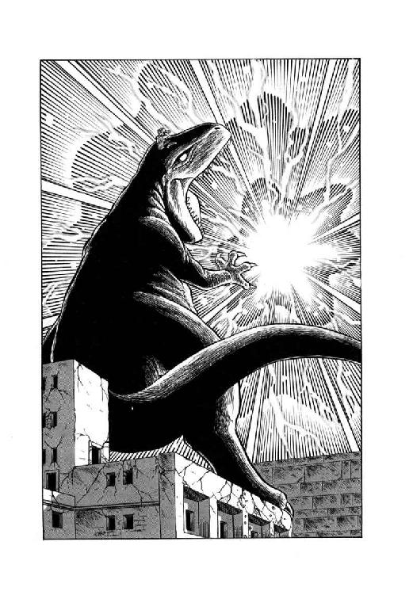
一瞬、魔道士は黄金飛行竜を見上げ、にっこり笑って呟いた。とはいうものの、鑑賞用に召喚をかけたわけではない。彼は黄金飛行竜を呼び寄せると、ひらりとその背に乗った。
「ゆけ、我が美しく忠実なる下僕よ。リムズベルの大怪獣を追うのだ！」
主人の命令に従って、黄金飛行竜はすいっと飛翔して城壁を越える。すると、意外にも巨大二足直立竜はまだその場に立っていた。ルナにしてみれば、まさか城壁を越えて追って来る奴がいるなんて、思ってもいなかったのである。
「飛行竜ダゾ。人間が乗ッテイル」
「......ギルバート・エゼンだわ」
魔獣視力で黄金飛行竜の乗り手を見定めて、彼女はあきれたように呟いた。
「何しに出て来たのかしら、あの魔道士。まさか道案内してくれようってんじゃないでしょうね」
「目障ワリナラバ、破壊叫デ吹ッ飛バスカ」
肉体がごく無雑作な調子で訊ねる。頭脳体は一瞬ぎくりとするものを感じて、あわてて首を振った。
「だめよ。攻撃かけられたんならとにかく、こっちから手を出す理由はないわ。ここは少し、様子を見ましょう」
「ワカッタ」
そう言って肉体はあっさりひきさがる。ルナは内心ふうっと溜息をついた。しっかりしないと魔獣に吞まれるという危機感を、彼女は忘れていない。
魔獣戦士の頭の上でそんなやりとりがされているとは知るよしもなく、魔道士は黄金飛行竜の背の上に坐りこんで何やらぶつぶつと呟いている。
「どうやら気付かれてはいないようだが、しかし、今、攻撃をかけて怪獣を倒したところで見物人は皆無だしなー。やっぱり我が壮挙、誰かに見せなくては勿体ないよなー。うーん、そうだな、少なくとも彼女には見せてやろう」
意を決して、魔道士は黄金飛行竜を反転させた。去りざま後ろを振りかえり、彼は目いっぱいかっこつけて呟く。
「私が戻るまで、その場を動くなよ。リムズベルの大怪獣よ。ふっふっふっふっ」
気障な笑いを残して魔道都市へひき返してゆくギルバートを、魔獣戦士はあっけにとられて見送った。本人は気付かなかったが、彼の表情も呟きも、魔獣の超感覚で細大洩らさず見られ聞かれている。しかし、とゆーか、そのために、いったい魔道士が何考えてるのか、ルナには皆目見当がつかない。肉体も似たような気分らしく、彼女の頭の中に低い調子で訊ねかけてくる。
「オイ、今ノ、イッタイ何ナンダ？」
「あたしに訊かないでよ」
頭脳体が即座に応じ、それきり双方ともに沈黙してしまった。
６
「おいっ、起きんかっ！」
突然乱暴に頭を揺さぶられ、烏猫は渋々と目を開いた。視界いっぱいに、かがみこんでいる人間が見える。女主人ではない。険悪な表情をした男性の魔道士だ。
「ふあ～い？」
烏猫はあくび混じりに返事をした。先刻よりはだいぶましになったが、まだひどく身体がだるい。眠そーな目で見上げる彼を、魔道士はきつい口調で詰問する。
「お前は使い魔か。色章を見せろ」
「ふぁい。ここにつけてまふ」
ひっぺがすようにして、烏猫は床がら上体を起こした。内門で渡された藍色章が胸元についている。
「ふむ。お前、不法侵入者を見なかったか？」
「ふお？ ほわ、ふわ～っ」
魔道士が訊ねた言葉が一瞬理解できず、訊ねかえそうとしたとたん大欠伸が出てしまった。ほわほわ言いながら顔をこすっている猫をにらんで、魔道士はいまいましげに呟く。
「まったく、この眠り猫め。何の役にも立ちやしない！」
「ほえ？」
いったいこいつは僕に何を期待してるんだ、と思いながら、烏猫は顔を横に向けた。魔道士はふん、と鼻を鳴らすと、足早に受付から去ってゆく。
「何だってんだ、いったい。うっとーしいなあ、まったくぅ......」
あまり意味のない呟きを洩らしながら、ロコはゆっくりと身体を伸ばす。と、その時はじめて、彼は自分の傍に積んである衣類の小山に気がついた。
「あれ？ これはルナ様の服か？」
あわてて烏猫はくるっと前転して人間態に変身した。衣類を手に取ってみると、上に一枚の地図が乗っている。裏面の伝言に気付いたとたん、猫少年の表情が見る見るうちにひきつった。
「何だって？ 『バト・ロビスの中年が襲ってきたんで、騒ぎをでかくしないよう逃げるわ。魔獣変身して都市の外へ出るつもりだから、地図にマークした地点まで服とかを持ってきて。よろしくね。ルナ』だってえ!? し、しまったあっ！」
御主人様が敵に襲われている時にぐうぐう居眠りこいてるなんて、こんな間抜けな使い魔聞いたこともない。自分自身を罵りながら、彼は衣類を抱えてやみくもに閲覧室に走り込んだ。しかし、ルナはもちろん、すでに侵入者たちの姿もなく、数人の魔道士たちが破損したガラスの壁を見ながらがやがややっているばかりである。と、そのうちの一人が猫少年を振り向き、じろりとにらんだ。
「何だ、お前は？」
「いえ、あの、どうも間違えたみたいです。すいません」
直観的にやばいものを感じ、ロコはぺこっと頭を下げると急いで逃げ出す。下手な事を訊ねてヤブヘビになってもまずいし、どうやらここは服を運ぶ以外できる事はなさそうだ。
「まったく我ながら間抜けだなー」
心底情ない思いをこめて呟きながら、彼は足早に『城』を出る。女主人の指定した場所は都市の外だから、一回大門を出て回っていかなくてはならない。まさか当のルナが魔道都市を覆う障壁をふっとばしてしまったとは知るわけもなく、猫少年は中央通をせかせかと進んで行った。するといきなり聞きなれた声が彼を呼び止める。
「あら！ ルナはどうしたの？ 一緒じゃないの？」
「リルか。ファラさんの邸で寝てたんじゃないのか？」
少年は思わず足をとめて訊ねた。二色毛の髪の少女はぺろっと舌を出す。
「ごじょーだん。死霊術師の家でのんびり寝てられるほど、あたい神経太くないよ。それにあたい、あの家でまたとんでもないもを見ちゃったしね」
「とんでもないもの？」
猫少年は軽く眉を寄せた。リルは、思わせぶりっこに声を低くする。
「あの死霊術師の寝室に、でっかい衣装棚があるだけどさ、その中身が凄いだ。あたい、あれ見た時にはほとんど腰ぬかしそーになっちゃったよ」
そう言ってリルはふっと吐息をついた。
「いっくら死霊術師だってねー。衣装棚に男の死体をずらりとぶら下げとくことないと思うけどね。それも、首がなかったり、胸がえぐれていたり、変死体ばっかだよ」
「そりゃ魔奴屍人の材料だな」
昨夜見た、首なし男を思い出してロコは眉をしかめる。どーやら女死霊術師は衣装棚に男の死体を並べておいて、夜ごとにとっかえひっかえ魔奴屍人にして相手をさせているらしい。
「死人の後宮だ。うー、気色悪い」
「でしょ？ いっくら当の死霊術師が留守だったって、あんな邸に一人でいられるもじゃないわ」
少女は大げさに肩をすくめる。確かに、と納得しかかったが、その時ロコはふと気がついた。
「だけど、リル。どうしてファラさんの寝室の衣装棚なんか開けたんだ？」
「決ってるじゃない。他の棚にはぜーんぶ錠がかかってたも。何か使えそーな品物があったら借りようと思ったのにさ」
「金目の品物があったらいただこう、じゃないのか、そりゃ？」
猫少年は金色の瞳に疑惑をこめて、倫理観念ゼロの少女を横目でにらむ。だが、もちろんそんな事でかしこまるようなリルではない。
「まーね、あたいの方はそーゆーわけ。で、そっちはどーしたってーの？ ルナはどこ？」
「それがちょっと厄介な事になってね。例の蛮人戦士が『城』にもぐり込んで来たんだよ」
「えっ!?」
少女の表情が鮮やかなぐらいに引き締まる。
「じゃ、獣人どもも都市に来てのっ!?」
「さあ、それは知らないけど。とにかくルナ様は立回りを避けるため、魔獣変身して都市の外へ出たんだ。僕はこれから、ルナ様のところへ衣類を持っていくところだよ」
自分の居眠りとかは省略して、猫少年は手短かに事態を説明した。すると、リルが意外なほど真剣な顔で彼をぐいとにらみつける。
「それじゃあ、何でこな所でもたもたしてのよっ！ 急いで行かなくちゃ！」
言うが早いか、少女は大門の方へ走りだしかかった。が、猫少年があっけにとられているのを見ると、足を止め苛立たしげに叫ぶ。
「あにやっての、このぼけ猫！ さっさとおいでったら！」
「ちょ、ちょっと。君も都市の外へ出る気なのかい？」
「あったり前でしょーがっ！」
いぶかしげなロコに、リルは叩きつけるような勢いで怒鳴った。
「あーにが侵入不能の魔道都市よ。蛮人男があっさりもぐり込んで来るよーじゃ、危なくってしょーがないじゃない。あたいにとって安全な場所は、もうルナの傍しかないのっ！」
「わかった」
確かに、と今度は素直に納得し、猫少年は少女に続いて走りだした。その時、彼らの頭上をすーいと黄金飛行竜が通過したが、かなりの高度をとっていたこともあって二人とも全然気がつかない。同様に、飛行竜の背に乗った魔道士も、当然と言えば当然ながらロコとリルにはまったく注意を払わなかった。
「まいったなー。市街を上から見おろすなんて初めてだからなー、どこがどこやら見当もつかないや」
きょろきょろと地上を見回しながら、彼は途方に暮れたよーに呟く。
「うーん、大門があっちで『城』がこっち、このへんが中央通りだから、彼女のいる『貿易商クラブ』は......えい、わからん。とにかく適当に降りよう」
持ち前のえーかげんな性格をもろに出し、魔道士は何となくそれっぽい大きな建物の前に黄金飛行竜を降下させた。輝く姿に気付いた通行人がどよめき、ギルバートは気分良くふっふっふっと笑う。
「魔道都市に召喚術士数多いといえども、黄金飛行竜を乗り回すほどの者はこの私ぐらいのものだろうな。これであの怪獣をも退治すれば導師の称号を得てもおかしくない。いや、当然と言うべきだろう。もしかすると、評議会議員の席に就くことだって、うん、ありうる。魔道都市史上、最年少の評議員だな。ふっふっふっ、はっはっはっ、わーはははははははははは」
「何を馬鹿笑いしてるのよ。この間抜け」
こつん、と後ろから軽く頭を叩かれ、魔道士はあわてて振りむいた。
「あ、レイピア......」
「何やってんのよ。こんな場所にでっかい飛行竜なんか降ろして。目いっぱい通行の邪魔になってるじゃない。さっさとどかしなさい」
歯切れの良い口調でぽんぽんっとまくしたてられ、ギルバートはあわてて黄金飛行竜を離陸させた。一階家の屋根ぐらいの高さまで上昇して旋回する飛行竜を見上げ、女戦士はにこっと笑う。
「はい、結構。ところで、あんた、どうしてこんな場所にいるの？」
「こんな場所って、ここは『貿易商クラブ』だろ？」
いやー、私の方向感覚もたいしたものだな、と内心自慢笑いを浮かべながら彼は訊ねた。上空から、ほとんど行ったことのない建物を一発で見つけたのだから、これは画期的というべきだろう。だが、レイピアはあきれたような表情になって答えた。
「『貿易商クラブ』に用なら、もっとずうっと中央通り寄りの方よ。ここは『工人会館』だから、かなりの見当違いしてるわね」
「......いや、別に見当違いではないんだ」
気を取りなおし、ギルバートは例によってかっこをつけた声を出す。
「私が探していたのは建物ではなくて、人物だからね。レイピア・ロナ、君に見せたいものがある」
「何よ、いったい？」
警戒するよーな声を出し、女戦士は軽く眉を寄せた。こいつの言う事をまともに聞くと、たいてい阿呆な目を見ることになっている。が、魔道士は相手の表情などかまわず、自信満々の笑いをうかべた。
「リムズベルの大怪獣が私に倒される光景だよ。これは滅多に見られるものじゃないぞ」
「へえっ!?」
レイピアの琥珀色の目が丸くなる。するとあの娘、魔道都市の中で変身したのかしら!?
「大怪獣が出たのは、どこ？」
「『城』の屋上だ。今は障壁を突破して、都市の外へ出ている。見に来る気があるなら、私といっしょに飛行竜に乗りたまえ」
気取った笑みをうかべて、魔道は黄金飛行竜を呼びおろした。女戦士は無言でうなずき、ひらっとその背に乗る。何が起こったのかよくわからないが、とにかく見逃す手はないだろう。
「よし。では行こうか」
ギルバートも、彼女に続いて黄金飛行竜の背に乗る。と、彼が乗ったとたん、飛行竜がきゅい～～んっと悲鳴をあげた。同時に、腰ぐらいの高さで宙に浮いていたのが、ぺちゃんと地面に伏せてしまう。
「ありゃりゃ......」
「重量オーバーみたいね」
女戦士は苦笑して肩をすくめる。魔道士は眉を寄せて飛行竜から降りた。すると再び、レイピアを乗せた黄金飛行竜がふわっと空中に浮きあがる。
「どうするの？」
「仕方ない。もう一匹召喚するよ。......まあ、もともと飛行竜てのは乗用じゃないからな......」
ぶちぶち言いながらギルバートは巻物を取り出し、呪文を唱えはじめた。飛行竜の背の上に坐ってそれを見ながら、女戦士は口の中で呟く。
「だけどこの男、どーやって怪獣と戦う気なのかしら？ やたらに自信ありげだけど......」
７
「巫女さま、一応埋め終わりました」
地下通路から顔を出して、砂鰐男がにっこりと笑った。彼の脇から牙鼠男がいかにもばてた表情で這い出してくる。
「御苦労さま」
そう言って、巫女はもうひとつの穴をちらっと見た。山のような書物を抱えて魔道都市から出てくるが早いか、土竜男の奴は勝手に穴を掘って書物といっしょにその中にもぐり込んでしまったのである。おかげで、都市からの追手を防ぐため地下通路を埋める作業が、総がかりの大仕事になってしまった。
「ニグスがやってくれれば、あっという間なのに。......でもまあ、追手がかかる前に穴を塞げて良かったわ」
呟いて、彼女はほっと溜息をつく。無謀戦士とは違い、彼女たち獣人にとって魔道都市と魔道士というのはとにかく怖るべき存在なのだ。その怖っそろしい魔道都市にあえて侵入してみたが、土竜男はとにかく彼女としては何の収穫も得られなかった。
「......蛇神様は私たちを見捨てられたのかしら......」
普段の彼女だったら口が裂けても言わないよーな言葉がぼそっと洩れ、傍に坐っていた甲猪男がぎょっとした表情になる。が、リオネルはいかにも虚脱したように、ぼーっと空中を見つめるばかりだ。これではまるで、七色長舌蜥蜴男ヴェグの目付じゃのお、と甲猪男は軽い吐息をつく。
「気落ちされるのも無理ない事じゃて。もはや祭儀は三日後、あのずる賢い小娘の居場所もわからんでは、捕えるなぞはとうてい無理じゃからのお。そうなれば生贄は巫女さまが可愛がっとる妹君になるか、さもなくばリオネルさま自身か、どちらかしかないて」
彼は同情をこめて巫女を見やった。一見、気が強くて権高なつっぱり娘にしか見えないが、甲猪男は彼女がごく幼い頃から良く知っている。思い込みこそ激しいが、その分真面目ないい娘なんじゃがのお、と彼はまた吐息をついた。
「これから、どうします？」
穴から上がってきた砂鰐男が屈託のない口調で訊ねる。巫女ははっと我にかえった表情で、長身の配下を見上げた。
「これから......」
「何とかニグスをそそのかして、また地下通路を掘ってもらいますか。もし彼がだめなら、僕が掘ってもいいですけどね。時間はかかりますが、何とかできますよ」
そう言ってフィロスは巫女に笑ってみせた。彼も、兄貴と同じくリオネルを妹のように考えている。できることなら、何とかしてやりたい。
だが、彼女はいつもの強気とは裏腹に、弱々しく微笑した。
「ありがとう。でも、もう時間がないわ。祭儀は三日後だもの。明日の日の出までに谷に戻らないと、私には巫女としての務めがある」
そう呟くと、彼女は杖を手に立ちあがった。
「やむを得ません。バト様が怪獣捜索から帰られたらすぐに、獣人谷に出発します」
「大将を谷にお連れするんですかい？」
牙鼠男の後から穴から出てきた髭男が、服を着換えながら訊ねる。彼は今まで獣化しても破れない獣人族特製の毛皮服を着ていたが、これで都市へ戻るわけにはいかない。ギルスの問いに、巫女は暗い表情で答えた。
「それはバト様のお心次第です。着換えているところを見ると、お前は谷に来る気はないようね、ギルス？」
「ええ。あっしは若旦那の元へ戻らねえと。連絡をつけてくれりゃ協力はしますがね。今の仕事を捨てて、谷に行く気はありやせん」
きっぱりと言うと、彼は持ち出してきた都市の見取り図をくるくるっと巻いて懐に入れる。この侵入の手引きをした一件だけでも、もしもばれたら首がとぶ。もう危ない橋は御免だぜ、と彼は内心呟いた。
「だけど、大将おそいですね。もしかしたら、怪獣とでくわしちゃったんじゃないかな」
冗談とも本気ともつかない口調で砂鰐男が言う。巫女はかすかに眉をしかめた。もし、彼女が処女を捧げたあの戦士が怪獣と遭遇していたら、もう彼女たちに手の出しようはない。しかし、彼は城壁の外をぐるっと一周する気で出かけたらしいから、まだ戻って来なくても不思議はない、と巫女は自分に言い聞かせる。
「もし日没までにバト様が戻らなければ、そのまま出発します。ニグスも、出発までに穴から出てこなかったら、置いていきますからね」
紫の瞳に苛立ちとあきらめの色を濃くにじませ、それでも巫女は一同にきっぱりと言いわたした。と、その時、頭上でクェーッという甲高い叫びがあがる。獣人たちははっとして、七色長舌蜥蜴男を除いて全員が一斉に天をあおいだ。
「あれは......飛行竜!?」
「それにしちゃでかい。しかも、金色の飛行竜なんて見たことないぜ」
髭男がそう言ったとたん、彼の足元で地面がもこもこっと盛りあがる。そしてすぐに、土竜姿のニグスが顔を出した。
「ううむ、それは黄金飛行竜に違いない。かなり高度な魔道で召喚される強力な怪物だぞ。口からは炎の槍を吐き、音よりも早く翔ぶ。そんじょそこらで見られる代物じゃあない」
「ほお、それはまた......む？ 人間が乗っとるんではないかのお、あの飛行竜？」
甲猪野が指摘したとたん、二頭の黄金飛行竜はそれぞれすいっと高度を上げる。そのため地上からは見えなくなったが、確かにこの飛行竜たちには各々一人ずつ人間が乗っていた。そのうちの一人、女戦士レイピアが両手をメガホン代わりにして大声を張りあげる。
「ねえ！ 大怪獣、どこにいるのよっ！」
「うーん、確かこの付近だったと思ったんだがなあ......」
ぶつぶつ呟きながら、魔道士はまたもきょろきょろと地下を見回していた。しかし、リムズベルの大怪獣こと魔獣戦士は、影も形もまるっきり見当たらない。
「おかしーなー。まさか、逃げられちゃったんじゃないだろうな。うーん......やっぱり見物人なしでも攻撃しかけるべきだったかな、こりゃ......」
この男にしては珍しく、ギルバートはばつの悪そうな表情になり、ぼりぼりと頭を搔いた。わざわざレイピア引っぱってきて何もいませんでしたじゃ、いくら何でも間抜けがすぎる。と、その時、女戦士の乗っている黄金飛行竜が甲高い叫びとともに大きく旋回した。
「な、何？......ああっ！」
レイピアは思わず飛行竜の背から身を乗り出しかかった。今まで城壁の陰になっていた木立ちの中に、見間違いようのない巨大二足直立竜が身動きもせずにじいっと立っている。
「いたっ！ いたわよ、ギルバートッ！ こっち、こっちっ！」
女戦士は目いっぱいの大声で叫んだ。すぐに魔道士も黄金飛行竜を旋回させる。
「おおっ、いつの間にあんな所にっ！」
敵の姿を発見すると同時にギルバートは叫んだ。だが実は、あんな所もこんな所もなく、彼が去ってから再び来るまで魔獣戦士は一歩も位置を変えていない。例によって彼が見当違いをして騒いでいただけなのである。
「ドウスル。今度ハ二頭ダゾ」
「何頭だって同じことよ。攻撃されるまでは様子見るの。わかった？」
魔獣戦士の方はと言えば、ルナがいささか声を尖らせて肉体を押さえていた。魔獣の力で先制攻撃をかけるのは、特に破壊叫を使った場合、あまりにも効果がでかすぎる。何もかも微塵に粉砕してしまってから誤解や間違いが明らかになったりしたら、それこそ取りかえしのつけようがない。
「......だから、魔獣戦士は先制しない。破壊叫は人間には使わない。そのぐらいは自制しとかないとね」
呟きながら、彼女は上空の黄金飛行竜の様子をうかがう。
「二頭とも人間が乗ってるようね。一人は例の魔道士みたいだけど、もう一人は誰かしら。......ん？ この声は......まさか、あの女戦士!?」
ちょうどレイピアが魔獣戦士を発見した時の叫びをとらえ、ルナは軽く眉を寄せた。彼女にとって、魔道士と女戦士という組み合わせは今いち良くわからない。何しろ、レイピアやミル・ユードが南方人とは知っていても、帝国人とは気付いていないルナなのである。
しかし、何で彼女がここにいるのかはとにかく、あの女性を殺すわけにはいかないな、とルナは即座に判断した。彼女はどっからどー見てもミル・ユードの腹心だし、彼を敵に回したら掛け戻し錠は手に入らなくなる。個人的な好き嫌いはあっちに置いとくにしたって、と彼女は呟いた。今、あの若い貿易商と仲たがいするような真似はできない。
「願わくば、攻撃なんかしないでよ......」
黄金飛行竜を見上げながら、ルナは一瞬、人間態に戻ろうか、と思った。魔獣態でいるから余計な敵も招き寄せてしまうわけで、少なくともあの魔道士が人間態の乙女に喧嘩を売るとは考えにくい。
もし、掛け戻し錠に余裕があって、かつ手近に衣類を持った使い魔が控えていたら、彼女はためらわず、人間態をとっただろう。しかし薬はあと二錠で、烏猫はまだ姿を見せない。
「......どうしよう......」
輝く飛行竜に目をすえたまま、ルナはなかば意識せず呟いた。
８
「何よ、これ。道も全然ないじゃない」
大門から城壁沿いにしばらく進んだ森の中で、リルが早くもぶうたれ始めた。
「ルナの指定した場所って、まだなのー？」
「まだだいぶ先だよ」
猫少年が無愛想な口調で答える。有翼猫の姿に戻ればほんのひとっ飛びだが、リルを置いてきぼりにするわけにはいかない。仕方なく人間態で山歩きに付きあっているが、これが思った以上にしんどいのだ。何とかならないかなーと考えているところへ、うまい具合に少女の方が言い出した。
「ね、あたいはここで待ってるからさ。あたひとっ飛びしてルナ連れてきてくない？その方が、これ効率がいいよ」
「そうだね。そうしよう」
即座にうなずくが早いか、少年はくるんと空中で後転し、烏猫の姿に戻る。ルナの衣類は一包みにして背負っているから、変身しても問題はない。
「それじゃ行ってくる。くれぐれもうかつに動かないでくれよ」
「わーってるわよ。そぐらい」
本当にわかってんのかなと思いながら、烏猫はばさりと翼を広げ、翔びあがった。少女はしばらく、その黒い姿を見送る。当分の間は、一人でじっと待つことになるだろう。そう思って彼女が地面に坐りこんだとたん、背後で茂みがさっと鳴った。
「何？」
素早く短剣のつかに手をやり、リルは油断なく振りむく。と、いきなり茂みがばさりと二つに割れる。その裂け目からぬっと巨大な影がのしかかるように現われ、さすがのリルも悲鳴をあげた。
「きゃ～っ、でた～っ、山羆～っ！」
「こら、誰が山羆だ」
巨漢は憮然とした表情で、目の前の小柄な娘を見おろす。相手が口をきいたのに気付き、少女は悲鳴を止めて、鮮碧色の目を二、三度またたいた。
「あれ、違った？」
「違うわい。俺はバト・ロビス。由緒正しい帝国の戦士だぞ」
いささか気分を害した口調で、巨漢は名乗りをあげる。逃げた敵を追って地下通路からとび出し、城壁の周囲をぐるりと回ってみたが求める敵の姿はない。実は、彼の方が敵より先に魔道都市から出てしまったために行き違ったのだが、障壁のことなど知らない無謀戦士は敵が彼を怖れて全速力で遁走したに違いないと思い込んでいる。
また逃げられたという腹立ちと、怪獣の姿になっても俺とは戦えんのだなという優越感が混ざった、一種ややこしー気分で巨漢は出発地点に戻ろうとしていた。そして、その少し手前で少女とばったり出くわしたのである。むろん、驚いたのは相手の方だ。
「冗談でしょーっ!? 蛮人は都市の中にいるはずじゃなかったの!?」
目の前の巨漢が蛮人戦士と見たとたん、リルの全身の毛がずざざざと逆立つ。こいつははっきり言って、山羆よりよっぽどたちが悪い。しかも蛮人がいる以上、彼女を生贄にしようと狙う獣人どもも近くにいる可能性が大だ。逃げなくちゃ、と思いながらもリルの目は蛮人の巨大な斧剣から離れられない。下手に動いたら、あれがうなりを上げて襲って来そうな気がする。あたいが宿敵の一味だとばれたら、蛮人は一回寝たことあっても容赦しないだろーな、とリルは戦慄しながら思った。問答無用で斬りつけてこないってことは、まだ気付いてないだろーけど......。
「ん？ おぬし、どこかで会ったことはないか？」
少女を見すえて、巨漢はわずかに首をかしげた。や、やばいっ、と思いながらリルは先手をうって喋りだす。
「ええ。ドルミエの港町で、わたくしの娼家にお遊びに来られましたでしょう？」
「おお、あの夜の娼婦か。これは奇遇だな」
そう言って、巨漢はぐわっと笑った。港町で宿敵と対決した時、少女もその場にいるにはいたが、彼はルナ以外ほとんど誰のことも見ていない。しめた、ばれてない、と彼女は内心ほっと息をついた。が、そのとたん戦士がいぶかしげに訊ねる。
「しかし、ドルミエの娼婦がこんな場所で何をやっとるんだ？」
「それは、あの、馴みのお客様のお伴でこちらに参りましたんですけれど、その、山遊びの途中ではぐれてしまいまして......」
とっさにリルは口から出まかせに喋りだした。バト・ロビスの表情が苦笑に変わる。
「遊女を連れて魔道都市に来て、山遊びをしておるとは、おぬしの馴みとはよほど変わった男なのだろうな。まあ、北方にはいろいろな奴がいるが」
またも完全に自分の事を棚にあげ、巨漢はにやりと笑った。
「まあ良かろう。こんな所にいたらそれこそ山羆が出るかも知れん。大門までなら送ってやるぞ」
「い、いえ、結構ですわ。はぐれた時にはこの場所で待つ約束になってますから」
リルはあわてて頭を下げた。御好意は有難いが、ここから動いたらそれこそロコやルナとはぐれてしまう。しかも、下手に蛮人にくっついて行って獣人どもと鉢合わせした日にゃ、一巻の終わりだ。
「この場所でか？」
特に目標もなさそうだが、と戦士は周囲を見回し首をひねる。そなのあたいの勝手でしょーがっ、とリルは内心呟いたが、もちろん口には出さない。と、バト・ロビスが左手をぽん、と少女の頭に置く。
「とにかく、こんな所におぬしのような女子を一人置いてゆくわけにもいくまい。はぐれた相手とやらが来るまで、俺がいっしょに居てやろう」
ひ、ひえーっ、と少女はあやうく叫びかかった。それを必死におさえ、何とか済まなそうな表情をつくる。
「でも、戦士さま、お忙しいのではありませんか？ 何か御予定とか......」
「なあに、気にするな。追っていた敵が逃げ出しおってな。当分予定がないのだ」
ぐわっはっはっと笑う巨漢を横目に見て、リルは気付かれないよう小さく溜息をついた。これはあかん。これは、どー言いくるめたところで追っ払える相手じゃない。
「では、ちと失礼して軽く食事をさせてもらおう。実は、昼を食べそこねておってな」
そう言って、巨漢はどっかと腰をおろした。携帯食でも出すのかと思いきや、いきなり後ろを振りかえって叫ぶ。
「料理長はおるかっ！」
「おおっ、私の出番あるね。ボンジュール！」
「あ？」
リルは思わずぽかんと口をあけた。いったい今までどこに隠れていたのか、調理師帽に白衣の料理長がいきなり戦士の陰からとび出してくる。バト・ロビスは平然として彼に命じた。
「いつものやつだ」
「ほーい、いつものやつ一丁ね、ムッシュー」
大きな身振りで料理長は背中にしょった鉄鍋をおろす。と、そこにはどこからわいて出たのか、巨大な生肉の固まりが乗っている。料理長は包丁と皿をささっと取り出し、肉を無雑作に切りわける。
「料理長のお奨め料理、一丁あがりあるよ、ボンジュール！」
そう叫ぶと、料理長は肉を盛った皿を戦士に渡し、素早く鉄鍋を背負ってしまった。残った肉の固まりがどこに行ったか、まるで見当もつかない。それどころか、次の瞬間には料理長自身がバト・ロビスの陰にさっととび込んでしまう。リルは思わず、食事にかかった巨漢の背後をのぞきこんだが、そこには誰もいないし何もない。ほとんど東方大魔術だ。
「ん？ おぬしも食うか？」
ぽかーんと口をあけているリルに、斧剣で肉を切りながら戦士が訊ねる。あわてて少女はぶんぶんぶんと首を振った。よっぽど腹ぺこならとにかく、そんなえたいの知れない生肉を食べる気はない。
「そうか」
うなずくと、バト・ロビスはひょいぱく、ひょいぱく、ひょいぱく、とまたたく間に生肉の固まりを平らげてしまった。そして、空になった皿をぽいっと肩越しに後ろへ放る。と、彼の背後からはしっと手が出て、皿を受け止めるとそのまますいっと引っ込む。
「確かに世の中には変わった奴がいるわ...」
リルは額をおさえ、小さく呟いた。
９
「確か、地図の印からするとこの付近になると思うんだけど......」
呟きながら、烏猫は少し高度を上げた。すると案の定、少し離れた木立ちの中に深緑色の巨体が立っているのが視界に入る。しかし、同時に彼の耳は、クェーッという特徴ある叫びをとらえていた。
「飛行竜！」
ほとんど反射的に、烏猫は森の梢の間にとび込む。開けた空間で飛行竜に襲われたら、有翼猫なんていちころにやられてしまう。
だが、二頭の黄金飛行竜たちは烏猫など全然眼中に入れていなかった。重たい乗り手を城壁の上に降ろし身軽になった飛行竜たちは、巨大な魔獣の周囲をぐるぐると旋回し、怖れ気もなく挑戦の叫びをあげている。
「仕掛けないの、ギルバート？」
城壁の上に立って魔獣と飛行竜を見やりながら、女戦士は傍の魔道士に訊ねた。
「あと二頭、黄金飛行竜を召喚する。戦いはそれからだ」
巻物を見ながら魔道士が答える。そして彼女がうなずくと同時に、彼はぶつぶつと呪文を唱えはじめた。
「四頭の黄金飛行竜か......そっちは仕掛けないの？ 公女ルナ」
城壁からだと、白い斑点のようにしか見えないルナに向け、レイピアは小さく呟く。魔道士はころりと忘れているようだが、リムズベルの大怪獣はただの野獣ではなく、人間の頭脳と判断力で動いている。もし彼女が相手の立場なら、攻撃にしろ逃走にしろ、とっくに何らかの行動に出ているだろう。しかしルナは、それこそ愚鈍な野獣並みに、ただぼーっと突っ立っているだけである。
「そこまで怪獣の力に自信があるの？ まさか相手に攻撃させといてかっこ良く反撃するなんて、吞気なこと考えてんじゃないでしょうね？」
彼女がそう呟いたとき、空間が裂けて、二頭の黄金飛行竜が続けざまに出現した。額に汗をにじませながらも、魔道士が自慢げににやりと笑う。
「よーし、見ていたまえ、レイピア・ロナ。大怪獣を討ち取りし大魔道士、ギルバート・エゼンの名が不朽のものとなる場面を」
「威張るのは勝ってからでも遅くないわよ」
そう言って、彼女はくすっと嫌味のない微笑を浮かべる。
「ま、とにかくお手並み拝見しましょ」
「わかったよ。いいか、見てろっ！」
魔道士は漆黒の目をくわっと見開き、魔獣戦士をにらみすえた。と、同時に新たに出現した二頭の黄金飛行竜がすべるように宙を飛んで、先発の二頭と合流する。
「来るか......」
魔獣聴力で魔道士と女戦士のやりとりを傍受していたルナは、四頭の黄金飛行竜に神経を集中させながら呟いた。
「敵は四頭......でも、あたしにはエリオンの時と違って鎧もなければ剣もない。一発くらったらそれまでだわ」
せめて服でも着てれば、と思った瞬間、黄金飛行竜たちが一斉に細長い炎の槍を吐きかける。即座にルナは叫んだ。
「跳躍！」
叫びよりも、叫びを発した意志を受けて、魔獣の巨体が宙に跳ぶ。炎の槍は四本とも魔獣の外皮に当たるが、その程度では焦げ跡もつかない。
しかし、黄金飛行竜の方も魔獣の振り回す爪や尻尾を素早く避け、次の攻撃のための位置をとる。とても跳躍のついでに叩き落とすってわけにはいかないわね、とルナは瞬時に判断した。そうなると、使える攻撃手段はあれしかない。
「跳躍しながら、破壊叫！ できるっ？」
「破壊力ガ低クナルガ、飛行竜グライナラ吹ットバセルナ。ヤルノカ？」
「やって！ だけど、巻き添えを出さないように気をつけてね」
我ながら注文が多いと思いながらも、ルナは肉体に念を押した。
「特に、城壁の上の女戦士。あの女性には絶対に危害のないように、お願いよ。それに、そうそろ烏猫が来るかも知れないから、間違っても当てないように注意してね」
「ワカッタ」
肉体の返事に苦笑が混じっているような気がしたが、それは彼女の思いすごしかも知れない。とにかく魔獣は、跳躍をしながら咆哮を開始した。黄金飛行竜の動きがいささか揺らいだが、さすがに並の飛行竜のように狂いだしはしない。
「どうだ、レイピア。奴の咆哮では私の操縦を乱すことはできんぞ。わっはっはっはっはっはっ」
「馬鹿笑いしてる場合じゃないでしょっ！」
魔獣の咆哮に負けないほどの大声で、女戦士は魔道士を怒鳴りつけた。
「あの咆哮が破壊波に変わったら、あんたの大事な黄金飛行竜、一匹残らず粉々にされちゃうわよっ！ 対策はあるのっ？」
「当たり前だ。対策もなしに喧嘩しかけるほど、私は間抜けじゃないぞ」
ギルバートがいささか憮然として答え、レイピアはどうだかね、と肩をすくめる。と、その瞬間、魔獣の咆哮が音波の段階を越えた。致命的な超音波が、黄金飛行竜に襲いかかる。
「いかんっ、散！」
大慌てで魔道士が喚くと同時に、黄金飛行竜の姿が消えた。粉砕されたか、とレイピアは息を吞んだが、魔獣はその超視力ですっとんで逃げる飛行竜をとらえている。
「破壊叫が効かない!?」
「効カナインジャナイ。追イツカナインダ」
目を丸くするルナに、肉体が説明した。
「奴ハ、破壊叫ガ伝ワル以上ノ速度デ逃ゲテイル。届カナインジャ、ドウニモナラン。コッチニ向カッテ来レバ、一発ナンダガナ」
「なるほどね。じゃあ膠着状態ってわけね」
破壊叫を向けられた黄金飛行竜が、素早く超音速ですっ飛ぶのを魔獣視力で見ながらルナは呟いた。こっちの攻撃も効果がないが、あっちも逃げる一方で攻撃できない。
「ソウダガ、コノ状態ハ長続キセンゾ。早イトコ何カ打開策考エテクレヨ」
肉体の声にせっぱ詰まったものを感じ、ルナはぎょっとして訊ねかえす。
「どうして？ どうして長続きしないの？」
「破壊叫ハ俺タチノ最強ノ攻撃ナンダゾ。ソンナモン、長々使エルワケナイダロッ！」
ついに肉体が苛立ちだしたっ、と頭脳体は戦慄を込めて思った。危い、これはいろんな意味で危い。急いで打開策を考えないと、本気で真剣にえらい事になる。
が、そんな内部の騒ぎは外側から見たんじゃわからない。城壁の上からながめた限りでは、事態は典型的な膠着状態のようだった。魔獣は跳躍を止め、隙あらば接近しようとする黄金飛行竜を破壊叫で牽制している。互いに損害はないが、気も抜けない。集中力が切れた方の負けね、とレイピアは思った。と、そのとたん、魔道士がふっふっふっと気障ったらしく笑いはじめる。
「これは私の勝ちのようだな、レイピア。黄金飛行竜をあやつるうちに、我が身の中から新たなる魔道の力があふれてきたよ。もう少しこの状態を続ければ、さらに一頭、黄金飛行竜を召喚できそうだ。そうなれば、奴ももはや対応しきれまい。わは、わは、わはははははははは」
「それはいいけど、ギルバート、あんた今の状況にちゃんと対応してよっ！」
怒鳴りながらも、女戦士は魔道士の勝利を確信した。この状態から黄金飛行竜の数を増やせるなら、五頭で勝てなくても、六、七、八と増やしていけば、どこかで敵の限界を越える。もっとも、そこに行くまでに魔道士がどじを踏まないというのが前提だが。
「ま、どじを踏んだらその時はその時よね。別に黄金飛行竜がやられたって、彼が命をとられるわけじゃなし。また機会を見て、再戦すればいいんだわ」
そう呟いたとたん、女戦士ははっと気がついた。魔道士が負けても虚脱状態になるぐらいだろうが、怪獣が負けたらそうはいかない。おそらく彼女は怪獣の頭の上で黒焦げになって、短い一生を終える事になる。下手に昨日人間の姿のルナに会ってしまったため、彼女はやや気おくれするものを感じた。
「......でも、これは戦争の続きだもの。それに、我が君のためにも彼女にはいなくなってもらった方がいいかも知れない」
若い女性らしい感傷をあえてねじ伏せようと、女戦士は小さく呟く。魔道士がちょっとけげんそうな目付きで、彼女の方を見やる。その瞬間、魔獣の頭が城壁の方向へと動いた。破壊叫が正面から叩きつけられるのを感じ、ギルバートとレイピアの全身から血の気が失せる。だが、超音波は二人の立っている位置の真下に命中し、城壁を大きくえぐった。
「ひ、ひえ～～～っ！」
「何、今の!? 偶然!?」
蒼白になって、女戦士は魔獣を見やった。と、その顎がいったん閉じ、また開く。もう一撃来るのか、とさすがの彼女もひきつりまくったが、魔獣の口から出たのは超音波ではなく、腹の底に響くような男の声だった。
「魔道士ギルバート・エゼンよ。今の一撃は警告だ。これ以上私に攻撃をかけるなら、次はお前の体を粉砕するぞ」
「あわわわ......」
完全にど肝を抜かれた表情で、魔道士はぺたりと坐りこんでしまう。女戦士も、腰こそ抜かさないものの、声も出せない。魔獣の声は威嚇をこめて続く。
「私は、いつでもお前の位置を察知できる。今度飛行竜をけしかけて来たら、警告ぬきでお前を殺す。私は魔獣ヴァルガー、お前如きが歯向かえる存在ではない。くれぐれも私を怒らせるな」
「ヴァ、ヴァルガー......」
坐りこんだ魔道士が怖れに満ちた呟きを洩らした。南方人のレイピアには良くわからないが、どうやら魔獣ヴァルガーというのは只事ならぬ存在らしい。
と、その時、彼らの足元で城壁ががらがらっと崩れた。女戦士はかろうじて崩れていない部分へとびのいたが、魔道士はものの見事に転落する。あわや、という瞬間にレイピアの細鞭がしゅっと伸び、ギルバートの片腕をとらえた。
「あ、危なかったあ......」
宙吊りになって、魔道士は思わず呟く。と、頭上から女戦士のせっぱ詰まった声が降ってくる。
「まだ危ないわっ！ ここも、もう崩れそうよっ。何とかしてっ！」
「何とかって、どーすりゃいいんだ!?」
途方にくれた声で魔道士が訊ねる。が、女戦士の答は明快だった。
「飛行竜よっ！ 早く呼んでっ！」
「そ、そうかっ」
魔道士は慌てて、召喚済みの四頭の黄金飛行竜に呼びかけるが、まるで反応がない。先刻、精神集中がぶっ飛んだ瞬間にそのまま元の空間へ戻ってしまったようだ。そうなると、新たに召喚をかける他ないが、はたして魔力がそこまで回復しているか......。
「えい、とにかくやってみよう」
なかばやけ気味に呟き、ギルバートは自由な方の手を懐に入れて巻物をとり出した。そのとたん、女戦士が悲鳴をあげ、体ががくんと落下する。
「く、崩れたのかっ!?」
もはや一瞬の猶予もない。魔道士は大慌てで呪文を読みあげた。すると、有難や、空間がぴっと裂けて黄金飛行竜がとび出してくる。
「こっち来いっ！ こっちーっ！」
必死の思いでギルバートは喚いた。即座に飛行竜は反応を示し、落下する彼の体を下からすくい上げる。
「やあ、助かっ......むぎゅうっ！」
「あ、ごめん」
思わず頰を赤らめ、レイピアは自分の下敷きになっているギルバートに謝った。ちょうど頭を太腿ではさむような姿勢で、上からとび乗ってしまったのである。
二人乗りで重量オーバーになったため、黄金飛行竜はゆっくりと高度を下げはじめた。それでも、これならどうやら地上に軟着陸できるだろう。ほっと溜息をついて、レイピアはふと森の方へ目を向ける。
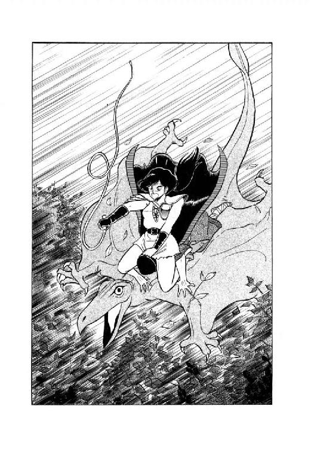
魔獣ヴァルガーの姿は、すでにそこにはなかった。
10
「いやー、しかし迫力あったなー、あの声、あのセリフ。ギルバートの奴、完全に腰ぬかしてましたよ」
そう言って烏猫はころころっと喉を鳴らした。人間態に戻ったルナは、マントを羽織りながら軽く肩をすくめる。
「まーね。でも、城壁が崩れだした時には正直言ってあせったわ。あれだけ苦労したあげくに連中に転落死されたんじゃ、あたし、まるで馬鹿みたいじゃない」
まあ、どうやら魔道士が黄金飛行竜を召喚して、二人とも無事に着地したみたいだけど、とルナは微笑した。その表情を見て、烏猫がちょっと首をかしげる。敵を殺さないように苦労する、という考え方が今ひとつ彼にはわからない。
「ま、しばらくはここでじっとしてましょ。今出てって、ギルバートたちと鉢合わせでもしたら、辻褄あわせるのが厄介だしね」
軽い気持でルナはそう言った。まさか、烏猫がリルを連れてきて、待たせているとは知るわけもない。まして、そのリルが中年戦士と御同席してるなんて、完全に想像力の外だった。
一方、そのリルの方は、苛々と気を揉みながら、それが表情に出ないよう必死に自己制御している。このままこの状態が続いたら、と彼女は内心歯をくいしばった。いっくらあたいでも長くは保たない。
「だいたい、ルナがいけないだ。あたいがこな思いして待ってるってーのに、いつまでたっても姿も見せないで。たかが服着るぐらいで、いったいどだけ待たせる気よ。おまけに宿敵まであたいにおっつけて、いったいどーせいちゅーの、まったくっ！」
あまりもたもたしてると、獣人どもが蛮人を捜しに来ないとも限らない。とはいえ、ルナが姿を現わしたら最後、人間態だろーが魔獣態だろーが、この戦士と大喧嘩が始まるのは必定だ。その時、よほどうまく立回らないと、巻き添えくったらえらい事になる。
そーゆーわけで、味方に来てもらいたいと思いながらも、彼女が来ると同時に行動を起こさにゃならんという緊張感で、少女は内心へとへとになりかかっていた。
そんな彼女の気も知らず、というか、知られたら大変な騒ぎなのだが、とにかく巨漢は悠然と腕を組んで空の雲なぞをながめている。
「先刻、遠雷のような轟きが聞こえたので雲ゆきが変わるかと思ったのだがな。そんな気配はなさそうだ」
少し不思議そうな口調で、巨漢は呟いた。実のところ、遠雷のように聞こえたのは他ならぬ魔獣の咆哮なのだが、バト・ロビスもリルも知らぬが仏で気がつかない。
「少なくとも夜までは、雨になる事はなかろう。......おやっ!?」
戦士の目が鋭く光り、少女もあわてて空を見上げた。烏猫か、それとも魔獣か？
「飛行竜か？ しかし、でかいな。しかも、黄金色とは珍しい」
城壁の方からよたよたよたと降りてくる黄金飛行竜を見やって、バト・ロビスは感心したように呟いた。そのとたん、少女が叫ぶ。
「あっ！ 人間が乗ってるよっ！」
「む？ なるほど。それも、どうやら二人のようだぞ。......だが、このままでは木立ちの中に突っ込むな」
わずかに旋回しながら、黄金飛行竜はどんどん高度を下げている。このままでは木立ちに突っ込んで幹や大枝に激突しかねない。ここまで来てそんな目に会ってたまるか、と女戦士は金切声をあげる。
「ギルバートッ！ しっかり操縦してよっ。このままじゃ木にぶつかるわっ！」
「そんな事言ったって、俺は前が見えん！」
「あ、そうか......」
レイピアは一瞬、自分の狼狽ぶりにあきれかえった。他ならぬ彼女のお尻が彼の頭を押さえ込んでおり、魔道士の顔面は飛行竜の背中にくっついている。これでは操縦のしようがない。とはいうものの、さほど広くもない飛行竜の背中の上、うかつに動けば転がり落ちる。
「仕方ないっ！ 私の指示通り、飛行竜に命令してっ！ まず左に旋回っ！」
「左だな。よしっ」
黄金飛行竜の体が左に傾き、降下の方向が変わる。どうやらうまく行きそうだ。
「うん、いいわ。そこで旋回止めて。あっ、ちょっと行きすぎ。少ーし右へ......わっ、それじゃ右すぎよっ。少しって言ったでしょっ。左へ戻して、左。左よっ、そっちじゃないっ、どこ行く気よ、この馬鹿っ！」
「いてーっ！ そりゃないだろっ、レイピアッ！」
「あ、ごめん、つい......」
思わず魔道士の頭をぽかんと殴ってしまい、女戦士はあわてて謝った。
「で、進路はどーなってんだ？」
「わーっ、左、左、左、左っ！ 全力で急旋回っ！ だめーっ、間に合わないっ、高度が足りないっ、あーっ、ぶつかるーっ！」
きゃーっ、と悲鳴をあげながらもそこはレイピア、手近の大枝に細鞭をとばしてからみつける。手応えは十分だ。
「つかまってっ！」
叫ぶが早いか、ギルバートの頭を両脚ではさみつけ、彼女は飛行竜の背から跳び出す。細鞭に二人分の体重がかかり、大枝がぐいとしなる。そして次の瞬間、黄金飛行竜はばきべきぼきばきと派手に枝や幹をへし折りながら、木立ちの中へ突っ込んだ。
「ふう、助かった......」
大枝からぶら下がった女戦士は、ほっと溜息をついて呟いた。と、下から魔道士がくぐもった声をあげる。
「おい......脚をゆるめてくれっ......呼吸がっ......苦しいっ......」
「あ、ごめん。だけど、ちゃんとつかまってるんでしょうね？」
ギルバートの手が、片方は自分の太腿をしっかと抱え、片方は腰の革帯をつかんでいるのを確かめた上で、レイピアは彼の頭を締めあげる力をゆるめた。
「ふうっ、まいったあ。......あ、お前も御苦労だったな。帰っていいぞ」
枝につっかかってじたばたしていた黄金飛行竜は、魔道士がそう言ったとたん、待ってましたとばかりに姿を消す。と、それとほとんど同時に、地上から野太い声がかかった。
「おーい、大丈夫か？ 生きとるかあ？」
「叔父君さま！」
女戦士の声に、驚きと喜びが半々に混じる。
「おお、レイピアか。するともう一人は誰だ？ まさかカルバドク卿ではあるまい？」
怒鳴り上げるバト・ロビスの声がわずかに笑いを含む。だが、彼の傍に立っている少女の表情は、たちまちさーっと蒼くなった。
「やばい。あの、貿易商とこの女戦士だ。あいつ、あたいとルナが一味だって知ってるもね。こりゃ逃げるっきゃないっ」
内心で呟きながら、リルはじりじりっ、じりじりっ、じりじりっと巨漢から距離をとる。バト・ロビスは、木の上の女戦士と何やらごちゃごちゃ話していて、彼女の動きに気がつかない。とりあえず、斧剣の一撃が届かなさそうな間合いまで離れると、リルはだっとばかりに走りだした。
「どっちへ逃げよう......とにかく、ルナのいる方ね」
城壁際まで走った少女は、そこから北へと登りだした。後ろをちらっ、ちらっとうかがいながら小さい崖をよじのぼったとたん、彼女は向こうから降りてきた巫女と、ばったり鉢合わせしてしまったのである。
「あ─────っ！ 性悪っ！」
「あ──っ!? 鴨ノ嘴っ!?」
従姉妹にあたる二人の美少女は、同時に目をま丸くして絶叫した。獣人たちも、降下してくる黄金飛行竜を見て好奇心から追ってきたのである。リルにとっては、まったく不運としか言いようがない。
「ちいっ！」
一瞬で我にかえったリルは、鋭い舌打ちとともに後方へ跳んだ。体が人間大の縞兎に変化し、短衣のあちこちがぴっ、ぴっと裂ける。
「逃がすかあっ！」
こちらは変身せずに、リオネルが跳びかかった。と、その顔面に強烈な兎蹴りが叩きつけられる。巫女は見事にふっとぶが、縞兎も平衡を失い、ころんと地面にころがった。そこへ起きあがる暇も与えず、甲猪、牙鼠、そしてとどめに砂鰐がどかーんとのしかかる。もはやどーする事もできず、さしもの逃足娘もあっさりとり押さえられてしまった。
「ちくしょーっ、ちくしょーっ、放せーっ、放しやがれーっ、女の子ひとりに大の男が総がかりなて、てめーら人間じゃねーっ！」
「今さら何を言ってやがる。俺たちも獣人、てめーも獣人、どっちにしろ人間じゃねーじゃねーか」
これは変身していない髭男があきれたように答える。そういやそうだった、とリルは溜息をついた。そのとたん獣化が解けて彼女は人間態に戻ったが、この状況ではどっちの姿でもたいして変わりはない。と、髭男が縄を取り出し、彼女をぐるぐる巻きに縛りあげてしまった。
「この縄は獣人用だからな。変身しても切れねえぜ。それからこの短剣は俺のだ。返してもらおう」
こちくしょー、抜け目がねーなーっと少女は内心歯がみをした。こーなってしまっては自力で逃げられる可能性はほとんどない。後は助けを待つだけだ。
「ルナーッ、ルナーッ、助けてよーっ！」
なかばやけっぱちでリルは喚きだす。
「守ってくれるって約束したじゃないかーっ、このまま見捨てたら詐欺だぞーっ、ルナーッ、ルナーッ！」
「うるさいっ！ お黙りっ！」
巫女が杖をリルの喉元につきつけ、一喝した。ここで喧嘩しても始まらないから、リルはとりあえず口をつぐむ。と、リオネルが嬉しそーににっこりと笑った。
「だけど、あれだけ追いかけ回して捕えられなかったお前が、あきらめかけたとたんに自分からこっちの手の中に飛び込んで来るとはね。今から谷へ連行すれば、ちょうどぴったり祭儀に間に合うし。蛇神様のおぼしめしは、本当に私たちの思惑を越えたところで、偉大な力をお見せになるのよ。ああ、何て素晴らしいことでしょう」
勝手放題こきやがって、とリルは無言で巫女をにらみすえたが、有頂天になっているリオネルは全然気がつかない。と、変身を解いた甲猪男が彼女の肩をぽんぽんと叩いた。
「巫女さま。蛇神様をほめ讃えるのはよろしいですがのお。あの怪獣娘は、必ずやリリスを取りかえしに来ますぞう。祭儀までに奪回されてしもうたら、それこそまったくのお、無駄っ、になってしまいますぞう」
「それもそうですね」
リオネルはうなずいて、真剣な表情に戻る。何とかして、祭儀が無事に終わるまで、あの大怪獣を阻止しなくてはならない。
「そうね。勝負はこれからなんだわ」
紫の瞳を妖しく燃えたたせ、獣人族の巫女リム・リオネルは呟いた。
第四章 獣人谷は大騒動
１
「おぬしたち、この娘を捕えようとやっきになっておったのか？」
バト・ロビスが意外そうな表情で訊ねた。が、リオネルはきっぱりとうなずく。
「そうです。そして、あの怪獣女は間違いなくこの女を奪回しようとやって来るでしょう」
「ふむ」
巨漢はにやりと笑って、巫女を見やった。
「うまいな、リオネル。小娘が現われるとなれば、俺が黙っているわけがない。結局はおぬしたちに協力するという事になる」
「ありがとうございます。バト様」
そう言って巫女は深々と頭を下げた。と、そこへ木から降りてきた魔道士が、ひょいと首をつっこむ。
「怪獣女というのは、もしや例の巨大二足直立竜の事ですかな？」
「そうだが、まさかおぬし、また奴に挑戦するつもりではあるまいな」
巨漢がじろっと横目で魔道士をにらむ。
「レイピアに聞いたぞ。どうにか奴のお情けで生命を拾ったそうではないか。死んでからでは遅い。やめろ、やめろ」
「何をおっしゃるかと思えば、高名なバト・ロビス殿らしからぬお言葉ですな」
そう言って、ギルバートは気障ったらしくふっと笑った。はっきり言えば、無謀男が他人に忠告とはおこがましい、という事だが、ここでこの蛮人を怒らせても始まらない。
「いいですか。奴は私を殺さなかったのではなく、殺せなかったのです。戦士殿、あなたなら、倒せる敵を倒さずに見逃しますか？ わざと攻撃をはずして、今のは警告だなどと言いますか？ そんな事は絶対しないでしょう？」
「......それは、そうだな」
べらべらとまくし立てる魔道士の口調にのせられ、巨漢はつい、うなずいた。ギルバートも得たりとばかり大きくうなずく。
「にもかかわらず、奴は私に情をかけるふりをした。これは明らかに、口先だけのはったりです。こけおどしです。はっきり言って、見え透いております。おまけに、奴は自分の事を魔獣ヴァルガーだ、なぞと言いました。脅しあげて手を引かせよーという態度が、まさに見え見えのセリフではありませんか。こんな見え透いたはったりに怖れをなして、尻尾を巻いて逃げ出すほど、このギルバート・エゼン、甘くはないですぞ」
魔道士は昂然と胸を張り、意味もなくマントをばさりとひるがえした。まったく、城壁の上で腰抜かしてた時とはまるで別人ね、と毎度のことながら女戦士は思わず苦笑する。
「そういうわけですから、バト・ロビス殿、私もぜひ、かの自称魔獣ヴァルガーの怪獣めに再戦を挑みたいと思っているのです。どこだかは知りませんが、確実に奴が来る場所があるというなら、ぜひ同道したい。いかがなものでしょうな、この申し出は？」
「......だそうだが、リオネル、どうする？」
魔道士の長広舌にいささかうんざりしたような表情で、巨漢は巫女に訊ねた。しかし、彼女の方は魔道士の偉そーな態度と自信たっぷりの雄弁に、ころりと参ってしまっている。
「ええ、ええ、ぜひお願いいたしますわ。無敵の戦士様に加えて、偉大な魔道士様まで私たちの力になって下さるなんて、ああ、何て私たちは幸福者なのでしょう。これも蛇神様のお恵みに違いありませんわ」
うっとりとした目つきで、彼女は魔道士を見やって、にっこりと笑った。ギルバートの方も、うなずいて笑みを返す。
「まかせておきたまえ、娘御よ。この、偉大な魔道士ギルバート・エゼンの力を以てすれば、自称魔獣なぞは敵ではない。私が召喚する黄金飛行竜軍団が、今度こそ必ずや奴の息の根を止めてくれよう。わは、わは、わははははははは」
「馬鹿笑いはいーけどさ、ギルバート」
女戦士が少し尖った声を出した。
「さっきから言ってる、その魔獣ヴァルガーっていったい何の事？ 説明してくれない？」
「そうだな。俺も聞きたい」
巨漢が重々しくうなずく。すると、魔道士はちょいと肩をすくめ、軽い口調で喋り出した。
「いや、魔道都市の古い伝説でしてね。千年ほど昔、世界はヴァルガーという怖ろしい魔獣に支配されていたというんです。こいつの姿は蛇とも竜とも大蛸とも言われるんですがね、とにかくいかなる武器も魔力も効かない、不可侵の化物なんですよ。性格は残忍非道で邪悪そのもの。ま、言ってみりゃ他の土地で言う暗黒魔王のことと思ってもらえれば、いいでしょう。伝説では聖魔道士ル・ファールが超越魔道を使って、こいつを封じ込めたという事になっています。まあ、伝説ですね」
そう言って、魔道士はにやっと笑った。
「もしも、あの巨大二足直立竜が伝説通りの魔獣であってごらんなさい。おそらく我々は奴と戦おうと思った瞬間に、一人残らず消滅させられてますよ。そのぐらいとんでもない存在なんです、魔獣っていうのは」
「なるほど。ゆえにおぬしは、奴が魔獣と自称するのを単なるはったりと見るわけか」
納得いったように、巨漢はうなずいた。しかし女戦士の心の内には、まだ何かひっかかるものが残っている。
「ギルバートも、叔父君も、自分の基準でものを考えてる。魔獣の力を得たら、敵対する者を破壊し尽くすのが当然だと思ってるわ。だけど、あのルナ公女はどうかしら。彼女は、もしかすると全然違う基準で戦いをやってるのかも知れない」
レイピアは魔道士とは違い、魔獣の警告をはったりだとは思っていない。実際、敵はギルバートの名をちゃんと知っていた。外見で見誤ってはいけない。魔獣はきわめて知的な頭脳を持っている。
「おそらくルナ公女は、殺せないんじゃなくて、あんまり殺したくないんだわ。だけど、場合によっては殺さなきゃならない時もあるわよね」
危ないな、と女戦士は内心呟いた。ギルバートの奴、へんに勘違いしてると本当に生命を落としかねない。
「ギルバート、私も付き合うわ」
女戦士がきっぱりとした口調で言うと、魔道士と巨漢が同時に驚いた表情になった。
「そりゃ有難いけど、レイピア。ミル・ユードの若旦那を放っておいていいのかい？」
「我が君は私が付いてなくたって、何の心配も要らないお方よ」
それに比べて、あんたは危なっかしいったらないじゃない、と女戦士は内心舌打ち混じりに続ける。本当は私だって付き合いたくなんかないけど、大ぼけ魔道士に無謀戦士のとりあわせじゃ、放っておいたら何しでかすかわかったもんじゃない。
「それに、連絡はちゃんとつくもの。そこにいるギルスが、しっかりと伝令役をやってくれるはずだわ。ね、ギルス？」
「うげ......」
兄貴の背後に身を縮めていた髭男は、思わず呻き声を出してしまった。姐御に気付かれる前に身を隠したつもりだったのだが、彼女の方がやはり一枚上手らしい。
「わかりやした、姐御。若旦那にはきちんと報告しときやす。あの、だから、その、どうかそこらへんとこ、よろしくお願いしやすぜ」
頭をかきながら、髭男は何だかよくわからないお願いをする。女戦士も、いまいち彼が何を言いたいのかはっきりしないまま、うんうんとうなずく。
「うん、わかった。とにかく悪いようにはしないわ」
「すいやせん。それじゃあ、あっしはこれで。どもども」
何だか良くわからないままに、髭男は大急ぎでその場を立ち去った。とにかく、もたもたしててもろくな事は起きそうにない。
「それでは、みなさま、出発いたしましょう。今から出かければ、日が暮れる頃には谷に入れるでしょう」
巫女が杖を上げて、一同に呼びかける。すると、目的地はそんなに遠くないのね、と女戦士はかなり傾いている太陽を見上げ、呟いた。
２
「知らない事とはいえ、ずいぶん待たせちゃった事になるわね。彼女に謝まらなくちゃ」
ひょいっと小さな崖を跳び越して降りながら、ルナは軽く肩をすくめる。
「そんな必要ないですよ。あいつはいつだって、勝手放題やってるんだから。たまに待ちぼうけさせるぐらい、どうって事ないと思うけどな」
烏猫がやけに強気に主張した。そのくせ彼は、女主人に先立って飛んで行こうとはせず、彼女の脇をとことこと歩いている。さんざん待たされて激怒してるに違いないリルに、単身で会う気はないらしい。何しろ、ルナがそろそろ行こうかと促してはじめて、彼は、実はリルを待たして来てるんですと白状したのだから、こりゃ故意じゃないったって彼女は聞きやしないだろう。
「ロコ、今みたいな言葉、彼女の前で言ったらえらい事になるわよ。ま、あえてあんた達が喧嘩しようっていうなら、止めないけど」
そう言って、ルナはくすっと笑った。烏猫はぶすっとした口調で答える。
「喧嘩する気はないですよ。勝てないもの。僕はあいつに、一回本気で食料にされかかりましたからねー。癪にさわるけど、正直言っておっかない。これ、ルナ様にだから言うんですけどね」
「わかってる。彼女に喋ったりはしないわよ。......と、このあたりじゃないの？」
ルナは周囲を見回したが、視界の中には誰もいない。
「おかしいな。確かにこの付近だったんですけどね。あいつ、また勝手にうろうろし始めたかな？」
あれほど動くなって言ったのに、とぶつぶつ呟きながら、烏猫は翼を広げてルナの頭ぐらいの高さまで上昇した。
「うーん、いませんね」
「見通しは確かに良くないけど......ちょっと待って。まさか、これは......」
ルナの表情が怖ろしいほど真剣になる。魔獣の超感覚を働かせはじめた証拠だ。
「視覚と聴覚には何も感じない......だけど、この臭いは......いけないっ！ 獣人だわっ！」
「えっ!?」
烏猫がさすがにひきつった声を出す。
「そんな......まさか......」
「間違いないわ。そうでなけりゃ、こんな所で砂鰐の臭いなんかするわけないもの。彼女、あたしたちを待ってるうちに、獣人たちとでくわしちゃったのよっ！」
ルナは、自分に対する腹立ちと情なさを込めて、叩きつけるように叫んだ。守ってあげるなんて言っといて、何てざまよ、これは！ えーいまったくもーっ！ と彼女は奥歯をぎりっと嚙みしめる。もう少しでもこの感情が続いていたら、まず間違いなく魔獣変身していただろう。
だがその時、傍でどすんと大きな落下音がして、ルナははっと我にかえった。見ると、烏猫が翼を広げたまま尻餅をついている。どうやら空中で腰を抜かすという、器用な真似をしたらしい。
「僕は......そんなつもりじゃ......決して......そんな事になるなんて......僕は......」
「こら、恐慌起こしてるんじゃないっ！」
ルナは使い魔の首の後ろをつかんで、ぐいとばかりに吊りあげた。
「後悔役に立たずっていうの、知らないの？ うわごと言ってる暇があったら、救出作戦に協力しなさいっ！」
「はっ、はいっ！」
女主人の見幕に、烏猫はがくがくがくとうなずく。彼女は真剣そのものの表情でひとつうなずきかえし、烏猫を降ろす。
「まずはとにかく、追跡するわよ。あたしについてらっしゃい」
そう言って、ルナは魔獣嗅覚を頼りに獣人たちの後を追いはじめた。烏猫も慌てて、彼女に続こうと羽ばたきをはじめる。と、ルナが厳しい声を出した。
「羽ばたいちゃだめっ。臭いがとんじゃうわ。脚でついてらっしゃい」
「わかりましたっ」
どーやら恐慌から立ち直り、烏猫は素早く翼を畳んで走りだす。だが、ルナの進行速度があまり早くないので、彼もすぐに歩調をゆるめて彼女にあわせる。
「うーん......視覚や聴覚と違って、魔獣嗅覚っていうのは使いづらいわねー」
くんくんと鼻を鳴らしながら、ルナは思わずぼやいてしまった。と、そのとたん、頭の中で肉体が反応する。
「仕方ナイダロ。俺ハモトモト嗅覚ニ頼ル型ジャナインダカラ。並ノ動物ニ比ベレバ多少マシグライノ程度ガ、目イッパイノトコロダナ」
「ふーん。あんたがそー言うんじゃ、仕方ないんでしょうけどね......だけどあんた、他に何か、追跡の助けになるよーな能力、持ってないの？」
頼りない臭いを懸命に追いながら、ルナは、あまりあてにしないで訊ねてみた。すると、肉体がやけに軽い調子で反応する。
「魔獣遠観力トイウノガアルゾ。現在ノ状況ナラ、カナリ役ニ立ツト思ウガ」
「えっ!? そーゆーのが、あるのっ!?」
思わずルナは声に出して叫んだ。烏猫が、びっくりしたように黄金色の目を丸くする。
「ウム。目ヲ閉ジテ、観タイト思ウモノヲ強ク念ジルト、ソレガ置カレテイル状況ガ観エルンダ。地味ダケド、便利ナ能力ダヨ」
「それじゃ、リルのことを念じれば、彼女が捕まってる状況が見えるのねっ！」
これはありがたい、とルナはさっそく目を閉じて一心にリルの姿を念じた。しかし、何の遠観も浮かんでこない。
「......だめみたいね？」
「変ダナ。一回デモ肉眼デ見タモノナラ、何デモ遠観ニ映セルハズナンダガ」
肉体の声が戸惑い気味の調子になる。何だか最近、肉体、やけに感情豊かになってきたな、とルナはふと思った。しかし今はそれどころじゃない。
「モシカスルト、彼女ハ獣化変化シテイルノカモ知レナイナ。アンマリ外見ガ変ワッテシマウト、遠観が定マラナイ事ガアルゾ」
「それなら、縞兎娘の姿を念じてみようか」
呟いて、ルナは再び精神を集中してみた。しかし、やっぱり何も見えてこない。あきらめて目を開けると、烏猫が心配そーにじいっと彼女を見ている。
「あの、ルナ様、どうかなさったんですか？ 頭が痛いとか、吐き気がするとか......」
「違う、違う、心配ないって。ちょっと遠観を使えないか試してみただけよ」
「はあ？」
ますますわけわからん、と烏猫は内心呟いた。ビジョンっていったい、何の事だろ？
「それであの......それは使えたんですか？」
「残念ながらだめみたい。嗅覚に頼るしかなさそうだわ」
軽く眉を寄せ、彼女は首を振った。そのとたん、またも肉体が頭の中に話しかけてくる。
「ドウヤラ、ワカッタゾ。魔獣遠観力ハ、元ノ姿ニ戻ラナイト、使エナインダヨ、キット」
「元の姿？......ああ、肉体の元の姿ね」
ルナにとっては現在の人間態の方が本来の姿のように思えるが、肉体にとっては人間態はとんでもなく異常な状態に違いない。能力が思うように発揮できないのも、当然と言えば当然だろう。
「それじゃ、魔獣変身しない事には遠観力は使えないわけ？」
「ソウダナ。オソラク破壊叫ト同ジダヨ。アレモ、コノ姿ジャ使エナイダロ？」
使われてたまるか、と彼女は内心呟いた。あたしの喉から破壊音波が出てきた日には、うっかり悲鳴もあげられなくなる。もっとも、ルナが悲鳴をあげる状況など、そうそうあるもんじゃないが。
「ま、それはとにかく、ここは考えどころね」
掛け戻し錠がもう一つでも余分にあればなあ、とルナはまたまた痛切に思った。しかし現実には錠剤は泣いても笑ってもあと一つ。ミル・ユードから補充分をもらうまでは、これだけで切り抜けなくてはならない。しかも、彼に会う時には人間態でなくてはならないのだから、いったん魔獣変身したら錠剤をもらう寸前までそのままという事になる。
「正面から乗り込んでいっていいんなら魔獣態でかまわないんだけど、それやったら、また彼女を盾にとられるのがおちだし......やっぱりここで変身はできないわね」
今回は、魔獣遠観力はおあずけにするしかないな、とルナは溜息をついた。彼女の表情がころころと変わるのを見て、また烏猫が心配そうな目つきになる。とルナが、彼の感覚からするとやけに唐突に訊ねかけた。
「ね、ロコ。獣人たちの祭儀っていうのは、いつだっけ？」
「えーっと、魔道都市に着く前の晩に五日のちって言ってましたから、ひの、ふの、三日後ですね」
間違いないよな、と烏猫は確認するように呟く。もしここで日数を間違えて救出が間に合わなかったりしたら、それこそ大変だ。
「三日後か。どっちにしろ補充の錠剤は間に合わないわけよね」
薬種店主が錠剤を造りあげるのは四日後、獣人の祭儀の翌日になる。できればそれまで変身しないで、リルを救出してしまえれば言う事はないのだが。
「......そうは問屋がおろさない、でしょうね」
自戒をこめて小さく呟き、ルナは再び嗅跡を追いはじめた。
３
「おい、その谷とやらはまだ遠いのかあ？」
魔道士がいささか情けない声で訊ねた。すでに太陽は山際に沈み、空もみるみるうちに暗くなってくる。松明を灯さないと山道は危ないな、と女戦士も思いはじめたところだった。
「もう間もなくですわ。そろそろ、谷の入り口にある篝火が見えてくると思いますけど」
先頭に立っている巫女が振りかえって答える。だが、歩調はまったく変わらない。魔道士はもちろん、バト・ロビスやレイピアも歩きにくくて閉口している山道を、彼女をはじめとする獣人たちは平地同然にひょいひょいと歩いてゆく。
「あ、見えました。あそこが谷の入り口なんです」
「えっ!? あそこまで歩くのかあ!?」
峰をひとつ隔てた向こうに見える小さな炎を示され、ギルバートはがっくりと首を垂れる。無理もないわ、と女戦士は小さく苦笑した。魔道士にしては、彼は足腰が強い方のようだが、しょせん戦士や女戦士、獣人たちとは比べものにならない。正直な話、彼とリルがいなければ、一行は日没前に獣人谷に着いていただろう。
実際、リルは歩く力はとにかく歩く気がなかったので、獣人たちはさんざん彼女に手こずらされた。脅したりすかしたり言い争ったり、さんざんやらかした挙句の果てに、結局彼女は砂鰐男の肩に担がれている。もちろんぐるぐる巻きに縛られたままだから、ほとんど小荷物扱いだ。しかも、あんまりぎゃーぎゃー騒いだものだから、御丁寧に革紐を口にかまされてしまっている。これではいくら彼女でも、文字通り手も足も口も出しようがない。
「もう一息だぞ。がんばれ、ギルバート」
見るからに意気消沈している魔道士に、巨漢が声をかけた。もちろん、こちらには疲労のかけらも見あたらない。
「もしもどうしても動けなくなったら、俺が担いで行ってやる。心配するな」
「はあ......」
それはいくら何でもみっともないよ、と魔道士は内心おちこみ気分になって呟いた。巨漢は好意で言ってんだろうけど、気取屋の彼にしてみれば、そんな無様な姿を見せるぐらいなら置いてきぼり食ったほうがまだましに思える。とはいえ、本当につらくなったら自分でも何を口走るかわかったもんじゃない。
と、女戦士がすっと彼の脇に寄って、囁いた。
「ちょっと、あんた足元がよたついてるわよ。肩を貸してあげようか？」
「......申し出には感謝するが、私の自尊心がまだ許してくれないようだ」
ギルバートは無理矢理気取った表情をつくり、囁きかえす。おっ、けっこう瘠我慢するじゃないの、とレイピアは小さく笑った。
「それじゃ、自尊心に許してもらえる方法をやってみたら？ そろそろ召喚の力、戻ってきてるんじゃないの？」
「あ、そうか。忘れてた」
魔道士は思わず表情をほころばせ、懐から巻物を取り出す。ところが、周囲がかなり暗くなっているので、呪文の綴りが読みとれない。
「こりゃ弱ったな......」
「松明、灯けようか」
レイピアがそう言った時、先頭を行く巫女の杖がぼーっと光りはじめた。
「ほう、これは便利だな」
バト・ロビスが感心した声をだす。巫女は誇らしげににっこり笑った。
「これは蛇神様の聖なる光です。私たちは夜目が効くので、あまり物を照らすのには使いませんけど、巫女として訓練された者なら、いつでもこの杖を光らせることが......あら？ 魔道士さま？」
「いやあ、ちょっと失礼」
先刻まで息も絶え絶えという状態だった魔道士が、へらへら笑いながら杖の脇に出てきたので、巫女も戦士も意外そうな表情になる。
「どうした？ いよいよ駄目か？」
「とんでもない。ちょっと魔道の呪文を唱えようと思って、明かりを借りようと......」
「魔道をお使いになるんですか!?」
リオネルが、かなり大きな声で叫んだ。それを聞きつけ、たちまち後続の獣人たちがどやどやと集まってくる。
「何だ何だ？」
「魔道士か何かやらかすらしい。これは見物たそ」
牙鼠男が期待に満ちた口調で言う。
「おお、それは面白い。大門で大将とやり合った魔道士より派手な魔術が見られるかもしれんのお」
「そりゃそうだろ。仮にもあの怪獣娘と喧嘩しようっていう大魔道士様だ。ちゃちな魔術なんか使ったら笑い者だよ」
書物を山のように背負った土竜男が、いささか辛辣な調子で言った。その脇では、少女を担いだ砂鰐男が眼鏡の奥の瞳を期待に輝かせている。
「早く始めないかな。わくわく」
「ううっ、これじゃまるで見世物じゃないか」
好奇心に満ち満ちた獣人たちの視線を一身に受けてしまい、さしものギルバートも一瞬たじろいだ。と、その耳元で、レイピアが笑いを含んだ声で囁く。
「ほら、もっと胸を張って。ここが格好のつけ所じゃないの。一発びしりと決めてやりなさいよ」
「そ、それもそうだな。よおし」
本来、やたらめったら調子に乗りやすい性格のギルバートだ。芝居気たっぷりに巻物を広げると、くわっと目をむいて獣人たちを見わたす。
「それでは御覧に入れるとしよう。魔道都市に古えより伝えられる秘術中の秘術、黄金飛行竜召喚の魔術を！」
「おおーっ！」
獣人たちに加え、バト・ロビスまで一緒になってどよめく。杖の光に巻物をかざし、魔道士は声に出して朗々と呪文を唱えはじめた。
「こりゃ、しくじったら反動がひどいぞ......」
けしかけといて今さら何だが、女戦士は不安を覚えて呟く。これだけ盛りあげといて飛行竜が出なかったら、獣人たちはぶーたれるだろうし、魔道士はおちこみまくるだろう。立ち直らせるのが、また一苦労だな、と彼女は思った。
と、その時、呪文が終わり、同時に空間がずわっと裂ける。レイピアの心配は取り越し苦労だったようで、見事、黄金飛行竜が異空間からその雄姿を現わした。
「おお──っ！」
「これは凄い。これは大技だよ」
「いよっ、ギルバートっ、天下一っ！」
獣人たちから一斉に、歓声と拍手があがる。うむ、受けた、と魔道士はふっと笑った。これで、後は黄金飛行竜に乗り悠々と獣人谷に向かえばいい。
と、口々にわいわい言っていた獣人たちの歓声が、一つの声にまとまりだしている。魔道士が巻物を閉じるより早く、彼らは拍手にあわせて口をそろえて叫びはじめた。
「もう一回！ もう一回！ もう一回！」
「あ、あのね......」
見世物じゃないんだけどなー、とギルバートは一瞬困惑の表情になる。しかし、これだけ盛りあがってる観衆を前に、もうおしまいだよと突っぱねるのも芸のない話だ。
「そーだなあ、レイピアを乗せてやる分もあるし、もう一頭ぐらい何とか召喚できるだろう」
呟くと、魔道士は獣人たちの方を向いて、ふっふっふっと笑いながら押さえるように片手を動かす。そして、観衆が静まったところで、もう片方の手に持った巻物をぶわっと広げる。わーっ、と大受けの歓声があがる中で、魔道士は再び朗々と呪文を唱えはじめた。
４
「おや？ 何だ、あれは？」
すでにとっぷりと暮れた空に黄金色に輝く点を見つけ、獣人族四天王の筆頭ラドリ・ティロは太い眉をぐっと寄せた。
「飛行竜か？ 一、二、三......四頭いるな。こちらに来るぞ......やっ、人間が乗っておる！」
ティロの細い目がかっと見開かれる。
「あれは、リオネル様ではないかっ！」
四頭の黄金飛行竜の先頭にいる一頭の背に、リム・リオネルは杖を持って立っていた。本来、飛行竜の背は人が乗るようにできていないから、そこに立ったままでいるのはかなり難しい。現に、他の三頭に乗っている連中は、皆、四つん這いに伏せるか、せいぜい腰をおとして膝をつくぐらいの姿勢をとっている。
「あの娘も、けっこう見栄っぱりね」
まともに風圧を受けながらも何とか立った姿を崩すまいと懸命な巫女を見やって、女戦士は小さく呟いた。もっとも、見栄の一言で彼女の突っ張りを片付けてしまうのは、いささか酷かも知れない。いくら祭司の血筋とはいっても、いや、むしろそれだけに、配下たちの前で弱さを見せる訳にはいかない、とこの乙女は思い込んでいる。まして今、彼女は使命を果たして故郷に凱旋するところだ。ここは無理にでも、しゃんとしていなくてはならない。
一方、全然しゃんとしてない人物もいた。最後尾の飛行竜の上でへたりこんでいる魔道士である。〝もう一回！〟の連呼についつい調子に乗り、結局たてつづけに四頭の黄金飛行竜を召喚してしまった。そしてさすがにへたばった所へ、召喚した飛行竜を獣人谷まで操縦する仕事が加わり、もはや心身ともに崩壊寸前になっている。
「......こんな事なら、戦士におぶってもらえば良かった......」
飛行竜の背にべたっとだらしなくへたりこんで、魔道士は力無く呟いた。しかし、いつまでもそーしている訳にもいかない。黄金飛行竜を無事に着地させるため、彼は全身の力をこめて上体を起こした。
「降りるみたいね......」
地上の篝火がどんどん大きくなってくるのを見て、リルは言葉にせずに呟く。もっとも革紐をかまされていては、言葉にしようがない。
十分に高度が下がったら逃げてみようか、と彼女は一瞬考えた。リルの脇には牙鼠男が乗っていて、彼女を縛った縄尻を持ってはいるが、小男一人なら蹴とばして振り払えない事もない。
「だけど、どのみち逃げきれないな......」
地上に跳び降りたところで西も東もわからないし、おまけに目の前は獣人谷だ。ぐるぐる巻きに縛られた状態で、長いこと逃げられるはずがない。それどころか、下手をすると本物の野獣にでくわして喰われてしまう可能性だってある。
「......ルナが来てくれるまで、じたばたしない方がいいかもね......」
あのお人好しの公女は、絶対にあたいを見捨てやしない、と少女は確信をこめて呟いた。ここは、彼女を信じて我慢した方がいい。
と、その時、黄金飛行竜ががくんと高度をおとした。どうやら着陸体勢に入ったらしい。
まず巫女、続いて牙鼠男とリムが乗った飛行竜が篝火の脇を通って谷の中へすべり込む。女戦士の飛行竜は、魔道士自身の飛行竜とほとんど並んで着地した。
「あー、しんど。これなら歩いた方が良かったなあ」
「自業自得よ。まったく調子に乗って馬鹿やるんだから」
小言を言いながらレイピアはひらりと飛行竜から跳び降り、へばりきっている魔道士に手を貸す。向こうでは、巫女がゆっくりと地上に降り立ち、牙鼠男がリルに何やら文句を言いながら引き降ろそうとしている。と、そこへラドリ・ティロ以下、数人の獣人たちが走り寄った。
「リオネル様、任務、御苦労様であります。して、御首尾の方は？」
「リム・リリスは捕えました。とりあえずはね。今、そこにヘムルが引っ立てて来ているのが、そうよ」
むしろ淡々とした口調で、巫女は答える。と、ティロの満面が一気に笑み崩れた。
「それはおめでとうございます。リオネル様。族長様も、さぞやお喜びになるでありましょう。さっそく御報告を......」
「お父様には私から話します。それより、警戒を厳重にして、リリスを奪回しようとしている敵がいますからね」
そう言って、巫女は後ろを振り回いた。牙鼠男が大汗かきながら、少女を引っ立ててくる。その向こうには、魔道士が女戦士に肩で支えられ、よたよた歩いて来るのが見えた。
「詳しい事はヘムルから聞きなさい。そのうち、ブルクやニグスたちも着くはずだし。それから、あちらの御二人にはくれぐれも粗相のないように、おもてなしするのよ」
今いち状況がつかめていないティロに一方的にそう命じると、巫女は牙鼠男から縄の端を受け取る。刺すような視線でにらむ少女を引っ立てて、彼女は谷の中に入っていった。
「ここが、獣人谷か......」
いくらにらんでも巫女が気にも止めないので、リルは方針を変え、周囲の状況をうかがう事にした。谷の両側はかなり切り立った崖で、岩穴や亀裂が無数に見うけられる。その崖に沿って、ほとんど岩穴と見分けのつかないような粗い石積みの家が、ごちゃごちゃとかたまって建てられていた。もし彼女にルナぐらいの戦術眼があったら、これはなかなか攻めにくい地形だな、と見ただろう。
やがて、前方にかなり大きな建物が現われた。やはり粗い石積みだが、他の家と違って、谷のまん中を塞ぐように堂々たる構えを見せている。ここまで谷の中でほとんど人影を見かけなかったが、この建物の周囲にはかなりの数の獣人が集まり、いくつもの焚を燃やしていた。彼らは巫女の姿を見ると、一様に立って深々と頭を下げる。彼女はそれに対してにこにこと笑顔を返し、時々、杖を持った手を軽く振ったりする。
「ふんっ、ごたいそーなもね。本性は鴨ノ嘴のくせしてさっ」
いかにも統治者然として振るまうリオネルになぜか無性に腹が立ち、リルは内心で毒づいた。
と、その時、建物の中から少女が一人走り出て来る。年齢はリルと同じぐらいだろうか、巫女によく似た顔立ちだが、ずっと大人しそうな感じだ。漆黒の髪を、きれいに短く切りそろえている。リオネルの姿を見るなり、少女は叫んだ。
「お姉さま！」
「エルザ！ 見て、リリスを捕まえて来たわよ！」
巫女が誇らしげに叫びかえす。
「これでおまえは助かるわ！ 生贄にならなくて済むのよ！」
「ああ、お姉さまあ......」
少女が姉にしがみつき、べそべそと泣きだした。巫女は枚を脇に抱えなおし、優しく妹の頭を撫でる。
「なーるほど。あたいを捕まえそこなったら、このエルザとかゆー少女が生贄になるはずだっただな。それでこの巫女、やたらに気合入れてあたいの事追い回してただ」
姉妹たぁ言っても、こいつら間違いなくできてやがるな、とリルは内心呟いた。姉貴、兼愛人の尽力で生贄の運命をまぬがれ、少女は感きわまってぴーぴー泣いている。巫女は微笑して、妹のまぶたに接吻をする。なかなか心暖まる光景ではあるが、もちろんリルはちーとも感動しなかった。
「ふんっ、ふんっ、ふんっだっ。今に見てろっ。あたいには獣人娘なぞ比べもんにならない、頼もしー愛人がいるだから。ルナがあたいを助け出したら、そのお大事の妹とやらを泣く泣く生贄にすりゃいーんだ。ざまあ見やがれ、この鴨ノ嘴っ！」
リルは胸の中で、さんざん目の前の従姉妹たちを罵りまくる。その口が封じられていたのは、彼女自身にとっても幸いだったかも知れない。
５
「お父様、もっとお喜びになるかと思ったのに」
リム・エルザは細い眉を不満げに寄せて、小声で呟いた。巫女は少し翳のある微笑をうかべ、ちょっとふくれている同母妹の頰を撫でる。
「まあね。お父様にとっては、私もお前も二十二人の娘たちの一人っていうだけだもの。誰が生贄になっても、あんまり気にならないんじゃないかな」
「そんなあ......」
少女はすねたような声をだす。だけどこれは、間違いのない事よ、とリオネルは内心で呟く。
先刻、彼女は実の父である獣人族族長、リム・ドゥドルに事態の一部始終を報告した。十四人の妻と八人の息子、二十二人の娘をもつ精力家の族長は、リリスを捕えてきた事は一応ほめてくれた。しかし彼女を奪回しようと巨大怪獣が襲ってくる可能性があり、それに対抗するため、戦士、女戦士、魔道士の三人を谷に迎えたと彼女が話すと、目に見えて難しい表情になり、リオネルに退出を命じたのである。で、彼女は妹を連れて、さっさと巫女部屋に引き揚げてしまった。
「とにかくお父様は、無事に祭儀を済ませたいのよ。そこへ私が、リリスといっしょに山ほどの厄介事を持って帰ってきちゃったでしょ。きっと内心では頭抱えてると思うわ」
そう言って、リオネルはくすっと笑う。
「だけどね。お父様が頭抱えようがどうしようが、リリスを奪回されない限りおまえは無事よ。お父様にはごろごろ娘がいるけど、私の同母妹はおまえ一人だもの。死なせやしないわ、絶対に」
「お姉さま......」
少女の、姉よりやや濃い深紫の瞳がうるうると潤む。巫女はにっこりと微笑むと、妹の唇に唇を重ねた。明朝になれば、姉は祭儀の準備のため蛇神様の洞穴へお籠りしなくてはならなくなる。姉妹が互いの愛情を確かめあえるのは、とりあえず今夜だけだ。
「あ、あ、お姉さまあ、も、もっとお......」
「あわてないで。朝までは、まだ時間があるわ」
するりと巫女の服を脱いだリオネルは、続いて妹の服も脱がせてやる。さすがリルの従姉妹たちだけあって、やる事が素早く、手際が良い。そのまま二人は、もつれるように寝台に倒れ込んだ。
「あっ、ああん、ああ、お姉さまあ......」
「大丈夫、大丈夫よ。私に任せて」
優しく囁きながら、姉は余裕をもって妹を愛撫する。息を荒くしながら、少女も巧みに姉の裸体に指を這わせる。と、その指先がきわどい場所まで来て、ぴたっと止まった。
「お、お姉さま、こ、これは......」
信じられない、という表情でエルザは絶句する。と、リオネルが、他人には絶対に見せない、とっておきの笑顔で囁いた。
「そう。私、人間の男と寝たの。その男は、南方の蛮人でもの凄い戦士なのよ。今頃は、もうこの谷に来ているはずだわ。あの男なら、リリスを奪回されるようなヘマはしない。必ず、おまえを守ってくれるはずだわ」
実際の話とはちょっと違うけど、とにかくバト・ロビス様が凄い戦士であることは間違いないもの、とリオネルは内心呟いた。と、少女の瞳が、またもじわーんと涙に濡れる。
「ごめんなさい。ごめんなさい、お姉さま。あたしのために、あたしなんかのために、男に身を投げだしたなんて。ごめんなさーい！」
「馬鹿ねえ。気にしないで、そんな事」
妹の涙をぺろっと舌でぬぐってやり、リオネルは笑って片目をつぶってみせた。
「寝たって言っても、人間の男だもの。子供をはらむ心配もないしね。そんなもん、生きた張型だと思えば、何てことないじゃない」
バト様、ごめんなさいね、と内心苦笑まじりに呟きながら、リオネルは優しく妹の耳たぶを嚙んだ。あふうっ、と少女が熱い息を洩らす。
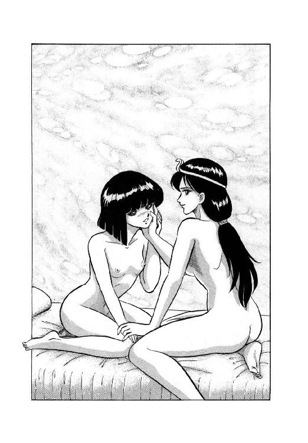
その頃、そんなもんに喩えられているとは露知らず、獣人谷に到着したバト・ロビスは、さっそく魔獣戦士迎撃の布陣にとりかかっていた。
「奴が怪獣の姿で来るか、小娘の姿で来るか、それはわからん。しかし、奴の目的が人質の奪回である以上、人間の姿で忍び込んでくると考える方が自然だ」
そう言って、元帝国軍部隊長は篝火の周囲に坐っている面々を見回した。と、頭髪を短く刈りあげた長身の男が、さっと手を挙げる。
「戦士殿、なぜそうお考えになるのでありますか？ 自分としましては、怪獣の姿で来襲される方がよほど脅威と感じますが」
「相手がおぬしだけなら、奴もそう出るかも知れん」
バト・ロビスはその男、ラドリ・ティロに目を向け、ゆっくりと言葉を続けた。
「即ち、怪獣の姿で正面から突っ込み、恐慌を誘って人質を奪う戦術だ。しかし、こちらには、いったい何が襲ってくるのか周知している者が多い。今さら奴が来たとて、全員が恐慌を起こす事はなかろう。必ずや、誰かが人質を盾にとって奴の意図をくじくはずだ」
「港町で、ギルスが使った手段ですね」
砂鰐男が眼鏡をずり上げながら、口を入れる。戦士は大きくうなずいた。
「そうだな。その時は人質に逆襲されたそうだが、今度はそういう間抜けな事はないだろう。とはいえ、そいつは奴にもわかっているはずだ。あの小娘は、あれでなかなか頭が切れる。我々が人質を盾にしようと待ち構えている事は、すでに計算しているに違いない」
「確かに、その通りですわ」
女戦士が、思わず同意の声を出す。確かに、バト・ロビスの判断は彼女にも十分納得できる。むしろ意外なのは、この無謀戦士として知られる巨漢が、ここまでの戦術眼を持っていた事だ。
「そうよねー。怪力や斧剣の技だけじゃ、上級指揮官にはなれないものね。これは少し、認識を改めなくちゃ」
レイピアが内心で呟いている間にも、バト・ロビスの作戦説明は続く。
「そこでだ。奴のとる作戦としては、秘かにこの谷に潜入し、とにかく人質を奪回してしまうというのが最も有力な手段だ。何しろ奴には脱出しそこねる心配は、ほとんどないからな。人質のいる場所までもぐり込めれば、その場で化けてしまえばいい」
「なるほど、了解いたしました。そうすると我が方の対抗策としては、リリスの周囲に水も洩らさぬ防衛網を敷く事になるわけでありますな、戦士殿」
ラドリ・ティロがどうです、と言わんばかりの表情で訊ねる。さすが四天王筆頭、けっして鈍くはないな、とバト・ロビスは思った。
「うむ。確かに基本的には、おぬしの言う通りだ。しかし、奴は人間の姿をしておっても十分に手強い。うかつに防御を固めては、奴にどこを攻めれば良いのか教えてやるような事になる。むしろ人質の居所は、ほとんど誰も知らん方がいい。そして、要点に歩哨を置いて、互いの連絡を密接にとれば、この谷全体が防御網になる。......と、絵図面はまだ来ないのか？」
「ファルルを取りに行かせておりますが、もうそろそろ......ああ、来たようであります」
バト・ロビスが振りかえると、小柄な少女がにこにこ笑いながら巻いた図面を差し出す。
「おお、済まんな」
「みゃあ」
少女は猫のような声を出し、ティロの隣にちょこんと坐った。巨漢は図面を広げ、少しの間じっと見すえていたが、やがて大きくうなずく。
「歩哨を立てる場所は、全部で十六。各二名ずつを配置し、その他に巡回歩哨が四組、これも各二名。人質とは無関係に本部を設定し、ここに連絡要員を八名だ。これで、小娘がどこから来ようが、必ず事前に察知できる。それに加えてギルバートを特務要員として本部に配置すれば、即座に邀撃可能だな。うむ、完璧である」
ちょい、ちょい、ちょいと絵図面に印をつけながら、バト・ロビスは満足そうに何度もうなずいた。そして、目をあげて獣人たちを見回す。
「そういうわけだ。獣人の戦士を四十八名、俺の指揮下に入れてもらおう。それで必ず、あの小娘に一泡吹かせてやれるぞ」
「はっ、了解いたしました、戦士殿っ！」
ティロがさっと立ちあがって、沿海諸国風に額に指先をあてて敬礼した。その姿が、実にさまになっている。巨漢は、満足げにもう一回うなずいた。
６
「何い!? 人員が出せん、だとおっ!?」
獣人谷に到着した翌日の早朝、バト・ロビスの雷鳴のような怒鳴り声が、三人の外来者用にあてがわれた建物に響きわたった。
「馬鹿なっ。今この時にも小娘はこの谷に入り込んでいるかも知れんと言うのにっ！」
「はい。自分もそのように族長様に申し上げたのでありますが、祭儀の準備に人手が要るため、とても四十八名もの人員は出せないと、そう仰せになるばかりなのでありますっ」
ラドリ・ティロは沈痛な表情でそう報告する。この男に当たったところで仕方あるまい、と戦士は少し声をおとした。
「では、何人なら出してもらえるのだ？」
「はあ、それが......自分を含めて四人であります」
「四人だとおっ！」
バト・ロビスの声の調子と音量が、再びどかんとはね上がる。ティロはあわてて、早口で言った。
「四人というのは、つまり、獣人族四天王の事であります。自分を含め四名、戦士としての実力は一族の中でも最高級の強者でありますっ！」
「ふむ、そうか」
それならばむしろ、人質にぴったりくっついて、強襲に備えた方がいいかも知れんな、とバト・ロビスは思いかえした。
「で、人質はどこに置く事になった？」
「はっ。その点に関しては、戦士殿の御意見が取り入れられたようであります。族長様は四天王筆頭の自分にも、リリスの居場所を明かされませんでしたっ！」
びしっ、と敬礼するティロを見やって、バト・ロビスは思わず低く唸る。どうやら、こいつと話をしていても、らちはあかないようだ。
「すまんが、リオネルを呼んでもらえんか。彼女に話がある」
「残念ながら、リオネル様はすでに祭儀のために蛇神様の洞穴にお籠りになっているのであります。お籠りの間は、たとえ族長様でも巫女様には会えないのであります。まして祭司族以外の者は、洞穴に近づく事さえ許されていないのであるのであります」
「......わかった。とにかく、その四天王とやらに召集をかけてくれ」
もうこうなったら、やれる事をやるしかない。バト・ロビスがそう言うと、ティロはまたびしっ、と敬礼した。
「実は、すでに二名は呼んであるのであります。表におりますので、どうぞ、こちらへ」
巨漢とティロは連れ立って表へ出た。そこには二人の獣人が立っている。バト・ロビスは思わず眉を寄せた。
「この二人が四天王なのか」
「はっ。ドルアーダ・ヴェグは遠征に同行しましたので御存知の事と思います。七色長舌蜥蜴に変身して姿を隠し、長い舌の一撃で敵の武器をからめ取るのであります！」
ティロは力みかえって説明するが、当のヴェグは例によって、焦点の合わない視線を虚空にさまよわせている。能力はとにかく、こいつは使い物にならんのじゃないか、と戦士は思った。と、男の口から笑い声のようなものが洩れる。
「えへ、えへえへ、えへへへへ、えへへ」
「何だ、これは」
まったく表情を変えず、ただうつろな声を出す男を見やり、バト・ロビスはいささか腹立たしげな声でティロに訊ねた。
「さあ...ヴェグの感情表現は、自分にも良くわからないのであります。ま、それはとにかく、こちらが、リア・ファルルであります」
「昨夜の小娘だな」
巨漢はじろりと少女を見おろした。金色に黒い細縞の入った髪、紺碧の瞳、愛想の良いにこにこ笑い、どっからどー見ても戦士とは思えない。
「外見に誤魔化されてはいけないのであります。ファルルは木登振子豹に変身し、一撃、よく山羆をも倒す力を持つのであります！」
「この娘がか？」
バト・ロビスは上体を屈め、少女の顔をじっと見た。と、彼女がにこにこっと笑い、異様に鋭い犬歯がちらっとのぞく。なんとなく納得して、巨漢は上体を起こした。
「それで、あと一人はどこにいる」
「はっ。残りの一人は、やはり遠征に参加した、ルネ・ニグスなのであります」
「ニグス...ああ、襟巻土竜男だな」
確か、奴なら昨夜いっしょに谷に着いたはずだが、と戦士は記憶をたどってみる。そう言えば、作戦説明の時にもいなかったようだ。
「奴は、なぜ来ないのだ？」
「それが、昨夜彼は大量の書物を抱えて自宅に閉じこもり、それっきりいくら呼んでも反応しないのであります。これはニグスのお籠りと呼ばれる現象でありまして、巫女様のお籠りと同じく、彼が書物を読みきって出て来るまでは、誰も会うことができないのであります」
「馬鹿な！」
巨漢は腹立たしげに吠える。
「そこまで付き合っておれんわい。引っぱり出して任務に就かせてくれる。奴はどこだ」
「はっ。こちらであります」
ティロが案内した土竜男の家というのは、実に奇妙な代物だった。出入口もなければ窓もない、要するに石積みの箱なのである。
「この中に籠っておるのか？」
「はっ。この中を見た者は誰もいないのでありますが、おそらく内壁に光苔を張って照明とし、床から地下を掘って出入りしているものと思われるのであります」
「ふん」
巨漢は不機嫌そうに鼻を鳴らし、つかつかと石壁ぎわまで進んだ。そしてぐっと胸を張るや、雷鳴のような声で叫ぶ。
「こらっ！ ニグスッ！ 即刻出てこいっ！ さもなくば、壁をぶち破って火をかけてくれるぞっ！」
「わーっ、待てっ、待てっ、待ってくれ！」
壁の向こうから土竜男の悲鳴のような叫びがあがったが、無謀戦士はためらいなく斧剣を抜き、ぐわーんと壁に叩きつける。魔道で造られた一枚岩をも砕く猛撃に、石積みの壁はがらがらと崩れ、大穴が開く。それと同時に地面がぼこっと盛りあがり、土竜の姿のニグスが頭を出す。
「あーっ、一瞬おそかったか」
「火をかけんかっただけ、感謝せい」
怨めしそーな目付きで崩れた壁を見やる土竜男に、戦士は無雑作に言い放った。かけられてたまるか、と彼は口の中で呟いたが、それ以上はぶつくさ言わずに地中から這い出る。
「よし、それではさっそくおぬしらの配置を決める」
やっとそろった獣人族四天王を見回し、バト・ロビスは谷の絵図面を広げた。
「ティロはここ。ヴェグはこちら。ファルルはこの位置。ニグスはこっちだ。不審な者を見つけたら即座に誰何、場合によっては攻撃してもよろしい。但し深追いはせず、機を見て俺に報告するのだ。俺は谷の入口、篝火台に立つ。以上、ただちに配置につけえっ！」
完全に帝国軍部隊長ののりに戻り、巨漢は四人の獣人たちに号令する。その追力に押されるように、四天王たちはそれぞれの配置へ向かった。しかしもちろん、配置につきながらも、土竜男はぶつぶつ文句を言っている。
「まったくあの大将は、こうと決めたら問答無用だからな。先刻だって俺がもたついてたら、きっと本気で火い付けてたぞ。やっぱり昨夜のうちに、書物を全部岩穴の秘密書庫に移しとくべきだったな。とは言え、どうやら火は付けられずに済んだし、読みかけの書物を隠し持ってきたし。ま、いいか」
７
「ここが、地誌書に出てきた獣人谷というわけね」
いささかむずむずする鼻をこすりながら、ルナは小声で呟いた。昨夜一晩中、魔獣嗅覚を使って獣人たちを追跡してきたため、どうも鼻の具合がおかしい。
「突入するんですか、ルナ様？」
烏猫が緊張した声で訊ねる。だが、ルナは小さく首を振った。
「突入はしない。潜入するわ。真っ正面から突入してったら、またリルを盾にとられるのがおちだもの」
港町での経験を、彼女は忘れてはいない。あの時リルを助けられたのは、正直言って単なる幸運だった。彼女が魔獣である事を知っている奴には、魔獣変身したところで威嚇にはならない。そして今、獣人谷の入口に仁王立ちになっている奴こそは、威嚇の効かない相手の筆頭だろう。
「ま、少なくともあの中年戦士が谷の入口にいるって事は、他の場所にはいないって事よね」
篝火台の横で腕組みをし、中天をにらんでいるバト・ロビスを魔獣視力で見ながら、ルナは小さく呟いた。
「おいで、ロコ。横手から山越えして、谷に入るわよ」
烏猫をうながして、ルナはそっと獣人谷の正面から横手へと進路を変えた。しかし、そうなると、必然的に道なき道を踏み分けて進む事になる。疲れ知らずで山育ちのルナはとにかく、烏猫にとってはいささかきつい事態になった。畳んだ翼が、やたらに蔓や小枝にひっかかり、歩きにくくて仕方ない。
かと言って飛ぶのは論外だ。夜ならとにかく、日中の烏猫はやたらに目立つ。獣人連中は彼の事を知っているから、発見されたら一巻の終わりだ。
「大丈夫？ 抱いてってあげようか？」
「いえ、とんでもない」
足元をよろめかせながらも、烏猫はきっぱり言った。こんな事になったのは、そもそも僕が間抜けだったからだもの、この程度で音をあげるわけにはいかない。
「無理しないでよ。昨日いーかげんばててた上に、昨夜全然寝てないじゃない。肝心の時にコケたりされたら、かえって困るわ」
「大丈夫ですっ。精神力でカバーしますっ」
烏猫は懸命に声を張った。意地になってる部分もあるが、むしろ、ここで気を抜いたらそのまま総崩れになってへたばりそうな気がする。そうなったら、おそらく当分動けまい。
「仕方ないわね」
苦笑しながら、ルナは先に立って道を開いてやる。この時彼女はごく自然に、できるだけ歩きやすい進路をとっていた。
「と、この藪を抜けると、森になるわ。下生えが少ないから、楽よ」
そう言って、ルナは藪をかきわけた。烏猫がうまく足元にもぐり込んだところで、前進して森に入る。と、その瞬間、凄まじい殺気がルナを襲った。
「フ──ッ！」
「うわっ！」
反射的に、ルナは宙に跳んだ。その体を下からすくい上げるように、木登振子豹の鋭い爪が襲う。並の人間ではとうてい避けられない攻撃だが、もちろんルナは並とはほど遠い。
「はあっ！」
気合一閃、彼女は傍の木の幹を蹴りつけ、木登振子豹が尻尾をからませている大枝めがけて跳んだ。森林の悪魔とまで言われるこの豹は、大枝の上で獲物が通るのを待ち伏せ、好機と見るや尻尾で枝からぶらさがり、全体重を乗せた強烈な一撃をくらわせる。その攻撃は冗談抜きに山羆をも倒すが、一撃必殺だけにかわされると後が続かない。まして、上位の位置をとられては、もはやどうしようもなくなる。
相手に上へ回られたと見て、豹はあわてて尻尾を解いて地上へ降りた。その瞬間、ルナがすかさず枝の上から飛びかかる。あっと言う間に立場が逆転し、ルナの尻尾が豹の頭をしたたかにひっぱたいた。
「ミーッ、ミーッ、みーっ！」
悲鳴をあげて横転した豹が、たちまち小柄な少女に変わる。やっぱり獣人だったか、とルナは逃げかかる少女を強引に抱きとめた。
「あんた、獣人の一族ねっ！」
「ふにゃーっ、にゃーっ、ふぎゃぎゃーっ」
「祭儀の生贄にされる女の子は、どこに捕えられているのっ？」
「ふぎゃーっ、ふにゃーっ、ふみーっ」
「こらっ！ まともに答えなさいよっ！」
「ふにゃにゃーっ！ ぎゃーっ、ふぎゃーっ」
少女はにゃーにゃー喚きながら、猛烈に暴れる。何だか人間態になっても、あんまり豹の時と変わっていない。
「こりゃあかんな。ね、ロコ、あんたこの娘の言ってること、わかんない？」
「無茶言わないで下さいよ。僕は猫語はわかりません」
やっと藪を抜けた烏猫が、しょーもなさそうな口調で答える。と、そのとたん、少女がルナの腕にがぶっと歯を立てた。
「いたたっ──！」
思わずルナは手を振り払ってしまい、少女はぽーんと森の中に放り出される。体を巧みにひねって両手両足で着地するが早いか、彼女は四つん這いのまま凄い勢いで逃げ出した。
「あっ、しまった！」
一瞬追っかけようかと思ったが、下手すると相手の方が速い。どっちにしろ、地の利は獣人にあると見て、ルナは烏猫にむかって叫んだ。
「邪魔が入る前に、谷にもぐり込むわよっ。リルの居場所は、また誰かとっつかまえて訊けばいいわっ！」
「はいっ！」
おおっ、目いっぱい場あたりになってしまったと思いながらも、烏猫は女主人に続いて少女が逃げたのとは反対の方向へ走り出した。
一方、ファルルは一目散に篝火台のバト・ロビスの元へと突っ走る。血相を変えてすっ飛んで来る少女を見て、巨漢もぐいと眉を寄せた。
「どうした、ファルル。何か起きたのか？」
「みゃあ、みみゃあ、みーっ、ふみーっ」
「みゃあではわからん。きちんと話せ。ルナが姿を現わしたのかっ？」
「みみみ、みゃあ、みゃあ、にゃあ、にゃあ、みみゃおっ！」
少女は興奮して、けたたましく喚きまくる。何があったのかよーわからんが、とにかく只事ではなさそうだ、と戦士は判断を下した。
「何だかわからんが、とにかく行くぞ。ファルル、案内せいっ！」
「にゃおにゃお、ふみゃおっ！」
少女と巨漢はともに森の中を、にゃんにゃんどたどたと突っ走って行く。彼女を配置した場所まで戻ってみると、なるほど草が踏み荒され、木の皮があちこち白く剝けている。どうやら小娘めが入り込みおったな、とバト・ロビスは内心、確信をこめてうなずいた。
踏まれた草、折れた小枝などを手がかりに、戦士は追跡を開始する。その後ろから、少女が今度はそーっと、警戒するような表情で従いて来た。
「うーむ、奴ら、我々とは反対方向へ逃げおったな......」
戦士は森の向こう側に目をやった。そちら側はすぐに岩場に出るため、追う手がかりがなくなってしまう。しかし、その向こうには、確か土竜男を配置しておいたはずだ。
「ようし、うまく行けば小娘め、ニグスと闘っとる最中かも知れんぞっー」
野太い声で喚きながら、バト・ロビスは森を抜けて岩場を走る。豹少女も、ほとんど足音をたてずに、巨漢に続く。
「おおいっ、ニグス！ こっちに小娘めが来なかったかっ！」
大音声で呼ばわりながら岩場を降りてゆくバー・ロビスの目に、岩穴の前にちょこんと坐っているニグスが映った。どうやら書物を手にして、一心に読んでいるらしい。
「こらニグス、何をしておる。ルナめがこちらに降りて来なかったか？」
「来ませんよ。そんなもん」
愛想の細片もない口調で、土竜男は答えた。視線は書物に落としたままである。
「......そんな状態で、敵が来たか来ないかわかるのか、おぬしは？」
「俺は土竜ですからね。敵を認識するのは目じゃなくて、鼻と耳です。大将とファルルが来たのは、とっくに気付いていましたがね」
大きなお世話だ、とっとと消えちまえ、と言わんばかりに、ニグスは巨漢の方を見もしないで答えた。もちろんバト・ロビスはむっとした顔になる。と、その表情を見もしないで、土竜男が呟いた。
「腹立てるのは勝手だけど、大将の敵は俺じゃなくて怪獣娘でしょう。ま、俺はどっちでもいいけど」
「......確かに貴様の言う通りのようだな」
苦虫を十匹ぐらいまとめて嚙み潰したような表情で、バト・ロビスはそれでもうなずく。確かに土竜男と喧嘩してる場合じゃない。
「よかろう。しっかり見張れ」
吐き捨てるように言うと、戦士は岩場を登って戻ってゆく。その後から、ファルルも続いて立ち去った。と、それから少し間を置いて、土竜男はつまらなそうに呟く。
「行っちまったよ」
「......どうも有難う。助かったわ」
何と、他ならぬルナが、土竜男の背後の岩穴から顔を出し、ぺこんと頭を下げる。
「でも、どうして助けてくれたの？」
「ここであんたと大将が鉢合わせしたら、また大立回りの大騒ぎだ。そうなっちまったら、書物を読んでいられなくなるだろうが」
腹立たしげな口調で、土竜男は続ける。
「ついでに言っとくが、谷に潜入してリリスを助けようなんて思うなよ。生贄の居場所は俺も大将も知らん。多分、族長と巫女しか知らんだろう。そんなもん捜してうろついてみろ。たちまち騒ぎになって、俺の読書が中断させられる羽目になる」
「そ、そんなあ......」
この土竜男、あたしの作戦を見通してる、と気付いて、ルナは思わず狼狽した声で訊ねてしまった。
「それじゃいったい、どうしたらいいの？」
まともに考えれば、獣人を出し抜く策を当の獣人の一人に訊ねているのだから、これほど間抜けな質問はめったにない。しかし、ルナが訊ねた瞬間、土竜男の視線が書物から離れ、彼は低い声で呟きだした。
「俺があんたなら、今、リリスを捜したりはしないな。この場でじっと機会を待つ。何しろ、少し待てばリリスの居場所は必ずわかるんだからな」
「どういう事？」
相手の謎めかした口調にひきこまれ、ルナは岩穴から身を乗り出して訊ねる。と、この時はじめて、土竜男は彼女に目を向けた。
「祭儀の時、生贄は祭壇にいる。これは確かだろう」
「あ......」
ルナの口がわずかに開いた。確かに、今はリルを隠しておいても、祭儀の時にはどうしても、生贄として引き出すことになる。
「わかったか。祭儀は明後日、日が沈んでから始まる。その最中が生贄奪回の好機だ。それまではじたばたせずに、待つんだな」
そうしてもらえれば、俺もゆっくりと読書ができるしな、とニグスは腹の中で呟いた。
８
山際に日が沈むと同時に、無数の篝火が一斉に炎を噴きあげる。いよいよ祭儀の幕開けね、と巫女は小さく呟いた。
すでに、蛇神様の復活を祈願するため、獣人谷の全住人が谷の最奥部に集まっている。この場所はいわば獣人族の聖域で、西側の崖には蛇神様の大神像と巫女の祈り台、東側の崖には生贄のための巨大な祭壇が設けられ、その中央に彼女のいる蛇神様の洞穴の入口がある。普段は祭司の者しか立ち入れないのだが、十五年に一度の祭儀の時に限り、獣人族の民をこの聖域に集める事になっている。
巫女をつとめるリオネルにとっては、今夜こそが一世一代の晴れ舞台であり、失敗の許されない大仕事の場のはずだ。しかし、にもかかわらず、彼女の思いはともすると祭儀の儀典から離れてしまう。
「来ないのかしら......あいつは」
洞穴から出る間際に、巫女はそう呟いて振りかえった。彼女の背後には一台の輿が置かれ、巫女とまったく同じ装いをした生贄が乗せられている。外見的には片方の足首を縄で輿に結びつけられているだけのようだが、実は彼女は薬を盛られ、夢遊状態にされているのだ。鮮碧色の瞳が黄色っぽく濁り、視線がまったく空ろになっている。
「お前はどうやら、見捨てられたようね」
巫女が低い、しかし十分聞こえるはずの声をかけたが、彼女はまったく反応しない。何となく複雑な表情で、巫女は杖を取り、洞穴から歩み出た。
「おや、出てきたようですよ」
魔道士が軽い調子で言ったとたん、巨漢が血相を変えて訊ね返す。
「どこだっ、どっから出たっ。怪獣の姿かっ、それとも小娘のままかっ！」
「違う違う、巫女さんが洞穴から出て来たんですよ。いよいよ儀式が始まるようですね」
苦笑まじりに魔道士が言うと、戦士は露骨につまらなそーな表情になる。
「何だ、まぎらわしい。ルナではないのか」
まったく困ったもんね、と二人の間にはさまった女戦士は小声で呟いた。彼ら三人は巫女のはからいで、外来の人間としては史上初めて、この祭儀に列席を許されている。それだけに騒音を起こすよーな真似は、絶対に慎しまなくてはならない。
「だけど、この馬鹿は完全に物見遊山気分だし、叔父君は宿敵の事しか頭にないしねー。どうも騒動起こしそうな気がするわ」
それに、叔父君ほどではないにしろ、彼女もルナの事が気になっている。どー考えても、魔獣公女がこのまま仲間を見捨てるとは思えない。必ず、何かやらかすはずだ。
しかし、巨漢や女戦士、それに巫女らの心配をよそに、儀式は順調に進行してゆく。洞穴から出た巫女ら西側の崖に設けられた祈り台にのぼり、蛇神様の大神像に向かって何やらわからん言葉を叫びはじめる。獣人たちは彼女に続いて唱和するが、もちろん人間たちには全く意味不明でしかない。
祈りと唱和はしばらく続き、早くも魔道士が欠伸をはじめた。と、巫女から数段下がった場所にごちゃごちゃと立っていた族長とその息子・娘たちの中から、族長と三人の息子が洞穴の方へ移動する。レイピアは族長を見るのは初めてだが、でぶでぶの太鼓腹につるんと禿げた頭、小っこい目に長い髭に赤ら顔とゆー、ほとんど強精すけべじじーという以上の印象は持てなかった。
族長と、彼によく似た太った息子たちは、洞穴に入るとすぐに輿をかついで出てくる。輿の上に乗っているのが例の生贄だ、と気付いて、女戦士の表情に緊張の色が浮かぶ。
生贄を乗せた輿は、東側の崖に設けられた巨大な祭壇へと進んでゆく。この祭壇は奇妙な造作で、輿が登ってゆく普通サイズの階段とは別に、それこそ巨人が登るような巨大な階段が、崖の中ほどまで続いている。この階のてっぺんが、磨きぬかれただだっ広い石舞台になっており、その中央に比較的小さな木の壇と、篝火が二つ、ちょこんと置いてあるのだ。そして、崖側の壁にあたる部分が、ちょうど石舞台と同じぐらいの大きさにきれいに磨かれ、篝火の光をぼんやりと映している。
一同が見まもる中、輿は石舞台に到着し、族長たちは生贄を輿ごと壇の上にすえた。いよいよ生贄の血がしぶくか、と思いきや、族長たちはそのまま生贄を置いて、すたこらさっさと石舞台から去ってゆく。はてな？ と女戦士が首をかしげるうちに、族長たちが祈り台の下に戻ったのを見はからって、巫女が大きく杖を振る。
その次のごく短い瞬間に、さまざまな事が立て続けに起こった。まず、ずずずっという重い無気味な音とともに、石舞台の傍の壁と見えていた部分が、圧倒的な質量をもって生贄の上に倒れかかってくる。これが獣人族の伝統的な生贄の捧げ方であり、巨大な石段はこれまでの儀式の、文字通り積み重ねだったのだ。
そして今まで夢遊状態だった少女が、こののしかかる壁を振りあおいだ瞬間、すさまじい悲鳴をあげる。目にしたものの衝撃に加え、ちょうど薬が切れかかっており、一気に正気に戻ったのだが、しかしもちろん逃げる暇はない。
と、そのとき、石舞台の少し上の岩の裂け目から、黒い人影がとび出した。倒れてゆく石壁に跳びついて下側に体をもぐり込ませ、同時に少女の悲鳴に重ねるように、絶叫する。
「ヴァルガーッ！」
「で、出たあっ！」
巫女、戦士、女戦士、魔道士、その他事情を知る者のほとんど全員が同時に叫んだ。続いて戦士は席からとび出し、魔道士は大慌てで巻物をつかみ出す。だが、魔獣の存在を知らない大多数の獣人たちは、突然の大怪獣の出現に、仰天して腰を抜かしかかっている。今が好機だ。
「リルッ、大丈夫かっ？ 動けるっ？」
魔獣が倒れかかる石壁を支えている間に、烏猫が石舞台の上に急降下する。正気に戻った少女は足首の縛めを解こうと必死になっているが、縞兎に変身してしまっているので巧くいかない。
「畜生っ、縄がくい込んじゃってるっ。刃物ないっ？」
「あわてるなっ。変身を解くんだ！」
烏猫の叫びにはっとして、リルは人間態に戻る。そこへ、やはり人間態となった猫少年が走り寄り、素早く縄をほどいた。少女が自由になるが早いか、二人は転がるような勢いで石舞台から一段下の石段へ跳び降りる。その姿を視界の隅に見て、ルナは叫んだ。
「気をつけてっ。石壁、おとすよっ！」
前肢と肩に力を込めていったん石壁を突き放した魔獣は、尻尾をはさまれないよう注意して跳びのく。同時に石壁はずずずーんっと重い音を発して倒れ、壇と篝火をぺちゃんこに潰した。ふえーっ、危なかったあーっと、少女が思わず溜息をつく。
さあて長居は無用、とルナはロコとリルを乗せるため魔獣の上体を屈ませようとした。そのとたん、頭の中で緊張した声がする。
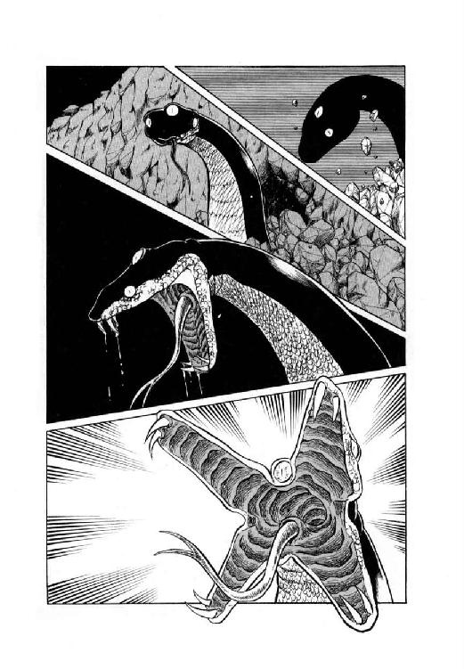
「感ジルゾ。コノ地ニハ、奴ガ居ル......」
「奴？」
肉体がこんな声出すの初めてだ、とルナは思わず眉を寄せた。頭の中の声は、さらに緊張感を高めて続く。
「奴ハ目覚メタ。スグニデモ出テクルゾ。向コウノ崖ニ破壊叫ヲ叩キコメ。サモナイト、厄介ナ事ニナル」
「叩きこめったって、あんた......」
ルナは狼狽して西側の崖を見やった。蛇神像の下に、巫女と族長たち、そして魔獣の出現に恐慌を起こした獣人の群衆が押しあいへしあいしている。あそこに破壊叫を叩きこんだら、それこそ皆殺しだ。
「...だめよ。それはだめ。できないわ」
「ワカッタ」
肉体の返事はいささかの苦味と、あきらめを含んでいた。と、有翼猫の姿に戻ったロコが、ばたばたと上昇してくる。
「どうしたんですか、ルナ様？」
「よくわからないんだけど、厄介な事になりそうなのよ」
我ながらわけわからん返事だ、と思いながらも、ルナは真剣な表情で答えた。案の定、烏猫は不審気な声を出す。
「何ですか、それ？」
「だからよくわからないって......あっ！」
ルナは思わず目を見張った。突然、西側の崖が大きく揺れ、蛇神像ががらがらと崩れだす。落石に逃げまどう獣人たちの頭上で、崖面にぽっかりと大穴が開いた。
「来ルゾ。奴ダ」
肉体が押し殺したような声で告げる。その瞬間、崖の穴から蛇神像そのままの巨大な黒蛇がにょろりと頭を出す。
「へ、蛇神が、復活したあ!?」
烏猫が目を丸くして叫んだ。族長以下の獣人たちが、一斉に平伏する。と、黒蛇の上顎と下顎がそれぞれぐわっと二つに割れ、十字型に大きく開く。そして十字の先端に各二本ずつ伸びている牙から、獣人たちの上に黒い液体がほとばしる。液を浴びた者はたちまち平伏したまま石像と化し、まぬがれた者は悲鳴をあげて逃げだす。ルナは思わず呟いた。
「...獣人の神様じゃないみたいね、あの黒蛇」
「奴ハ魔獣ダ。俺ト同ジクナ」
肉体が厳しい声で告げる。
「闘ウツモリナラ言ッテオク。八百年前、俺ハ奴ニサンザン悩マサレタンダゾ」
「ひ、ひえ～～」
ルナは息を吞んで黒蛇魔獣を見やった。相手も無表情な目で睨み返す。八百年の時を越え、今再び宿敵が相見えたのであった。
＜続く＞
第三巻予告（語り─ルネ・ニグス）
唐突といえば唐突な、黒蛇魔獣の登場で、一気に魔獣大決戦になだれ込んだ魔獣戦士ルナ・ヴァルガーッ！（ぱぱんぱんぱん）
第三巻でくり広げられるのは、人智を越えた魔獣同士の死闘か、はたまた無謀戦士の逆襲かあっ。さらには魔道都市につどう無気味の魔道士、獣人谷にうごめく獣人たちも、このまま済ませるつもりは毛頭なあーいっ！（ぱぱんぱんぱん）
はたまたお色気過剰の死霊術師ファラ・ミルドレッドに、本職娼婦リルの反撃はあるのかあっ。お邪魔虫キャラに転落寸前の、烏猫ロコの必死の挽回は効を奏すのかあっ。思わせぶりっこしながらも今いち影のうすい、若旦那ミル・ユードの活躍は、はたして第三巻で見られるのかあっ。大ぼけ魔道士ギルバートとパワー過剰の女戦士は、いったいこれからどうなるのかああっ！（ぱぱんぱんぱん）
そして何より最初の目標、聖山キュロスの大魔道士ザシャムは、本当に姿を見せるのかあっ。女主人公ルナは、円満に魔獣と別れることができるのかあっ。やーたらに張りめぐらせた伏線は、はたして全部おちがつくのかあっっ！（ぱぱんぱんぱんぱぱぱんぱん）
暗中模索、五里霧中、謎また謎呼ぶ今日このごろ、物語は第一部終了へ向けて怒濤の如く突っ走るうっ！（ぱぱんぱんぱん）
キャラクターの組合結成などとゆー、わけのわからん情報に泡をくいつつも、作者はとにかく無謀に進むっ。がんばれルナ、負けるなヴァルガー、闘え我らのルナ・ヴァルガァーッッ！！！（ぱんぱんぱんぱんぱぱんぱん）
というわけで、第三巻をお楽しみに。
電子書籍版あとがき
どうも、秋津です。
電子書籍化にあたって、本作『魔獣戦士ルナ・ヴァルガー』を久しぶりに読み返し、正直なところ、こう思いました。
今はもう、この勢いでは書けない。絶対に書けない。
年齢を重ね、体力が落ちているのが最大の理由ですが、実は私は当時から体力はなく、何度か倒れる寸前まで追いこまれています。
物語の途中で、倒れてしまっては話にならない。それは厳然たる事実です。
また、物語は徒競走ではないので、必ずしもハイペースが優れているとは限らない。しかし、ハイペースで始まった話が途中でローペースに切り替わったら、徒に読者を戸惑わせることになる。これも事実です。
何度か倒れそうになり、こういった事実を思い知らされた私は、自分が倒れずに書ききれる物語の規模とペースを模索するようになり、現在に至っています。
しかし、ルナ・ヴァルガーを読み返し、あらゆる意味で無理と無茶と無謀を重ねていた新人の頃を改めて思い返してみると。
もちろん後悔は山ほどありますが、それでも、あの時の自分は間違いなく前へ進んでいた。
倒れるのを怖れるのは当然ですし、倒れないようにペースを落とすのも悪いことではない。ですが、怖れるあまり前に進まないのでは、ペースも何もあったものではない。
新人の頃の勢いを取り戻すのは不可能でも、もう少し何とかしてみたらどうだ？
こういう思いを抱く契機になったという点でも、今回の電子書籍化の企画に対しては、大変ありがたく思っています。
魔獣戦士ルナ・ヴァルガー
②放浪
発行日 ２０１４年４月２５日
著者 秋津 透
発行 株式会社クリーク・アンド・リバー社
〒102－0083
東京都千代田区麴町2－10－9
(c) Tôru Akitsu 2014